All Weeks - Stacked
Every weekly study page is stacked here for continuous review. Use the outline sidebar for fast navigation, or search with Cmd K.
Week 1 - Intro & DP
Due this week
| Item | Type | Note |
|---|---|---|
| Readiness Check | self-assess | no due date — confirms prerequisites |
| Logistics quizzes | onboarding | communication, academic integrity |
| HW1 | written | DP problems |
| Quiz 1 | format | how DP answers are graded |
Watch the lecture (Intro & DP)
Learning objectives
- Convert an optimization problem into a bottom-up table with a clear subproblem, recurrence, fill order, and runtime.
- Distinguish a course-acceptable bottom-up DP answer from a recursion/memoization sketch.
- Recognize the state shape — one index, two indices, or capacity — and pick the matching recurrence pattern.
- Read the final answer out of the right table cell and state runtime as #entries × work-per-entry.
Core concepts
What dynamic programming is
Definition. DP solves a problem by combining answers to overlapping subproblems, each solved once and stored in a table. Intuition: recursion that would recompute the same calls is turned into a table you fill in a safe order.
- Works when the problem has optimal substructure (optimal answer built from optimal sub-answers) and overlapping subproblems (the same sub-answer is reused).
- Course style is bottom-up: define the table, fill smallest-to-largest, no recursion in the final write-up.
The 7-step DP template (apply to every DP answer)
- Subproblem in words — define exactly what one table entry means.
- Table entry + index ranges — name it (e.g. T(i), K(i, b)) and give the ranges.
- Base cases.
- Recurrence — and explain every branch of
the
min/max. - Fill order — the order that guarantees dependencies are ready.
- Where the answer lives — which cell holds the final result.
- Runtime = (number of entries) × (work per entry).
One-sequence DP
Fibonacci — warm-up for overlapping subproblems. Fi = Fi − 1 + Fi − 2, F0 = 0, F1 = 1. Fill i = 2 → n; answer Fn; runtime O(n).
Longest Increasing Subsequence (LIS). Subproblem L(i) = length of the longest increasing subsequence ending at index i. L(i) = 1 + max ({ 0 } ∪ { L(j) : j < i, aj < ai }).
- Base: every L(i) ≥ 1 (the element itself).
- Fill i = 1 → n; answer = maxiL(i) (not L(n) — the LIS can end anywhere).
- Runtime O(n2): n entries, O(n) scan each.
Two-sequence DP
Longest Common Subsequence (LCS). Subproblem L(i, j) on prefixes x1..i, y1..j. $$ L(i,j)= \begin{cases} 0 & i=0 \text{ or } j=0,\\ L(i-1,j-1)+1 & x_i = y_j,\\ \max\{L(i-1,j),\,L(i,j-1)\} & \text{otherwise.} \end{cases} $$
- Fill row-by-row (each cell needs up, left, up-left). Answer L(n, m); runtime O(nm).
Capacity DP
0/1 Knapsack. Subproblem K(i, b) = max value using items ≤ i within capacity b. K(i, b) = max { K(i − 1, b), vi + K(i − 1, b − wi) } (second option only if wi ≤ b).
- Two choices: skip item i (row i − 1, same b) or take it (row i − 1, reduced capacity).
- Base K(0, b) = 0. Answer K(n, B); runtime O(nB) — pseudo-polynomial (B is a value, not input bits).
Knapsack with repetition — items reusable. The "take" branch stays on the same row: K(i, b) = max { K(i − 1, b), vi + K(i, b − wi) }.
The single change — K(i, ⋅) instead of K(i − 1, ⋅) in the take branch — is the entire difference between 0/1 and unbounded knapsack. Know which one a problem wants.
Interval DP
Chain Matrix Multiply. Subproblem C(i, j) = min scalar multiplications to compute Ai⋯Aj (dimensions mi − 1 × mi). C(i, j) = mini ≤ k < j [ C(i, k) + C(k + 1, j) + mi − 1 mk mj ], C(i, i) = 0.
- Fill by increasing interval length j − i. Answer C(1, n); runtime O(n3) (O(n2) entries × O(n) split choices).
Algorithms — summary
| Problem | Subproblem | Recurrence kernel | Entries × work | Runtime |
|---|---|---|---|---|
| Fibonacci | Fi | Fi − 1 + Fi − 2 | n × O(1) | O(n) |
| LIS | L(i) end at i | 1 + max L(j) | n × O(n) | O(n2) |
| LCS | L(i, j) | match / drop | nm × O(1) | O(nm) |
| 0/1 Knapsack | K(i, b) | take / skip | nB × O(1) | O(nB) |
| Chain Multiply | C(i, j) | best split k | n2 × O(n) | O(n3) |
Worked example — LCS of
X = ABCB, Y = BDCAB
Fill L(i, j) (rows = X, cols = Y). Diagonal +1 on a match, else max(up, left):
| ∅ | B | D | C | A | B | |
|---|---|---|---|---|---|---|
| ∅ | 0 | 0 | 0 | 0 | 0 | 0 |
| A | 0 | 0 | 0 | 0 | 1 | 1 |
| B | 0 | 1 | 1 | 1 | 1 | 2 |
| C | 0 | 1 | 1 | 2 | 2 | 2 |
| B | 0 | 1 | 1 | 2 | 2 | 3 |
Answer L(4, 5) = 3 (one LCS is
BCB).
Common pitfalls / exam traps
- LIS answer is maxiL(i), not L(n) — a frequent mistake.
- Writing a recursive/memoized function instead of a bottom-up table loses credit in this course.
- Mixing 0/1 and repetition knapsack recurrences (the i vs i − 1 in the take branch).
- Forgetting capacity guard wi ≤ b on the take branch.
- Reporting runtime without the #entries × work justification.
How to answer (HW / exam)
Give the bottom-up recurrence + table, not a recursive/memoized function. Always finish with the runtime as #entries × work-per-entry. See DP guidance and DP recurrence relations.
Go deeper — readings · guidance · notes
Comprehensive Notes
Full lecture notes for this week's modules, figures inline. The summary above is the quick-reference; this is the deep read.
DP1 — Dynamic Programming (FIB, LIS, LCS)
Definition. Dynamic programming combines solutions of subproblems to solve a larger problem efficiently — typically for optimization problems that have many feasible outcomes but one optimal value.
General design methodology:
- Characterize the structure of an optimal solution.
- Define the value of the optimal solution in recursive terms.
- Compute the value of an optimal solution (typically bottom-up).
- (optional) Reconstruct an optimal solution from the computed table.
Class methodology (what graders expect):
- First — define the subproblem in words. Almost every DP problem is an array of 1+ dimensions; say in English what each entry means (e.g. "T(i, j) is the min sum of values up to index i, j"). Consider constraints/boundaries (there almost always is one).
- Second — write the recurrence in terms of
subproblems, including base cases (often T(0) or T(i, 0)). The base case
cannot be part of the recurrence; if T(0) is the base, the recurrence
starts at 1. You may need a
max/minor a piecewise function. - Third — pseudocode (math + programming; if it would compile cleanly it's probably too code-like).
- Fourth — runtime in Big-O.
Good subproblems on a sequence X of length n: prefixes x[ : i], suffixes x[i : ], substrings x[i : j] (first two linear, last polynomial).
Fibonacci — why DP
Recursive definition Fn = Fn − 1 + Fn − 2, F0 = 0, F1 = 1. The naive recursive algorithm recomputes the same calls:
Fib1(n):
if n = 0 return 0
if n = 1 return 1
return Fib1(n-1) + Fib1(n-2)Runtime T(n) ≤ O(1) + T(n − 1) + T(n − 2). Since $F_n \approx \phi^n/\sqrt{5}$ (ϕ ≈ 1.618), this is exponential — each branch recomputes shared values (e.g. both Fib1(n − 1) and Fib1(n − 2) need Fib1(n − 3)). Fill a table instead:
Fib2(n):
F[0]=0; F[1]=1
for i = 2 to n: F[i] = F[i-1] + F[i-2]
return F[n]Runtime O(n).
Key idea. A DP solution uses no recursion and no memoization/hashtables — you fill a table bottom-up.
LIS — Longest Increasing Subsequence
Goal: the length of the longest increasing subsequence of a1, …, an (not the subsequence itself). A substring is consecutive elements; a subsequence is any in-order subset (skipping allowed).
- Subproblem: L(i) = length of the LIS ending at index i.
Key idea. It's the last element that matters — the LIS ending at i extends the best earlier LIS whose final value is smaller than ai.
L(i) = 1 + maxj{ L(j) : aj < ai, j < i } (max of ⌀ = 0).
LIS(a):
for i = 1 to n:
L(i) = 1
for j = 1 to i-1:
if a_j < a_i and L(i) < 1 + L(j):
L(i) = 1 + L(j)
return max(L(:)) # NOT L(n)Runtime O(n2) + O(n) = O(n2).
LCS — Longest Common Subsequence
Input two strings X = x1⋯xn, Y = y1⋯ym; goal is the length of the longest string that is a subsequence of both. First instinct is a single index L(i) on equal-length prefixes, but that fails: when the last characters xi ≠ yj the LCS may drop xi or yj, leaving prefixes of different lengths — which a one-parameter table cannot express.
Fix: two parameters. L(i, j) = length of the LCS of X[1..i] and Y[1..j].
$$ L(i,j)= \begin{cases} 0 & i=0 \text{ or } j=0,\\ 1 + L(i-1,j-1) & x_i = y_j,\\ \max\{\,L(i-1,j),\ L(i,j-1)\,\} & x_i \ne y_j. \end{cases} $$
- Equal case: the LCS must end in that common character (else append it for a longer one) — so +1 and recurse on L(i − 1, j − 1).
- Unequal case: the LCS drops xi or yj (or both) — take the better of L(i − 1, j) and L(i, j − 1).
LCS(X,Y):
for i = 0 to n: L(i,0) = 0
for j = 0 to m: L(0,j) = 0
for i = 1 to n:
for j = 1 to m:
if X[i] = Y[j]: L(i,j) = 1 + L(i-1,j-1)
else: L(i,j) = max{ L(i,j-1), L(i-1,j) }
return L(n,m)L is a table (not a vector like the earlier problems); runtime O(nm).

Contiguous subsequence (DPV 6.1)
Max-sum contiguous subsequence. Subproblem T(i) = max sum of a contiguous subsequence ending at i. Working small cases by hand shows a negative last element should not be ended on — zero it out:
T(0) = 0, T(i) = ai + max { T(i − 1), 0 } (1 ≤ i ≤ n).
Answer maxiT(i), runtime O(n). Trace on 5, 15, −30, 10, −5, 40, 10 ⇒ 5, 20, −10, 10, 5, 45, 55.
Coin game (substring DP)
A row of coins v0, …, vn − 1; two players alternately take the left-most or right-most coin; maximize your total. Neither prefixes nor suffixes work (either side is takeable), so use a substring with a player index. X(i, j, p) = max value player p gets from coins vi, …, vj:
X(i, j, me) = max { X(i + 1, j, you) + vi, X(i, j − 1, you) + vj }, X(i, j, you) = min { X(i + 1, j, me), X(i, j − 1, me) }.
(The opponent minimizes your score; you don't gain vi/vj on their move.) Topological order: increasing j − i. Base X(i, i, me) = vi, X(i, i, you) = 0. Answer X(0, n, me), runtime O(n2).
DP2 — Knapsack & Chain Multiply
Edit distance (bonus)
Cheapest sequence of Insert / Delete / Replace turning x → y (cost 1 each). With E(i, j) over prefixes:
E(i, j) = min { replace + E(i − 1, j − 1), insert + E(i, j − 1), delete + E(i − 1, j) }.
Base E(i, 0) = i, E(0, j) = j; runtime O(nm).
Knapsack
Input: n objects with integer weights w1, …, wn and values v1, …, vn, capacity B. Find S with ∑i ∈ Swi ≤ B maximizing ∑i ∈ Svi. Two variants: V1 one copy of each object; V2 unlimited supply.
Watch out — greedy fails. Sorting by value-per-weight ri = vi/wi and taking greedily is suboptimal for knapsack.
Example (capacity 22):
objects 1 2 3 4
values 15 10 8 1
weights 15 12 10 5Greedy takes object 1 (weight 15), can't fit 2 or 3, adds 4 → value 15 + 1 = 16. Optimal is objects {2, 3}: weight 12 + 10 = 22, value 10 + 8 = 18.
V1 (0/1). A one-parameter K(i) fails — reaching the optimum at i = 3 requires having taken a suboptimal set at i = 2 (take object 2, not 1, to leave capacity for 3). Fix: add capacity to the state. K(i, b) = max value using a subset of objects 1..i with total weight ≤ b:
$$ K(i,b)= \begin{cases} \max\{\,v_i + K(i{-}1,\,b-w_i),\ \ K(i{-}1,b)\,\} & w_i \le b,\\ K(i{-}1,b) & w_i > b. \end{cases} $$
Base K(0, b) = 0, K(i, 0) = 0. Answer K(n, B), runtime O(nB).
Watch out — pseudo-polynomial. O(nB) is not polynomial in the input: B is a single number taking log B bits, so doubling B from 16 to 32 adds only one input bit but doubles the work.
V2 (unlimited / multiset). Either add no more copies of i (→ K(i − 1, b)) or add another copy of i (→ vi + K(i, b − wi), note the same row i):
K(i, b) = max { K(i − 1, b), vi + K(i, b − wi) } (second term if wi ≤ b).
This is valid because K(i, b − wi) is a previous column in the same row. It collapses to a one-parameter form:
K(b) = maxi{ vi + K(b − wi) : 1 ≤ i ≤ n, wi ≤ b }.


Electoral College (knapsack-style)
Pick states with smallest total population giving ≥ Z electoral votes. T(i, z) = min population to reach ≥ z votes using states 1..i. Base T(0, z) = ∞ (no states ⇒ can't reach Z).
$$ T(i,z)= \begin{cases} \min\{\,T(i{-}1,z),\ \ p_i + T(i{-}1,\,z-v_i)\,\} & v_i < z,\\ \min\{\,p_i,\ \ T(i{-}1,z)\,\} & v_i \ge z. \end{cases} $$
Answer T(n, Z), runtime O(nZ).
Chain Matrix Multiply
Compute A1 × ⋯ × An (Ai is mi − 1 × mi) with the fewest scalar multiplications. Multiplication is associative, so parenthesization is free to choose but changes cost: multiplying a a × b by a b × c matrix costs acb. Represent a parenthesization as a binary tree:


Substring subproblem: C(i, j) = min cost to compute Ai⋯Aj. Split at l into Ai⋯Al and Al + 1⋯Aj, merge cost mi − 1mlmj:
C(i, i) = 0, C(i, j) = min i ≤ l ≤ j − 1[ C(i, l) + C(l + 1, j) + mi − 1 ml mj ].
Fill by increasing interval length s = j − i: first the diagonal C(i, i), then C(i, i + 1), etc., up to C(1, n).

ChainMultiply(m0,...,mn):
for i = 1 to n: C(i,i) = 0
for s = 1 to n-1:
for i = 1 to n-s:
j = i + s
C(i,j) = infinity
for l = i to j-1:
curr = m[i-1]*m[l]*m[j] + C(i,l) + C(l+1,j)
if C(i,j) > curr: C(i,j) = curr
return C(1,n)Runtime O(n3) (O(n2) entries × O(n) split choices).
DPV chapter exercises
DPV chapter exercises (exact, from the textbook)
Exact end-of-chapter exercises, parsed from the DPV chapter PDFs.
DPV Ch 6 — Dynamic Programming — open exercises · chapter PDF
DPV Ch 0 — Prologue — open exercises · chapter PDF
Agent hint
DP question → apply the 7-step template; pick the recurrence pattern by state shape (1-index / 2-index / capacity / interval); verify it's bottom-up; end with runtime = #entries × work. Pull exact grading expectations from the DP guidance docs.
Week 2 - Divide & Conquer
Due this week
| Item | Type | Note |
|---|---|---|
| HW2 | written | D&C problems |
| Quiz 2 | format | how D&C answers are graded |
| Logistics quizzes | onboarding | due Week 2 |
Watch the lecture (D&C Foundations)
Learning objectives
- Set up and solve a divide-and-conquer recurrence with the Master theorem.
- Use the recursion-tree view to explain why each Master case holds.
- Derive Karatsuba integer multiplication and its O(nlog23) exponent.
- Write a D&C answer as a narrative: algorithm → correctness → runtime (no pseudocode when words are asked).
Core concepts
The divide-and-conquer schema
Definition. Split the input into a subproblems of size n/b, solve recursively, then combine in O(nd). Intuition: the recurrence's behavior is a race between how fast subproblems multiply (a) and how fast they shrink (b), measured against the combine cost (nd).
Master theorem
For T(n) = a T(n/b) + O(nd) with a ≥ 1, b > 1, d ≥ 0: $$ T(n)= \begin{cases} O(n^d) & d > \log_b a \quad(\text{top-heavy: root dominates}),\\ O(n^d \log n) & d = \log_b a \quad(\text{balanced: } \log n \text{ equal levels}),\\ O\!\left(n^{\log_b a}\right) & d < \log_b a \quad(\text{leaf-heavy: leaves dominate}). \end{cases} $$
Key idea. One comparison decides everything: d vs logba is work-at-the-root vs work-at-the-leaves.
Recursion-tree intuition (why the cases hold)
- Level k has ak nodes, each of size n/bk, doing O((n/bk)d) work.
- Per-level work = ak(n/bk)d = nd(a/bd)k
— a geometric series in ratio a/bd.
- ratio < 1 → series dominated by the top level → O(nd).
- ratio = 1 → all logbn levels equal → O(ndlog n).
- ratio > 1 → dominated by the bottom (leaves, count nlogba) → O(nlogba).
Fast integer multiplication (Karatsuba)
Split each n-digit number: x = a B + b, y = c B + d with B = 10n/2. Naively xy needs 4 half-size products (ac, ad, bc, bd). Karatsuba computes it with 3 using the identity xy = ac B2 + [(a + b)(c + d) − ac − bd]B + bd, where the middle term reuses ac and bd. Recurrence and solution: T(n) = 3 T(n/2) + O(n) ⇒ T(n) = O (nlog23) = O(n1.585).
Why it wins. Dropping 4→3 subproblems lowers logba from log24 = 2 to log23 ≈ 1.585; since d = 1 < log23, the leaf-heavy case applies.
Algorithms — recurrence reference
| Recurrence | a, b, d | vs logba | Solves to | Example |
|---|---|---|---|---|
| T(n) = 2T(n/2) + O(n) | 2, 2, 1 | d = logba | O(nlog n) | mergesort, binary D&C |
| T(n) = 3T(n/2) + O(n) | 3, 2, 1 | d < logba | O(n1.585) | Karatsuba |
| T(n) = 4T(n/2) + O(n) | 4, 2, 1 | d < logba | O(n2) | naive multiply |
| T(n) = 2T(n/2) + O(1) | 2, 2, 0 | d < logba | O(n) | tree traversal |
| T(n) = T(n/2) + O(1) | 1, 2, 0 | d = logba | O(log n) | binary search |
Worked example — solving T(n) = 3T(n/2) + O(n)
- Identify a = 3, b = 2, d = 1.
- Compute logba = log23 ≈ 1.585.
- Compare: d = 1 < 1.585 → leaf-heavy (third Master case).
- Result: T(n) = O (nlog23) = O(n1.585). (Matches Karatsuba.)
Common pitfalls / exam traps
- Plugging into Master with the wrong d — d is the exponent of the combine cost, not the recursion.
- Using Master when it doesn't apply (non-constant a/b, subtractive recurrences like T(n − 1)) — solve by tree/substitution instead.
- Writing pseudocode when the prompt asks for an algorithm — this course wants narrative.
- Claiming Karatsuba is O(nlog n) — it is O(n1.585); FFT-based multiply (Week 11) is the O(nlog n) one.
How to answer (HW / exam)
Describe the split/recurse/combine in words, argue correctness, then write & solve the recurrence. No pseudocode when the prompt asks for an algorithm. See D&C guidance and solving recurrences.
Go deeper — readings · guidance · notes
Comprehensive Notes
Full lecture notes for this week's modules. The summary above is the quick-reference; this is the deep read.
DC1 — Fast Integer Multiplication
Problem. Given two n-bit integers x, y, compute z = x ⋅ y; measure runtime in the number of bits n.
Key idea (Gauss's trick). Addition/subtraction are cheap, multiplication is expensive — so trade multiplications for additions.
For complex numbers, (a + bi)(c + di) = (ac − bd) + (bc + ad)i naively needs 4 real multiplications. But the cross term bc + ad hides inside (a + b)(c + d) = ac + bd + bc + ad, so
bc + ad = (a + b)(c + d) − ac − bd.
That gives 3 multiplications: ac, bd, and (a + b)(c + d).
Divide & conquer split. Take n a power of 2. Split x into high/low halves xℓ, xr (and likewise y), so
x = xℓ ⋅ 2n/2 + xr, x ⋅ y = 2n(xℓyℓ) + 2n/2(xℓyr + xryℓ) + xryr.
E.g. 182 = (10110110)2, xℓ = 1011 = 11, xr = 0110 = 6, and 182 = 11 ⋅ 24 + 6.

Naive version — 4 recursive multiplies:
EasyMultiply(x, y): # x,y are n-bit, n = 2^k
x_l,x_r = halves of x; y_l,y_r = halves of y
A = EasyMultiply(x_l, y_l)
B = EasyMultiply(x_r, y_r)
C = EasyMultiply(x_l, y_r)
D = EasyMultiply(x_r, y_l)
return 2^n A + 2^(n/2)(C + D) + BT(n) = 4T(n/2) + O(n) = O(n2) — no better than schoolbook.
Karatsuba — apply Gauss to cut to 3 multiplies. Note xℓyr + xryℓ = (xℓ + xr)(yℓ + yr) − xℓyℓ − xryr, reusing A and B:
FastMultiply(x, y):
x_l,x_r = halves of x; y_l,y_r = halves of y
A = FastMultiply(x_l, y_l)
B = FastMultiply(x_r, y_r)
E = FastMultiply(x_l + x_r, y_l + y_r)
return 2^n A + 2^(n/2)(E - A - B) + BNow only 3 recursive multiplications of size n/2:
T(n) = 3T(n/2) + O(n).
Expanding gives a geometric series $cn\big(1 + \tfrac32 + (\tfrac32)^2 + \cdots + (\tfrac32)^{\log_2 n}\big)$; since $\tfrac32 > 1$ the last term dominates, so
$$ T(n) = O\!\big(n \cdot (\tfrac32)^{\log_2 n}\big) = O(3^{\log_2 n}) = O\!\big(n^{\log_2 3}\big),\qquad \log_2 3 \approx 1.59. $$
(Splitting into more than 2 parts can lower the exponent, but recombination gets harder.)
Worked example. x = 182 = (1011 0110)2, y = 154 = (1001 1010)2: xℓyℓ = 11 ⋅ 9 = 99, xryr = 6 ⋅ 10 = 60, (xℓ + xr)(yℓ + yr) = 17 ⋅ 19 = 323. Then 182 × 154 = 99 ⋅ 256 + (323 − 99 − 60) ⋅ 16 + 60 = 28028.
DC3 — Solving Recurrences
Recurrences that arise in divide & conquer (and their solutions):
| Recurrence | Solves to | Source |
|---|---|---|
| T(n) = 2T(n/2) + O(n) | O(nlog n) | mergesort |
| T(n) = 4T(n/2) + O(n) | O(n2) | naive multiplication |
| T(n) = 3T(n/2) + O(n) | O(nlog23) | Karatsuba |
| T(n) = T(3n/4) + O(n) | O(n) | median finding |
Method — unroll into a geometric series. Replace O(n) with cn and substitute repeatedly. For T(n) = 4T(n/2) + cn:
$$ T(n) \le cn\Big(1 + \tfrac42 + (\tfrac42)^2 + \cdots + (\tfrac42)^{i-1}\Big) + 4^i\,T(n/2^i). $$
Set i = log2n so n/2i = 1: the series sum is O((4/2)log2n) = O(n2/n) = O(n) and 4log2nT(1) = O(n2), giving T(n) = O(n2).
Geometric series. For α > 0,
$$ \sum_{j=0}^{k}\alpha^j = 1 + \alpha + \cdots + \alpha^k = \begin{cases} O(\alpha^k) & \alpha > 1\ \ (\text{last term dominates}),\\ O(k) & \alpha = 1,\\ O(1) & \alpha < 1\ \ (\text{first term dominates}). \end{cases} $$
Exponential ↔︎ polynomial. Since 3 = 2log23,
3log2n = (2log23)log2n = (2log2n)log23 = nlog23.
Master theorem. If T(n) = a T(n/b) + O(nd) with a > 0, b > 1, d ≥ 0:
$$ T(n)= \begin{cases} O(n^d) & d > \log_b a,\\ O(n^d \log n) & d = \log_b a,\\ O(n^{\log_b a}) & d < \log_b a. \end{cases} $$
Special case T(n) = aT(n/b) + O(n) (i.e. d = 1): if a < b then O(n) (first term dominates); if a = b then O(nlog n); if a > b then O(nlogba) (last term dominates).
Examples: T(n/2) + O(1): a = 1, b = 2, d = 0, log21 = 0 = d ⇒ O(n0log n) = O(log n). 2T(n/3) + O(1): a = 2, b = 3, d = 0, log32 > 0 = d ⇒ O(nlog32).
DPV chapter exercises
DPV chapter exercises (exact, from the textbook)
Exact end-of-chapter exercises, parsed from the DPV chapter PDFs.
DPV Ch 2 — Divide And Conquer — open exercises · chapter PDF
Agent hint
D&C question → identify a, b, d, compare d vs logba, apply the matching Master case; for multiplication cite Karatsuba's T(n) = 3T(n/2) + O(n) = O(nlog23). Keep the algorithm narrative, not pseudocode.
Week 3 - Linear-Time Median
Due this week
| Item | Type | Note |
|---|---|---|
| HW3 | coding | |
| HW4 | coding | |
| Quiz 3 | content | DP + D&C |
| Mock Exam | practice | no due date — exam-format rehearsal |
Watch the lecture (Linear-Time Median)
Learning objectives
- State the selection problem and solve it in worst-case O(n).
- Explain the median-of-medians pivot and prove the linear bound from its recurrence.
- Relate QuickSelect, pivot quality, and the role of the "good pivot" guarantee.
Core concepts
The selection problem
Definition. select(A, k) returns the
k-th smallest element of an
unsorted array (median is k = ⌈n/2⌉).
Intuition: you want order statistics without paying
O(nlog n)
to sort everything.
QuickSelect (and why pivots matter)
QuickSelect. Partition A around a pivot p; the pivot lands in its sorted position r. If r = k done; else recurse into the side containing the k-th element — one side only.
- A good pivot (near median) gives T(n) = T(n/2) + O(n) = O(n).
- A bad pivot (min/max each time) gives T(n) = T(n − 1) + O(n) = O(n2) worst case.
- Random pivot is O(n) expected, but the course wants a worst-case guarantee.
Median of medians — the deterministic good pivot
Idea. Manufacture a provably-decent pivot:
- Split the n elements into ⌈n/5⌉ groups of 5.
- Find each group's median (constant work per group → O(n) total).
- Recursively select the median of those n/5 medians; use it as the pivot.
Why the pivot is good. That pivot is ≥ at least 3 elements in half the groups, so it is greater than $\ge \tfrac{3}{10}n$ and less than $\ge \tfrac{3}{10}n$ elements. Hence each recursive call discards $\ge \tfrac{3}{10}n$, leaving $\le \tfrac{7}{10}n$.
Algorithms
Linear-time selection (median of medians) — O(n)
- Group into fives, find group medians — O(n).
- Pivot = select the median of the medians recursively on n/5 items.
- Partition around the pivot — O(n).
- Recurse into the one side that holds the k-th element (size ≤ 7n/10).
Recurrence and solution: $$ T(n)\ \le\ T\!\left(\tfrac{n}{5}\right) + T\!\left(\tfrac{7n}{10}\right) + O(n)\ \Rightarrow\ T(n)=O(n). $$
| Algorithm | Pivot | Worst case |
|---|---|---|
| Mergesort (full sort) | — | O(nlog n) |
| QuickSelect | random / first | O(n2) (expected O(n)) |
| Median-of-medians select | median of group-of-5 medians | O(n) |
Key theorems & results
Linear-selection theorem. The recurrence T(n) ≤ T(n/5) + T(7n/10) + O(n) solves to T(n) = O(n). Proof sketch (substitution). Guess T(n) ≤ cn. Then $$ T(n)\le \tfrac{cn}{5} + \tfrac{7cn}{10} + an = cn\!\left(\tfrac{1}{5}+\tfrac{7}{10}\right) + an = \tfrac{9}{10}cn + an. $$ This is ≤ cn whenever $\tfrac{1}{10}cn \ge an$, i.e. c ≥ 10a. So T(n) = O(n). ∎
The crux is $\tfrac{1}{5}+\tfrac{7}{10}=\tfrac{9}{10}<1$: the two recursive pieces are strictly smaller than n, so the linear combine cost doesn't accumulate. Groups of 3 give $\tfrac{2}{3}+\tfrac{1}{3}=1$ and fail; groups of 5 are the smallest odd size that works.
Worked example — unrolling the recurrence
Total work $\le an\left(1 + \tfrac{9}{10} + \left(\tfrac{9}{10}\right)^2 + \cdots\right) = an\cdot\dfrac{1}{1-\tfrac{9}{10}} = 10\,an = O(n)$. The geometric series in ratio $\tfrac{9}{10}$ is what bounds it.
Common pitfalls / exam traps
- Claiming QuickSelect is worst-case O(n) — it is only expected O(n); median-of-medians is the worst-case version.
- Forgetting the pivot itself is found by a recursive select on n/5 — both recursive terms must appear.
- Using groups of 3 (the fractions sum to 1, breaking linearity).
- Re-deriving the $\tfrac{3}{10}$ constants on an exam — usually cite the recurrence and the O(n) result.
How to answer (HW / exam)
Treat linear-time selection as a black box — cite the recurrence and the O(n) result; don't re-derive the constant fractions unless asked. See D&C guidance.
Go deeper — readings · guidance · notes
Comprehensive Notes
Full lecture notes for this week's module. The summary above is the quick-reference; this is the deep read.
DC2 — Linear-Time Median (Selection)
Problem. Given an unsorted list A = [a1, …, an], find the median, defined as the ⌈n/2⌉-th smallest element. We solve the more general selection problem: find the k-th smallest element (1 ≤ k ≤ n); median is k = n/2.
Trivial bounds. If A is sorted, output A[k]. Otherwise sort (mergesort, O(nlog n)) then index — O(nlog n). Can we beat sorting? Yes — O(n).
QuickSelect — recurse on one side only. Like QuickSort but we only recurse into the one partition that must contain the k-th element:
Select(A, k):
choose a pivot p
partition A into A<p, A=p, A>p
if k <= |A<p|: return Select(A<p, k)
if |A<p| < k <= |A<p| + |A=p|: return p
if k > |A<p| + |A=p|: return Select(A>p, k - |A<p| - |A=p|)Example: A = [5, 2, 20, 17, 11, 13, 8, 9, 11], p = 11 → A < p = [5, 2, 8, 9], A = p = [11, 11], A > p = [20, 17, 13]. k is a position, not a value: if k < 4 recurse left; if 4 < k ≤ 6 return 11; if k > 6 recurse right on the (k − 6)-th.
Key idea — pivot quality is everything. A worst pivot (min/max) shrinks the problem by one element → O(n2); the true median gives T(n) = T(n/2) + O(n) = O(n) — but that median is the very thing we're computing.
An approximate median suffices: any pivot that discards a constant fraction keeps it linear (e.g. T(3n/4) + O(n) = O(n), even T(0.99n) + O(n) = O(n)).
Good pivot, defined. p is good if |A < p| ≤ 3n/4 and |A > p| ≤ 3n/4 (both sides at most 3n/4). We must find one in O(n).
- Random pivot? Half the elements are good, so Pr (good) = 1/2 — O(n) expected time. But expected ≠ guaranteed, and we want a worst-case guarantee.
- Median of medians. We have budget for T(3n/4) + T(n/5) + O(n)
(since $\tfrac34 + \tfrac15 < 1$).
Pick p as the median of a
representative subset S of
size n/5:
- Break A into n/5 groups of 5.
- Sort each group — O(1) each (size is the constant 5), O(n) total.
- Take each group's median; collect them into S.
- $p = $ median of S (a
recursive
FastSelecton S).
FastSelect(A, k):
break A into ceil(n/5) groups G_1..G_{n/5}
for each G_i: sort(G_i); m_i = median(G_i)
S = {m_1, ..., m_{n/5}}
p = FastSelect(S, n/10) # median of medians
partition A into A<p, A=p, A>p
if k <= |A<p|: return FastSelect(A<p, k)
if k > |A>p| + |A=p|: return FastSelect(A>p, k - |A<p| - |A=p|)
else return pRuntime. Grouping O(n) + sorting groups O(n) + median-of-medians T(n/5) + recurse on one side T(3n/4):
T(n) = T(3n/4) + T(n/5) + O(n) = O(n).
The two recursive sizes sum to $\tfrac34 + \tfrac15 = \tfrac{19}{20} < 1$, which is exactly why it collapses to linear.

Exercise (worth pondering for the exam): why groups of 5 — why not 3 or 7?
DPV chapter exercises
DPV chapter exercises (exact, from the textbook)
Exact end-of-chapter exercises, parsed from the DPV chapter PDFs.
DPV Ch 2 — Divide And Conquer — open exercises · chapter PDF
Agent hint
Selection question → use median-of-medians as a black box, cite T(n) ≤ T(n/5) + T(7n/10) + O(n) = O(n), and note the $\tfrac{9}{10}<1$ collapse. This is the last unit before Exam 1 (covers W1–3).
Week 4 - DP3, SCC, 2-SAT
EXAM 1 Window
| Assessment | Exam 1 (format and scheduling per course syllabus) |
| Coverage | Weeks 1–3 — DP1–DP2, DC1–DC3 |
Watch the lecture (DP & Graph Intro)
Learning objectives
- Run DFS, compute pre/post numbers, classify the four edge types, detect cycles, topologically sort.
- Find SCCs with the two-pass algorithm and explain why graph reversal works.
- Build a 2-SAT implication graph and decide satisfiability via SCCs.
- Choose the right shortest-path DP (Bellman-Ford / Floyd-Warshall / DAG) for weights and structure.
Core concepts
DFS and pre/post numbers — the graph foundation
Definition. DFS stamps each vertex with a pre number (when first visited) and a post number (when finished). These intervals nest like parentheses.
- Topological sort (DAGs only): order vertices by decreasing post number.
- Cycle ⟺ a back edge exists — an edge (u, v) to an ancestor, i.e.
with
post[u] < post[v]. - Four edge types (directed DFS): tree, back (to ancestor → cycle), forward (to descendant), cross (between subtrees).
Strongly Connected Components (GR1)
Definition. u ∼ v iff u reaches v and v reaches u. SCCs partition V; the metagraph (contract each SCC) is always a DAG. Intuition: SCCs are the "two-way reachable" blobs; between blobs reachability is one-way.
- Source lemma: the vertex with the highest post number (in DFS on GR) lies in a sink SCC of G. Peeling sink SCCs in that order isolates one SCC per DFS tree.
2-SAT (GR2)
Definition. Decide a 2-CNF formula (each clause has 2 literals). Build the implication graph on 2n literal vertices: clause (a ∨ b) adds the two implications ¬a ⇒ b and ¬b ⇒ a. Satisfiability criterion: f satisfiable ⇔ ∀i, xi and ¬xi lie in different SCCs. Intuition: if xi and ¬xi are mutually reachable, the clauses force xi ⇒ ¬xi and back — a contradiction.
Shortest paths as DP (DP3)
Bellman-Ford — DP over number of edges. Let dist(k)(v) = shortest s → v path using ≤ k edges: dist(k)(v) = min (dist(k − 1)(v), min(u, v) ∈ E dist(k − 1)(u) + w(u, v)).
- Run k = 1…n − 1. A further decrease at k = n means a negative cycle. Runtime O(nm).
Algorithms
SCC decomposition (two-pass) — O(n + m)
- Run DFS on the reverse graph GR; record post numbers.
- Process vertices of G in decreasing GR post order; each new DFS tree in G is one SCC.
2-SAT solver — O(n + m)
- Build the implication graph (2 implications per clause).
- Compute SCCs.
- If any xi, ¬xi share an SCC → UNSAT.
- Else assign each variable by reverse topological SCC order (later SCC = true).
Shortest-path chooser
| Algorithm | Graph | Negative weights | Runtime |
|---|---|---|---|
| BFS | unweighted | — | O(n + m) |
| Dijkstra | non-negative weights | no | O((n + m)log n) |
| Bellman-Ford (DP) | general, detects neg cycles | yes | O(nm) |
| Floyd-Warshall (DP) | all-pairs | yes (no neg cycle) | O(n3) |
| DAG shortest path | DAG | yes | O(n + m) (topo order) |
Key theorems & results
- Cycle ⟺ back edge. DFS on G has a back edge iff G has a directed cycle.
- Metagraph is a DAG. Contracting SCCs never creates a cycle (else the blobs would merge).
- 2-SAT lemma. f is satisfiable iff no variable shares an SCC with its negation; assignment by reverse-topo SCC order is consistent.
Worked example — SCC ordering
Graph A → B → C → A (one SCC {A, B, C}) plus C → D, D a sink.
- GR: A → C → B → A, D → C. DFS on GR gives highest post in {A, B, C} (a source SCC of GR = sink-side of G).
- Processing G by decreasing GR post peels {A, B, C} first as one tree, then {D}. Metagraph: {A, B, C} → {D} — a DAG.
Common pitfalls / exam traps
- Sorting by increasing post for topo order (it is decreasing).
- Reducing graph problems by rewriting a black box's internals — instead transform input/output.
- Using Dijkstra with negative weights (invalid) — switch to Bellman-Ford.
- In 2-SAT, forgetting both implications per clause, or mis-assigning truth (later SCC in topo order = true).
How to answer (HW / exam)
Graph problems = transform input/output around a black box (DFS, SCC, BFS, Dijkstra). Don't rewrite the black box. See graph guidance · usable black boxes.
Go deeper — readings · guidance · deep notes
- DPV §3.1–3.4 (graphs) · §4.x (paths) · §6.x (DP shortest path)
- Graph guidance · Black boxes · DP guidance
- Deep notes: GR0 fundamentals · GR1 SCC · GR2 2-SAT · cheat sheet
- lectures/ · transcripts/ · readings/ · guidance/ · notes/
Comprehensive Notes
Full lecture notes for this week's modules (DP3 shortest paths, GR0 graph foundations, GR1 SCCs, GR2 2-SAT), with figures and diagrams inline.
GR0 — Graph Fundamentals
Graph. G = (V, E): vertices V and edges E connecting pairs. Undirected edges are unordered {u, v}; directed edges are ordered (u, v) (so A → B does not imply B → A). We assume simple graphs (no self-loops, no parallel edges).
| Term | Definition |
|---|---|
| Degree deg (v) | number of incident edges; in-/out-degree for directed |
| Path / Cycle | sequence of edges; cycle returns to start |
| Connected (undirected) | a path between every pair |
| Strongly connected (directed) | for every u, v: paths u → v and v → u |
| DAG | directed acyclic graph |
| Source / Sink | in-degree 0 / out-degree 0 |
Representations. Adjacency matrix: O(n2) space, O(1) edge lookup, O(n) to list neighbors. Adjacency list: O(n + m) space, O(deg ) lookup/iterate. This course uses adjacency lists (most graphs are sparse).
BFS explores level by level and finds shortest paths in unweighted graphs, O(n + m):

BFS(G, s):
for all v: dist[v] = ∞; prev[v] = null
dist[s] = 0; Q = queue containing s
while Q not empty:
v = dequeue(Q)
for all (v,w) ∈ E:
if dist[w] = ∞:
dist[w] = dist[v] + 1; prev[w] = v; enqueue(Q, w)Dijkstra = BFS for positive-weighted graphs, O((|V|+|E|)log |V|) with a min-heap; it fails on negative weights (use Bellman-Ford). Key facts: any subpath of a shortest path is shortest; triangle inequality dist (u, v) ≤ dist (u, x) + dist (x, v).
DFS explores as deep as possible, backtracking — the
foundation for SCCs, topological sort, and cycle detection. For directed
graphs add a clock recording pre
(discovery) and post (completion):
Explore(z):
pre[z] = clock++; visited[z] = true
for all (z,w) ∈ E:
if not visited[w]: Explore(w)
post[z] = clock++Pre/post intervals nest: if [pre(u), post(u)] contains [pre(v), post(v)] then u is an ancestor of v; disjoint intervals mean neither is an ancestor.
Edge types (directed DFS): tree, back (descendant→ancestor, the only type with post(z) < post(w)), forward, cross.
Theorem (cycle). G has a cycle ⇔ its DFS tree has a back edge.
(→) the edge into the first-visited cycle vertex is a back edge; (←) a back edge v → w plus the tree path w ⇝ v forms a cycle.
Topological sort (DAGs only): run DFS, output vertices by decreasing post number, O(n + m). Works because a DAG has no back edges, so every edge u → v has post(u) > post(v).
GR1 — Strongly Connected Components
SCC. A maximal set of mutually strongly connected vertices (v ⇝ w and w ⇝ v for all pairs).
graph LR
subgraph SCC1["SCC: A,B,E"]
A --> B
B --> E
E --> A
end
subgraph SCC2["SCC: C,D"]
C --> D
D --> C
end
subgraph SCC3["SCC: F"]
F
end
B --> C
D --> F
E --> FMetagraph. Collapse each SCC to a meta-vertex: the result is always a DAG (a cycle between two SCCs would merge them).
Goal: find all SCCs in O(n + m).
Key insight. Running
Explore(v)from a vertex in a sink SCC visits exactly that SCC — there are no outgoing metagraph edges to escape through. So: find a sink-SCC vertex, Explore it, remove it, repeat.
Finding a sink SCC. We can't directly find a sink, but the vertex with the highest post number after DFS lies in a source SCC. Trick: run DFS on the reverse graph GR (ER = {(w, v) : (v, w) ∈ E}) — SCCs are unchanged but sources and sinks swap, so the highest-post vertex in GR is in a source SCC of GR = sink SCC of G.
SCC algorithm (O(n + m)):
SCC(G):
1. Construct G^R (reverse all edges)
2. Run DFS(G^R) — compute post numbers
3. Order vertices by decreasing post number
4. Run DFS(G) in that order — each outer Explore call labels a new SCCWorked example. G: A → B, B → A, B → C, C → D, D → C, D → E (SCCs {A, B}, {C, D}, {E}, with {A, B} → {C, D} → {E}). DFS on GR gives posts E(8), C(6), D(5), A(3), B(2). Processing G in decreasing-post order E, C, D, A, B:
Explore(E)→ {E} (sink SCC),Explore(C)→ C, D → {C, D},Explore(A)→ A, B → {A, B}.
SCCs emerge sink-first (reverse topological order).
Why it works (lemma). In DFS on GR, the highest-post vertex lies in a source SCC of GR (= sink SCC of G). For SCCs S, S′ with S′ → S in GR's metagraph: whichever is entered first by DFS, all of S finishes with a higher max-post than S′. So the globally-highest-post SCC is a source of GR.
GR2 — 2-Satisfiability
SAT / CNF. Boolean variables x1, …, xn; literals xi and x̄i. A CNF formula is an AND of OR-clauses; a satisfying assignment makes ≥ 1 literal true in every clause. k-SAT caps clause size at k: k = 2 is polynomial (O(n + m) via SCCs); k ≥ 3 is NP-complete — one of the most important complexity boundaries.
Implication graph. Each clause (α ∨ β) becomes two implications: if α is false then β must be true (ᾱ → β), and β̄ → α. Build 2n literal vertices and 2m edges:
| Clause | Edges |
|---|---|
| (α ∨ β) | ᾱ → β, β̄ → α |
graph LR
nx1["not-x1"] --> x2["x2"]
nx2["not-x2"] --> x1["x1"]
x1 --> x3["x3"]
nx3["not-x3"] --> nx1
x2 --> nx3
x3 --> nx2
nx1 --> x3
nx3 --> x1Key lemma (2-SAT). f is satisfiable ⇔ for every i, xi and x̄i lie in different SCCs of the implication graph.
(Same SCC means paths xi ⇝ x̄i and x̄i ⇝ xi — a contradiction either way.)
Algorithm (O(n + m)):
2SAT(f):
1. Build implication graph (2n vertices, 2m edges)
2. Run SCC (sink-first order)
3. If any x_i, ¬x_i share an SCC → "unsatisfiable"
4. In reverse topological order, set each unassigned sink SCC's literals
TRUE and their complements FALSE
5. Return assignmentCorrectness. Helper fact: a path α ⇝ β implies a path β̄ ⇝ ᾱ (each clause's two edges are complementary). Hence if S is a sink SCC, S̄ is a source SCC. Setting a sink SCC TRUE creates no outgoing-implication violations; its complement source set FALSE can imply anything vacuously. Worked example: f = (x1 ∨ x2) ∧ (x̄1 ∨ x3) ∧ (x̄2 ∨ x̄3) ∧ (x1 ∨ x3) gives SCCs {x1, x3, x̄2} and {x̄1, x2, x̄3} (complements), so it is satisfiable; assignment x1 = T, x2 = F, x3 = T satisfies all clauses.
DP3 — Shortest Paths (Dynamic Programming)
Setting: a directed graph G⃗ = (V, E) with edge weights w(e) that may be negative, possibly with anti-parallel edges.

For z ∈ V, dist (z) = length of the shortest path from s to z (an array of length n). Dijkstra solves this in O((n + m)log n) but only for positive weights — it never revisits a vertex, so a later negative edge can't fix an already-finalized distance.
Watch out — negative cycles. If a reachable cycle has negative total weight, repeatedly walking it lowers the path length without bound, so the shortest path is ill-defined. (A repeated-vertex route is a walk, not a path.)

Generalized goal: find a negative-weight cycle reachable from s if one exists, else find dist (z) for all z (single-source shortest path).
Bellman-Ford (single source)
With no negative cycle, a shortest path visits each vertex at most once, so it has ≤ n − 1 edges. Condition on the number of edges: let D(i, z) = length of the shortest s → z path using ≤ i edges, 0 ≤ i ≤ n − 1, z ∈ V.
Base case: D(0, s) = 0 and D(0, z) = ∞ for z ≠ s.
Recurrence (consider the last edge y → z, or use fewer edges): $$ D(i,z) = \min\Big\{\, D(i-1,z),\ \ \min_{y:\,\overrightarrow{yz}\in E}\big[D(i-1,y)+w(y,z)\big] \,\Big\}. $$


Bellman-Ford(G, s, w):
for all z in V: D(0,z) = ∞
D(0,s) = 0
for i = 1 -> n-1:
for all z in V:
D(i,z) = D(i-1,z)
for all edges (y,z) into z:
if D(i,z) > D(i-1,y) + w(y,z):
D(i,z) = D(i-1,y) + w(y,z)
Return D(n-1, :)(Adjacency lists give edges out of a node; reverse once at O(n + m) to get edges into z.) Runtime: O(nm) — worse than Dijkstra but handles negative weights.
Detecting a negative cycle. Run one extra round, to i = n. If D(n, z) < D(n − 1, z) for some z, a negative-weight cycle exists (backtrack to recover it); otherwise D(n − 1, ⋅) is the answer.

Floyd-Warshall (all pairs)
Now find dist (y, z) for all pairs (no fixed source). Running Bellman-Ford from every vertex is O(n2m) = O(n4) worst case; Floyd-Warshall does it in O(n3) by conditioning on intermediate vertices. Let V = {1, …, n} and D(i, s, t) = length of the shortest s → t path using only {1, …, i} as intermediates.
Base: D(0, s, t) = w(s, t) if (s, t) ∈ E, else ∞. D(i, s, t) = min { D(i − 1, s, t), D(i − 1, s, i) + D(i − 1, i, t) }.
Floyd-Warshall(G, w):
for s,t: D(0,s,t) = w(s,t) if (s,t)∈E else ∞
for i = 1 -> n:
for s = 1 -> n:
for t = 1 -> n:
D(i,s,t) = min{ D(i-1,s,t), D(i-1,s,i) + D(i-1,i,t) }
Return D(n, :, :)Runtime: O(n3). Negative cycle ⇔ some diagonal entry D(n, a, a) < 0 (a negative path from a vertex to itself).
Bellman-Ford vs Floyd-Warshall. Bellman-Ford from a fixed start d misses a negative cycle that d cannot reach; Floyd-Warshall examines all vertex pairs and always finds it.

DPV chapter exercises
DPV chapter exercises (exact, from the textbook)
Exact end-of-chapter exercises, parsed from the DPV chapter PDFs.
DPV Ch 3 — Decompositions Of Graphs — open exercises · chapter PDF
DPV Ch 4 — Paths In Graphs — open exercises · chapter PDF
DPV Ch 6 — Dynamic Programming — open exercises · chapter PDF
Agent hint
SCC/2-SAT/DFS question → DFS pre/post is the lever; topo = decreasing post; SCC = DFS on GR then G by decreasing post. For 2-SAT build the implication graph, run SCC, check xi vs ¬xi. Deep walkthroughs in notes/. Exam 1 (W1–3) opens this week.
Week 5 - MST
Due this week
| Item | Type | Note |
|---|---|---|
| HW5 | written | MST problems |
| Quiz 4 | format | graph-theory answer format |
Watch the lecture (MST)
Learning objectives
- State and prove the Cut Property (exchange argument).
- Trace Kruskal's (sort + Union-Find) and Prim's (grow + min-heap).
- Explain why both algorithms are special cases of the Cut Property.
- Quote the O(Elog V) runtime and where the log comes from.
Core concepts
Spanning tree & MST
Definition. A spanning tree of a connected undirected graph G = (V, E) is a subset of edges that is connected and acyclic and touches every vertex. A minimum spanning tree (MST) is a spanning tree of minimum total edge weight.
Intuition: the cheapest way to wire all vertices together with no redundant loops.
Key facts:
- A tree on n vertices has exactly n − 1 edges.
- Any two of {connected, acyclic, n − 1 edges} imply the third.
- Adding one edge to a tree creates exactly one cycle; removing one edge from a tree disconnects it into exactly two components.
- MST need not be unique — but if all edge weights are distinct, the MST is unique.
Cuts
Definition. A cut (S, V \ S) is any partition of the vertices into two non-empty sets. An edge crosses the cut if its endpoints are on opposite sides.
This is the object the Cut Property reasons about — every greedy MST step is secretly "pick the lightest edge across some cut."
The greedy / exchange idea
Both MST algorithms are greedy: repeatedly commit to the locally-cheapest safe edge and never backtrack. Correctness comes from the Cut Property, proved by an exchange argument (swap a heavier edge out for the greedy edge without increasing total weight).
Union-Find (disjoint sets)
Purpose. Kruskal needs to test "do these two
endpoints already sit in the same tree component?" fast. Union-Find
supports find(x) (which component) and
union(x,y) (merge) in near-constant amortized time with
path compression + union by rank (O(α(n)),
effectively O(1)).
Algorithms
Kruskal's — O(Elog V)
- Sort all edges by weight ascending. (this sort dominates: O(Elog E) = O(Elog V))
- Initialize Union-Find with each vertex in its own set; start with an empty MST.
- Scan edges cheapest-first. For edge (u, v): if
find(u) ≠ find(v), add it to the MST andunion(u,v); otherwise skip (it would create a cycle). - Stop once the MST has n − 1 edges.
Use when: the graph is given as an edge list / is sparse; easy to reason about.
Prim's — O(Elog V)
- Pick any start vertex; put it in the tree set T.
- Maintain a min-heap of edges crossing from T to the rest (or of vertex keys = the lightest edge connecting each outside vertex to T).
- Repeatedly extract the lightest crossing edge whose far endpoint is outside T; add that edge and vertex to T; update keys of its neighbours.
- Stop when T = V.
Use when: the graph is given as an adjacency list / you want to grow one connected tree.
| Algorithm | Strategy | Data structure | Runtime |
|---|---|---|---|
| Kruskal's | add globally-lightest edge that doesn't form a cycle | Union-Find | O(Elog V) |
| Prim's | grow one tree, add lightest edge leaving it | min-heap | O(Elog V) |
Both reach O(Elog V); the log V is the sort (Kruskal) or the heap operations (Prim).
Key theorems & results
Cut Property
For any cut (S, V \ S), if e is a strictly lightest edge crossing the cut, then e belongs to every MST. (For ties: e belongs to some MST.)
Proof (exchange argument). Suppose an MST T does not contain the lightest crossing edge e = (u, v). Adding e to T creates a cycle; since u ∈ S and v ∈ V \ S, that cycle must cross the cut a second time on some edge e′. By choice of e, w(e) ≤ w(e′). Form T′ = T − e′ + e: still spanning and acyclic, with w(T′) = w(T) − w(e′) + w(e) ≤ w(T). So T′ is also an MST and it contains e. ◼
Consequences. Kruskal applies the Cut Property to the cut separating the two components its candidate edge would join; Prim applies it to the cut (T, V \ T). Both only ever add lightest-across-a-cut edges, so they only add MST edges.
Worked example (Kruskal trace)
Vertices A, B, C, D, E; edges (weight): AB(1), BC(2), BD(3), AC(4), CD(5), DE(6).
| Step | Edge | Weight | Action |
|---|---|---|---|
| 1 | AB | 1 | add — different sets |
| 2 | BC | 2 | add — different sets |
| 3 | BD | 3 | add — different sets |
| 4 | AC | 4 | skip — A, C already connected (cycle) |
| 5 | CD | 5 | skip — C, D already connected |
| 6 | DE | 6 | add — connects E; now n − 1 = 4 edges, done |
MST = {AB, BC, BD, DE}, total weight 1 + 2 + 3 + 6 = 12.
Common pitfalls / exam traps
- Forgetting MST is for undirected graphs; "MST of a directed graph" is a different (arborescence) problem, out of scope.
- Claiming uniqueness without the distinct-weights hypothesis.
- In Kruskal, skipping the cycle check — adding an edge inside a component breaks the tree.
- Quoting O(E) for the algorithms — the sort / heap makes it O(Elog V).
How to answer (HW / exam)
MST is a black box: cite Kruskal/Prim and their O(Elog V) runtimes; invoke the Cut Property for correctness rather than re-deriving from scratch. See graph guidance.
Go deeper — readings · guidance · deep notes
- DPV §5.1 (greedy / MST)
- Graph guidance · Black boxes · Common runtimes
- Deep notes: GR3 MST · cheat sheet
- lectures/ · transcripts/ · readings/ · guidance/ · notes/
Comprehensive Notes
Full lecture notes for GR3, with figures and diagrams inline. MST is our first greedy algorithm that provably works; the key is the Cut Property.
GR3 — Minimum Spanning Tree

1. Problem definition
- Given: an undirected, connected graph G = (V, E) with edge weights w(e).
- Find: a spanning tree T ⊆ E of minimum total weight min ∑e ∈ Tw(e).
A spanning tree of G is a subset of edges that connects all vertices (spans the graph), has no cycles (is a tree), and has exactly |V|−1 edges.
2. Tree properties
These three properties are equivalent for a subgraph with n vertices:
| Property | Implies |
|---|---|
| Connected + n − 1 edges | must be a tree |
| Connected + acyclic | must have n − 1 edges |
| n − 1 edges + acyclic | must be connected |
Also: a tree has exactly one path between any pair of vertices; removing any edge disconnects it; adding any edge creates exactly one cycle. Intuition: a tree is the most economical way to keep a graph connected (n − 1 edges); an MST does so with minimum weight.
3. Kruskal's algorithm
Repeatedly add the lightest edge that doesn't create a cycle.
Kruskal(G, w): // with Union-Find
1. Sort E by increasing weight
2. X = ∅
3. Initialize Union-Find with each vertex in its own set
4. For each edge e = (v, w) in sorted order:
if Find(v) ≠ Find(w):
X = X ∪ {e}
Union(v, w)
5. Return XCycle detection with Union-Find. A disjoint-set
structure supports Find(v) (component of v) and Union(v,w)
(merge components). Adding edge (v, w) creates a cycle
⇔ Find(v) = Find(w).
Runtime: O(|E|log |V|) — sorting is O(|E|log |E|) = O(|E|log |V|) since |E| ≤ |V|2; Union-Find costs O(|E|⋅α(|V|)) ≈ O(|E|); sorting dominates.
Worked example graph:
graph LR
A ---|1| B
A ---|4| C
B ---|2| C
B ---|3| D
C ---|5| D
C ---|7| E
D ---|6| ESorted edges: (A, B, 1), (B, C, 2), (B, D, 3), (A, C, 4), (C, D, 5), (D, E, 6), (C, E, 7).
| Step | Edge | Weight | Add? | Reason |
|---|---|---|---|---|
| 1 | (A,B) | 1 | yes | different components |
| 2 | (B,C) | 2 | yes | different components |
| 3 | (B,D) | 3 | yes | different components |
| 4 | (A,C) | 4 | no | same component — would create cycle |
| 5 | (C,D) | 5 | no | same component |
| 6 | (D,E) | 6 | yes | connects E; done (4 = n − 1 edges) |
MST = {(A, B), (B, C), (B, D), (D, E)}, total weight 1 + 2 + 3 + 6 = 12.
4. The Cut Property — why Kruskal's works
What is a cut? For undirected G = (V, E), a cut partitions V into two non-empty sets S and S̄ = V \ S. The cut edges are cut(S, S̄) = {(v, w) ∈ E : v ∈ S, w ∈ S̄}.
Lemma (Cut Property). Let X ⊆ E be a subset of some MST T. Let S ⊆ V be such that no edge of X crosses the cut (S, S̄). Let e* be a minimum-weight edge crossing the cut. Then X ∪ {e*} ⊆ T′ for some MST T′.
In plain English: a minimum-weight edge across any cut is safe to add to the MST.
Proof. Fix G, X, T (an MST containing X), and S; e* is a min-weight edge in cut(S, S̄) and no edge of X crosses the cut.
- Case A: e* ∈ T. Then T′ = T. Done.
- Case B: e* ∉ T. Add
e* to T, creating a unique cycle C. Since e* = (a, b)
crosses the cut (a ∈ S, b ∈ S̄),
C must cross back at least
once more; let e′
be another cut edge of C. Set
T′ = T ∪ {e*} \ {e′}.
- T′ is a tree: n − 1 edges, and connected (any path using e′ detours through the rest of C).
- T′ is an MST: w(e*) ≤ w(e′) (both cross the cut, e* minimal), so w(T′) = w(T) + w(e*) − w(e′) ≤ w(T); but T is minimum, so w(T′) = w(T).
- X ∪ {e*} ⊆ T′: X ⊆ T with no cut edges, so e′ ∉ X; thus X ⊆ T′, and e* ∈ T′ by construction. ◼
Exam note. This is one of the most likely proof questions on the exam — know the two cases (e* ∈ T vs e* ∉ T) and the swap argument cold.
5. Why Kruskal's is correct (via Cut Property)
At each step, when Kruskal adds e = (v, w): v, w are in different components; let S = the component of v. No edge of X (so far) crosses this cut, and e is the minimum-weight edge crossing it (edges are processed in sorted order). By the Cut Property, adding e is safe. By induction X is always a subset of some MST; when |X| = n − 1, X is that MST.
6. Prim's algorithm
Grow a single tree from a start vertex, always adding the lightest edge connecting the tree to a non-tree vertex.
Prim(G, w):
X = ∅
S = {any starting vertex}
while |X| < |V| - 1:
e* = minimum weight edge in cut(S, V\S)
X = X ∪ {e*}
S = S ∪ {endpoint of e* in V\S}
Return XImplementation: a min-heap keyed by the lightest edge connecting each non-tree vertex to the tree. Runtime: O(|E|log |V|). Correctness: the Cut Property at each step with S = tree-so-far. Tracing the same graph from A gives the same MST, weight 12.
7. Kruskal's vs Prim's
| Kruskal's | Prim's | |
|---|---|---|
| Strategy | global: lightest edge overall | local: lightest edge from current tree |
| Grows | forest → single tree | single tree from start |
| Data structure | Union-Find | min-heap |
| Runtime | O(|E|log |V|) | O(|E|log |V|) |
| Better for | sparse graphs | dense graphs |
| Correctness | Cut Property (S = component) | Cut Property (S = tree so far) |
Both are special cases of the generic "greedy + Cut Property" approach.
Pitfalls. MST is for undirected graphs only (the directed analog, minimum spanning arborescence, is a different problem). With equal edge weights the MST may not be unique, but the total weight is — any tie-breaking yields a valid MST.
DPV chapter exercises
DPV chapter exercises (exact, from the textbook)
Exact end-of-chapter exercises, parsed from the DPV chapter PDFs.
DPV Ch 5 — Greedy Algorithms — open exercises · chapter PDF
Agent hint
MST question → state the Cut Property, pick Kruskal (Union-Find) or Prim (heap), both O(Elog V). Full proof + trace in GR3 notes.
Week 6 - Max-Flow Basics
Due this week
| Item | Type | Note |
|---|---|---|
| HW6 | written | flow modeling / reductions |
| HW7 | coding | implement max-flow |
| Quiz 5 | graph content | covers graph theory |
Watch the lecture (Max Flow Basics)
Learning objectives
- Model a real problem as a flow network and reduce it to a single max-flow call.
- Build the residual graph and run Ford-Fulkerson by hand.
- State and use the max-flow / min-cut theorem; recover a min-cut from a final residual graph.
- Quote the O(mC) runtime and explain why it's only pseudo-polynomial.
Core concepts
Flow network
Definition. A directed graph G = (V, E) with a source s, a sink t, and a capacity ce ≥ 0 on every edge. (Course-clean form: no edge into s, none out of t.)
Intuition: pipes with capacity limits; push as much "stuff" from s to t as the pipes allow.
Feasible flow
Definition. An assignment fe to each edge is a feasible flow if it respects capacity and conserves flow at every internal vertex:
$$ \underbrace{0 \le f_e \le c_e}_{\text{capacity}} \qquad\text{and}\qquad \underbrace{\sum_{(u,v)\in E} f_{uv} \;=\; \sum_{(v,w)\in E} f_{vw}}_{\text{conservation, } \forall v\in V\setminus\{s,t\}}. $$
Value of a flow = net flow leaving the source: |f| = ∑(s, v) ∈ Efsv.
Residual graph Gf
Definition. Given a flow f, the residual graph records remaining room to move flow. For each edge (u, v) with flow fuv on capacity cuv:
- a forward residual edge u → v of capacity cuv − fuv (room to push more), and
- a backward residual edge v → u of capacity fuv (room to cancel / reroute).
The backward edges are what let the algorithm undo earlier greedy choices — the key to correctness.
Augmenting path
Definition. Any s → t path in Gf using only edges of positive residual capacity. Its bottleneck is the minimum residual capacity along it; pushing that much strictly increases |f|.
s-t cut
Definition. A cut (S, T) partitions V with s ∈ S, t ∈ T. Its capacity counts only forward edges crossing it: c(S, T) = ∑u ∈ S, v ∈ Tcuv. Every cut is an upper bound on every flow (|f| ≤ c(S, T)) — flow must cross the cut to reach t.
Algorithms
Ford-Fulkerson — O(mC)
- Start with zero flow (fe = 0 everywhere).
- Build the residual graph Gf.
- Find an augmenting s → t path in Gf (any search — DFS/BFS).
- Compute its bottleneck capacity b; push b units: +b on forward edges, −b on the matching backward edges. Update Gf.
- Repeat 3–4 until no augmenting path exists. The current f is maximum.
Runtime O(mC) where m = |E| and C is the max-flow value: each augmentation adds ≥ 1 unit (integer capacities) and costs O(m) to find a path. Pseudo-polynomial — depends on the magnitude C, not just the input size, so large capacities can blow it up. (Next week's Edmonds-Karp fixes this with BFS.)
| Algorithm | Augmenting path | Runtime | Note |
|---|---|---|---|
| Ford-Fulkerson | any s–t path | O(mC) | pseudo-polynomial |
| Edmonds-Karp (W7) | shortest via BFS | O(m2n) | strongly polynomial |
Key theorems & results
Max-Flow / Min-Cut theorem
maxf feasible|f| = min(S, T) cutc(S, T).
Three equivalent statements (each implies the others):
- f is a maximum flow.
- Gf has no augmenting s → t path.
- There exists a cut (S, T) with c(S, T) = |f|.
Recovering the min-cut. When Ford-Fulkerson stops, let S = all vertices reachable from s in the final residual graph (and T the rest). Then (S, T) is a minimum cut, and every edge from S to T is saturated (fe = ce) while every edge from T to S carries 0.
Worked example (tiny max-flow / min-cut)
Network: s → a (cap 3), s → b (cap 2), a → t (cap 2), b → t (cap 3), a → b (cap 1).
- Augment s → a → t, bottleneck 2 → |f| = 2.
- Augment s → b → t, bottleneck 2 → |f| = 4.
- Augment s → a → b → t, bottleneck min (3 − 2, 1, 3 − 2) = 1 → |f| = 5.
- No augmenting path remains. From s in Gf only {s} (and maybe a) is reachable; the min-cut {s} vs rest has capacity 3 + 2 = 5 = |f|. Max-flow = min-cut = 5.
Common pitfalls / exam traps
- Forgetting backward residual edges — without them you can't reroute and may report a non-max flow.
- Counting backward edges in a cut's capacity — only forward S → T edges count.
- Calling O(mC) "polynomial" — it's pseudo-polynomial.
- Re-deriving Ford-Fulkerson internals on an exam instead of reducing to the black box.
How to answer (HW / exam)
Reduce, don't reinvent. Transform the input/output around the max-flow black box — do not re-derive Ford-Fulkerson internals. State your network (vertices, edges, capacities, s, t), call max-flow, then interpret the result (e.g. min-cut = the bottleneck set). Cite runtime from the common runtimes conventions.
Go deeper — readings · guidance · transcript
- Reading: DPV §7.2 — Flows on networks
- Rules: Usable black boxes for graphs · Graph theory guidance · Common runtimes
- Notes: full course notes · ga-notes.pdf
- All files: lectures/ · transcripts/ · readings/ · guidance/ · notes/
Comprehensive Notes
Full lecture notes for this week's modules, with the lecture figures inline. Built from the canonical topic notes (MF1, MF2).
MF1 — Ford-Fulkerson Algorithm
Problem setup. We are sending a supply from a vertex s to a destination t. The supply could be internet traffic, electricity, or physical products — in every case there is a start s, an end t, and a medium with a capacity. An electrical wire has a maximum capacity (overload it and sparks fly); a sewage pipe can only carry so much before it backs up; a road has a maximum flow before gridlock. We model each situation as a network graph with a designated start s, end t, and capacity weights on the edges. Capacity is always positive.

Flow network (formal). A flow network consists of
- a directed graph G = (V, E),
- source and sink vertices s, t,
- a capacity ce > 0 for each edge e ∈ E.
(Nomenclature varies: CLRS forbids both (u, v) and (v, u) being in E; Wikipedia does not.)
Max-flow problem. Given the network, find flows fe for e ∈ E subject to:
- Capacity constraint — flow cannot exceed capacity: ∀e ∈ E, 0 ≤ fe ≤ ce.
- Conservation of flow — at each internal vertex, inflow equals outflow: $$ \forall v \in V \setminus \{s,t\}:\quad \sum_{\overrightarrow{wv}\,\in E} f_{wv} \;=\; \sum_{\overrightarrow{vz}\,\in E} f_{vz}. $$ Find a valid flow of maximum size, where $\text{size}(f) = $ flow out of $s = $ flow into t.
Consider the following flow network (capacities in red):

Computing a max flow by hand is tedious and error-prone, and the answer is not unique. The network below has three distinct max flows, all of size size(f) = 12 (with 5 and 7 arriving at t):

Key idea. Note the cycle c → f → e → d → c. Cycles are allowed in a flow network, but routing flow around one never helps — by conservation it cannot increase the size. The problem is well-defined regardless of cycles.
Anti-parallel edges. Edges in opposite directions between the same two vertices are generally not allowed (a flow network direction is like a one-way street). To handle them, insert a vertex along one edge, keeping the new edges at the same capacity as the original so the network's character is preserved. Left: a network with anti-parallel edges; right: after handling them.

Toy example. We use this small network to visualize the algorithm.

One iteration of the simple algorithm:
Begin with three graphs — the input, the flow initialized to 0, and the availability.

Find a path P from s to t with available capacity (highlighted green in the middle availability graph).

Compute the capacity along the path: c(P) = mine ∈ P(ce − fe) — the max flow we can push along P.
Augment the flow by c(P) along P.

Then repeat from step 2, updating available capacity to reflect the augmentation.

Summary of the approach:
- Start with fe = 0, ∀e ∈ E.
- Find an s-t path P with available capacity.
- Let c(P) = mine ∈ P(ce − fe).
- Augment f by c(P) along P.
- Go back to 2 and repeat until no s-t path with available capacity remains.
Residual networks
After the run above there is still capacity along some edges — e.g. (s, b) has 7 and (a, t) has 7 available. To use it we want a path s → b → a → t. We have s → b and a → t, but no edge b → a. The middle "availability" graph fails to represent everything the flow graph allows, precisely because there is no b → a edge.
So we augment by adding a backward edge b → a with available capacity 10 (matching the flow on a → b). Its flow offsets the flow along a → b. This is the residual network.

Updating the flow, the size increases from 10 to 17:

Residual network (formal). Let Gf = (V, Ef) be the residual network for flow network G = (V, E) with capacities ce and flow fe. Construct it by:
- if $\overrightarrow{vw} \in E$ and fvw < cvw: add forward edge $\overrightarrow{vw}$ to Gf with residual capacity cvw − fvw;
- if $\overrightarrow{vw} \in E$ and fvw > 0: add backward edge $\overrightarrow{wv}$ to Gf with capacity fvw.
As a residual-capacity case function: $$ C_f(u,v) = \begin{cases} c(u,v) - f(u,v) & \text{if } (u,v) \in E,\\ f(u,v) & \text{if } (v,u) \in E,\\ 0 & \text{otherwise.} \end{cases} $$
Ford-Fulkerson algorithm
- Set fe = 0 for all e ∈ E.
- Build the residual network Gf for the current flow f.
- Check for an s-t path P in Gf (via DFS or BFS); if none, output f.
- Given P, let $c(P) = $ min capacity along P in Gf.
- Augment f by c(P) units along P (increase every edge on the path by the largest amount that exceeds no capacity).
- Repeat until no such s-t path exists.
Correctness follows from the Max-Flow = Min-Cut theorem (next module).
Running time. Assume integer capacities; each round augments the flow by ≥ 1 unit, so with $C = $ size of the max flow there are at most C rounds. Building the residual network and running DFS/BFS each cost O(|V|+|E|) = O(|E|), which dominates. Total: O(C ⋅ |E|) — pseudo-polynomial (it depends on the magnitude of the max flow / capacities, not just the input size, and assumes integer capacities). The next module's Edmonds-Karp removes both issues with runtime O(m2n); Orlin (2013) achieves O(mn), beyond this course's scope.
MF2 — Max-Flow = Min-Cut
Recall Ford-Fulkerson: it stops when there is no augmenting path in the residual graph Gf* of the final flow f*.
Lemma. For a flow f*, if there is no augmenting path in Gf* then f* is a max flow. (Checking whether a given f is max takes O(|E|): build the residual graph, then look for an s-t path with available capacity.)
Cut. A cut partitions V into two sets, V = L ∪ R (left and right). An s-t cut is a cut with s ∈ L and t ∈ R. The capacity of the cut is the total capacity from L to R: $$ \text{capacity}(L,R) = \sum_{\overrightarrow{vw}\,\in E,\ v\in L,\ w\in R} c_{vw}. $$ Only L → R edges count — flow goes from the source in L to the sink in R; R → L edges do not help. A cut is any partition of vertices (it ignores edges), need not be a simple linear partition, and may disconnect vertices.

Min s-t-cut problem. Input: a flow network with positive capacities. Output: the s-t cut (L, R) of minimum capacity. One cut of our example has capacity 27 = 8 + 2 + 2 + 5 + 3 + 7:

A better cut has capacity 12 — which equals the max flow:

Max-Flow / Min-Cut Theorem. For any flow network, the size of the max flow equals the minimum capacity of an s-t cut.
Proof outline. Prove (1) max flow ≤ min s-t cut, and (2) max flow ≥ min s-t cut; together they give equality.
Part (1): for any flow f and any s-t cut (L, R), size(f) ≤ capacity(L, R). The flow must leave L to reach t, and it can only leave through L → R edges, whose total capacity bounds it (e.g. 27 above).
Claim: size(f) = fout(L) − fin(L) (not a typo), where $$ f_{out}(L) = \sum_{\overrightarrow{vw}\,\in E,\ v\in L} f_{vw}, \qquad f_{in}(L) = \sum_{\overrightarrow{wv}\,\in E,\ v\in L} f_{wv}. $$ Summing outflow minus inflow over all vertices of L, the internal L-L edges cancel; the source has inflow 0; conservation makes every other internal balance vanish, leaving fout(s) = size(f).

Since fin(L) ≥ 0 and fout(L) ≤ capacity(L, R): size(f) = fout(L) − fin(L) ≤ fout(L) ≤ capacity(L, R), so max flow ≤ min s-t cut capacity.
Part (2): take f* from Ford-Fulkerson — it has no s-t path in Gf*, so t is unreachable from s there. Let $L = $ vertices reachable from s in Gf* (so t ∉ L) and R = V − L. This (L, R) is a valid s-t cut, and we show size(f*) = capacity(L, R), giving maxfsize(f) ≥ size(f*) = capacity(L, R) ≥ minL, Rcapacity(L, R).
Properties used. Left: a network with capacities (red) and a max flow (green); right: the residual Gf*.

Every potential outflow edge from L (e.g. (d, t), (d, c), (s, c)) is absent from the residual — only its inverse appears — because if a forward residual edge survived, t would be reachable from s, contradicting "no s-t path." So these L → R edges are saturated: $$ \forall \overrightarrow{vw}\in E,\ v\in L,\ w\in R:\quad f^*_{vw} = c_{vw}, \qquad f^{*}_{out}(L) = \text{capacity}(L,R). $$ And every R → L edge carries 0 flow: $$ \forall \overrightarrow{zy}\in E,\ z\in R,\ y\in L:\quad f^*_{zy} = 0, \qquad f^{*}_{in}(L) = 0. $$ Therefore size(f*) = fout*(L) − fin*(L) = capacity(L, R) − 0, as wanted. This simultaneously proves the earlier lemma, the correctness of Ford-Fulkerson, and shows how to construct a min s-t cut (the reachable set L).
DPV chapter exercises
DPV chapter exercises (exact, from the textbook)
Exact end-of-chapter exercises, parsed from the DPV chapter PDFs.
DPV Ch 7 — Linear Programming — open exercises · chapter PDF
Agent hint
Flow question → confirm it's Week 6 via CURRENT_WEEK, model as a network, call max-flow, read the min-cut from reachability in Gf. Never modify the black box. Compare with W07 (Edmonds-Karp, O(m2n)) if asked about runtime.
Week 7 - Edmonds-Karp
EXAM 2 Window
| Assessment | Exam 2 (format and scheduling per course syllabus) |
| Coverage | Weeks 4–7 — DP3, GR1–GR3, MF1–MF2, MF4 |
Watch the lecture (Edmonds-Karp)
Learning objectives
- Explain Edmonds-Karp as Ford-Fulkerson with one rule: pick the shortest augmenting path.
- State the strongly-polynomial O(m2n) runtime and why it's independent of capacities.
- Sketch why shortest augmenting paths bound the number of augmentations.
Core concepts
The one change from Ford-Fulkerson
Definition. Edmonds-Karp is Ford-Fulkerson where each augmenting path is chosen as a shortest (fewest-edges) s → t path in the residual graph, found by BFS.
Intuition: arbitrary path choice (plain Ford-Fulkerson) can take a huge number of tiny augmentations when capacities are large; always taking the shortest path forces steady, bounded progress that doesn't depend on the capacity values at all.
Strongly vs pseudo polynomial
- Pseudo-polynomial (Ford-Fulkerson, O(mC)): runtime depends on the magnitude of the numbers (C = max-flow value).
- Strongly polynomial (Edmonds-Karp, O(m2n)): runtime depends only on the size of the graph (n, m), never on capacity magnitudes.
Algorithms
Edmonds-Karp — O(m2n)
- Start with zero flow; build residual graph Gf.
- BFS from s to t in Gf to find a shortest augmenting path.
- Push the bottleneck along it; update Gf (forward −, backward + as usual).
- Repeat until BFS finds no s → t path. Current flow is maximum.
Each BFS costs O(m); there are O(mn) augmentations (see below) → O(m2n) total.
| Augmenting path | Runtime | Depends on capacities? | |
|---|---|---|---|
| Ford-Fulkerson (W6) | any s–t path (e.g. DFS) | O(mC) | yes (pseudo-polynomial) |
| Edmonds-Karp (W7) | shortest via BFS | O(m2n) | no (strongly polynomial) |
Key theorems & results
Augmentation bound — O(mn)
Why shortest paths help. Two facts drive the bound:
- Monotone distances. The BFS distance distf(s, v) is non-decreasing across augmentations for every vertex v (a shortest-path augmentation never shortens any distance).
- Bounded saturations. Each edge can be the bottleneck (saturated) at most O(n) times, because between two saturations of the same edge the relevant BFS distance must strictly increase by ≥ 2, and distances range over 0..n.
With m edges each saturated O(n) times, there are O(mn) augmentations; each BFS is O(m), giving O(m) × O(mn) = O(m2n).
Worked example (where Ford-Fulkerson is slow)
Classic "anti-Ford-Fulkerson" graph: two parallel high-capacity paths bridged by a capacity-1 middle edge. Plain Ford-Fulkerson, if it keeps choosing the bridge, augments 2C times (once per unit). Edmonds-Karp's BFS ignores the bridge as a longer route and finishes in a constant number of augmentations — independent of C. This is the canonical motivation for BFS.
Common pitfalls / exam traps
- Saying Edmonds-Karp is "faster because BFS is faster than DFS" — wrong reason. BFS gives shortest paths, which bounds the number of augmentations.
- Confusing the bounds: Ford-Fulkerson O(mC) vs Edmonds-Karp O(m2n).
- Thinking the algorithm or theorem changes — only the path-selection rule changes; the residual mechanics and max-flow/min-cut theorem are identical to W6.
How to answer (HW / exam)
Same black-box rule as W6: reduce to max-flow; when runtime matters, choose Edmonds-Karp for the strongly-polynomial O(m2n) bound. See black boxes.
Go deeper — readings · guidance
Comprehensive Notes
MF4 — Edmonds-Karp Algorithm
Previously we examined the Ford-Fulkerson algorithm; here we turn to the Edmonds-Karp algorithm. Key take-aways from each:
- Ford-Fulkerson
- finds augmenting paths using either DFS or BFS
- runtime: O(mC) where C = size of the max flow
- assumes integer capacities
- Edmonds-Karp
- finds augmenting paths using BFS only
- runtime: O(m2n)
- assumes nothing about capacities
In some ways EK is an implementation of FF, but with a stronger runtime guarantee and relaxed assumptions. As a result their algorithms are highly similar.
Recall — the Ford-Fulkerson algorithm. Input: flow network G = (V, E) with integer capacities c(e) > 0.
- Initialize fe = 0; ∀e ∈ E
- Build residual network Gf
- Check for an s-t path P in Gf (use DFS or BFS) — if no path: return f
- Let c(P) = min capacity along P in Gf
- Augment f by c(P) units along P
- Repeat (goto 2) until no s-t path in Gf
Edmonds-Karp (tweaks in bold). Input: flow network G = (V, E) with capacities c(e) > 0 — integers removed.
- Initialize fe = 0; ∀e ∈ E
- Build residual network Gf
- Check for an s-t path P in Gf (use BFS — DFS removed) — if no path: return f
- Let c(P) = min capacity along P in Gf
- Augment f by c(P) units along P
- Repeat (goto 2) until no s-t path in Gf
Observations
- at least one edge will change in each round/iteration
- we keep augmenting until full capacity is reached along one of the edges
- once full capacity is reached along an edge, it is removed from the residual graph in the next round (others may be removed too, but at least 1 edge is removed each stage)
We want to prove the running time is O(m2n). To do so we show the number of rounds is ≤ mn (also the number of augmentations). Each round calls BFS, which has linear runtime O(m + n); assuming m ≥ n, BFS simplifies to O(m), making the total runtime O(m2n).
In every round the residual graph changes — in particular at least 1 edge is deleted (the one with minimum capacity along the augmenting path), and some may be (re)inserted. This leads to the following lemma.
Lemma. For every edge e, e is deleted and reinserted later ≤ n/2 times.
Since every edge is deleted at most n/2 times and we have m edges, there are at most m ⋅ (n/2) total rounds. This proves the number of rounds is at most mn, and the runtime O(m2n) follows. Now we prove the lemma.
Quick review of BFS properties
- Input: directed graph G = (V, E), start vertex s ∈ V, weights ignored
- Output: dist (v) = min number of edges from s to v, for all v ∈ V
- think of the dist array as a set of levels — each new frontier creates a new level (the min number of edges to that vertex)
- let level(v) = dist (v): the level cannot go up by more than 1 across an edge, and it cannot stay the same nor go down along an edge (going down would imply a shorter path)

The path from s to t found by BFS is the one where the level goes up by 1 at every edge. This is key to the proof: we track how level(z) changes as the residual graph Gf changes.
Consider removing edge a → d in the graph above; the level of d becomes 3, as it is no longer reachable in 2 steps. Inserting an edge will never decrease a level. For every z ∈ V, level(z) does not decrease — it may increase or stay the same, but never decreases. To see why, consider which edges are inserted and removed for an original-flow edge $\overset{\rightarrow}{vw} \in E$ (4 cases):
- Add (vw) to Gf: the flow was full and then reduced (leftover capacity) — a reduction occurs when the back edge was in the augmenting path, (wv) ∈ P.
- Remove (vw) from Gf: the flow reaches capacity — we augmented along the forward edge, (vw) ∈ P.
- Add back edge (wv) to Gf: the flow was empty and we increased flow along the forward edge, (vw) ∈ P.
- Remove back edge (wv) from Gf: the flow was positive and is now empty — flow decreased along the forward edge v → w (sent along the backward edge), so (wv) ∈ P.
Pattern. Adding an edge happens when the opposite edge is on the augmenting path (add (yz) to Gf ⇒ (zy) ∈ P); removing an edge means that edge is on the path (remove (yz) from Gf ⇒ (yz) ∈ P).
Claim. For every z ∈ V, level(z) does not decrease.
A level might decrease only if we add an edge (yz) giving a shorter path (removing an edge cannot). Suppose level(z) = i and we add (yz) to Gf; then the reverse edge is on the augmenting path, (zy) ∈ P, and lies on a BFS path, so BFS gives level(y) = level(z) + 1 = i + 1. Thus level(z) has not decreased despite adding an edge from a higher to a lower level. ▫
Delete/Add effect. Take level(v) = i.
- Delete $\overset{\rightarrow}{vw}$ from Gf: then $\overset{\rightarrow}{vw} \in P$, implying level(w) = level(v) + 1 ≥ i + 1.
- Later add it back: then $\overset{\rightarrow}{wv} \in P$, implying level(v) = level(w) + 1 ≥ i + 2.
So v began at level i; after a remove+reinsert it has increased 2 levels. Levels range from 0 to n, and each delete+insert costs 2 units, so each edge allows at most n/2 (delete+insert) operations. With m edges, this proves there are at most nm rounds in Edmonds-Karp.
DPV chapter exercises
DPV chapter exercises (exact, from the textbook)
Exact end-of-chapter exercises, parsed from the DPV chapter PDFs.
DPV Ch 7 — Linear Programming — open exercises · chapter PDF
Agent hint
Max-flow runtime question → Edmonds-Karp O(m2n) (BFS, capacity-independent) vs Ford-Fulkerson O(mC). Exam 2 (W4–7) opens this week.
Week 8 - NP-Completeness
Due this week
| Item | Type | Note |
|---|---|---|
| HW8 | written | reductions |
| Quiz 6 | format | NP answer format |
Watch the lecture (NP & Reductions)
Learning objectives
- Define P, NP, NP-hard, NP-complete precisely.
- Build a polynomial-time reduction A≤pB in the correct direction.
- Know the standard NP-complete catalog and how the problems reduce to one another.
- Write a four-part reduction proof.
Core concepts
Decision problems & certificates
Definition. Complexity classes here are defined over decision problems (yes/no output). A certificate is a candidate solution; a verifier checks it.
The classes
- P — decidable in polynomial time.
- NP — problems whose yes-instances have a polynomial-size certificate that a verifier can check in polynomial time. (e.g. for SAT: a satisfying assignment.)
- NP-hard — at least as hard as everything in NP: every A ∈ NP reduces to it (A≤pB). Need not itself be in NP.
- NP-complete — NP-hard and in NP. The "hardest problems in NP"; if any one has a polynomial algorithm, then P = NP.
P ⊆ NP, NP-complete = NP-hard ∩ NP.
Polynomial-time reduction
Definition. A≤pB means: a polynomial-time map sending each instance x of A to an instance y of B such that
x ∈ A ⇔ y ∈ B.
Intuition: "if I could solve B, I could solve A" — so B is at least as hard as A.
Reduction DIRECTION — the #1 exam trap
To prove B is NP-hard, reduce a known NP-hard problem A to B (i.e. A≤pB):
Reduce FROM known-hard TO your target.
A reduction the wrong way (B≤pA) shows B is easy if A is — it proves nothing about B's hardness.
Algorithms (proof patterns)
A reduction proof has 4 parts
- The map — describe the polynomial-time construction x ↦ y.
- (⇒) If x ∈ A then y ∈ B (yes maps to yes).
- (⇐) If y ∈ B then x ∈ A (yes only comes from yes) — usually the harder direction.
- Poly-time — argue the construction runs in polynomial time.
Key theorems & results
Cook-Levin
3-SAT (satisfiability of a CNF formula with exactly 3 literals per clause) is NP-complete — the root of the reduction tree. Cook-Levin shows every NP problem reduces to SAT; from SAT/3-SAT we then reduce outward to graph problems.
Standard catalog
| Problem | Reduce from | Key idea |
|---|---|---|
| 3-SAT | SAT (Cook-Levin) | the root NP-complete problem |
| Independent Set (IS) | 3-SAT | a triangle gadget per clause + variable-consistency edges |
| Vertex Cover (VC) | Independent Set | S is an IS ⇔ V \ S is a VC |
| Clique | Independent Set | clique in G ⇔ IS in the complement Ḡ |
| Hamiltonian path/cycle, TSP | 3-SAT / others | gadget constructions |
These complementary identities (IS ↔︎ VC ↔︎ Clique) are worth memorizing — they're one-line reductions that show up constantly.
Worked example (Independent Set ≤ₚ Vertex Cover)
Claim: G has an independent set of size ≥ k ⇔ G has a vertex cover of size ≤ n − k.
- Map: identity on the graph; just ask VC for threshold n − k. (Trivially poly-time.)
- (⇒) If S is independent with |S| ≥ k, then no edge has both endpoints in S, so every edge has an endpoint in V \ S — i.e. V \ S (size ≤ n − k) is a vertex cover.
- (⇐) If C is a vertex cover with |C| ≤ n − k, then V \ C has no internal edge (every edge is covered by C), so V \ C (size ≥ k) is independent.
Since VC is in NP and this reduction is from the NP-hard IS, VC is NP-complete. ◼
Common pitfalls / exam traps
- Wrong direction — reducing your target to a known-hard problem proves nothing.
- Forgetting the (⇐) direction — both directions of the iff are required.
- Confusing NP-hard (maybe not in NP) with NP-complete (in NP and NP-hard).
- Treating NP-complete as "unsolvable" — they're solvable (exponentially), just not known to be poly-time. (Contrast next-unit undecidability: no algorithm at all.)
How to answer (HW / exam)
A reduction answer has the 4 parts above. Always reduce from a known-hard problem (usually 3-SAT or one of the catalog), give both directions, and argue poly-time.
Go deeper — readings
Comprehensive Notes
NP0: NP Completeness
This section deals with the classification of algorithms based on efficient runtimes. The run time to compute a solution, as well as the run time to verify a solution. Although this may seem like a simple division it turns out that in many cases it's difficult if not impossible to determine the runtime. In such cases determining if an efficient can exist is an even harder ask than it seems.
First, some definitions:
- Efficiency: for an algorithm to be efficient this means that, at a minimum, the runtime is bounded by a polynomial function on the input size — ie there exists a c for which the runtime is O(nc).
- P — in this section refers to polynomial
- this is the set of search/decision problems that can be solved in polynomial time
- NP — in this section refers to nondeterministic
polynomial
- this is the class, or set, of all search/decision problems where the solution can be verified in polynomial time
- some literature uses decision rather than search; this is a rather minor, insignificant distinction
- NP includes P for computable problems, such as those we've looked at up until now
An alternative way of thinking of a nondeterministic problem: it's one where you're allowed to just guess at each step, in order to arrive at an accepting state.
The open question. Is P ≠ NP or is P = NP? This is an outstanding question that the best mathematicians have yet to solve.
The topic of P and NP can be difficult to understand, so hopefully these examples help.
Consider the game of chess. Suppose that I presented to you a game with a well defined placement of pieces and told you the next best move is Y. How would you verify the correctness of Y? There are just so many different 2nd 3rd etc etc moves that computing all possible outcomes is challenging. This is an solution that cannot, in general, be verified in polynomial time. It's outside NP.
Consider a Rubrik's cube, with only 6 sides and 9 squares per side, it is within our grasp to prove that given a rubik's cube in any state, it is solvable in polynomial time. This is considered to be an NP-Complete problem, for a 3x9 cube. However it has also been shown that for a more general NxNxN...xN cube this becomes intractable.
In the following sections we will look at the following topics
- NP & NP-complete reductions
- NP-Completeness (3SAT, Graph Problems, Knapsack)
- What does NP-completeness mean?
- What's P = NP and P ≠ NP mean?
- How do we show that a problem is intractable, meaning it is unlikely to be solvable in an efficient manner.
More Definitions
Search Problem:
Can be loosely defined as a problem where the solution can be verified efficiently
- given a solution you can verify the solution in polynomial time
- time to generate a solution is irrelevant
- NP = class of all search problems
- P = class of all search problems that can be solved in polynomial timeIt should be pretty clear that P is a subset of NP, P ⊂ NP
More formally a Search problem is defined as
First it has to be of the form
- given an instance I
- find a solution S for I if one exists
- output No if I has no solution
Secondly it has to meet the following requirement
- If given an instance I and a solution S
- then S can be verified to be a solution to I in polynomial-time ( polynomial in |I| )
Note that S need not be a correct solution, it could be wrong, it still must be verifiable in polynomial time
P = NP means that it is as difficult to solve a problem as it is to verify the solution. I feel that it is important to point out that this is talking about problem in the general tense. ie a Class of problem. Not any particular instance or example of a problem. For most of the problems considered so far solution verification is considerably easier than solution discovery. But equality would also imply the reverse. So if a solution can be verified in polynomial time then it can be solved in polynomial time, and this turns out to be impossible to prove. This has lead many to say that P ≠ NP. Which allows for P implies NP, and doesn't require NP implies P. Unfortunately this is not all that easier to prove either.
NP1: Intro and Examples
Most proofs of being NP tend towards being short and crisp, and quite trivial to be frank.
SAT Problem
Recall that we first introduced the SAT problem back in section GR2, where we looked at the 2-SAT problem.
SAT (Satisfiability).
- Input: a Boolean formula f in CNF form, with n variables and m clauses.
- Output: a satisfying assignment of variables if one exists, else No — where an assignment gives a True/False value to each of the n variables s.t. the formula f evaluates to True.
Here's another example
$f = (x_3 \vee \bar{x_2} \vee
\bar{x_1})\wedge(x_1)\wedge(x_2 \vee \bar{x_3})\wedge(\bar{x_1} \vee
\bar{x_3})$
Rest assured this formula has a solution and we'll leave it as an
exercise to find a solution to this
Suppose we provided you with a solution to this. How long would take to verify the correctness of the solution? Pretty quick I would hope for such an easy problem instance.
Let's generalize this type of problem. Suppose we provided you a formula f and an assignment of values to variables x_1,...,x_n. What would be the runtime of verification? For m clauses this would have a worst case of O(nm). O(n) for verifying that a clause is satisfied, then multiplied by m clauses. Since n x m is polynomial in the input size, this proves that SAT is in NP.
K-Colorings Problem
- Input: undirected G=(V,E), and integer k > 0
- Output: Assign each vertex a color in {1,2,...,k}
- s.t. no edge has the same color at it's endpoints, adjacent vertices are of different colors
- No, if the proper coloring doesn't exist
What would it take to verify that for a given G and a coloring that the assignment is valid? Pretty easy when you consider that this boils down to an edge having ends of different colours. So we iterate through the m-edges and check colour(v) ≠ colour(w). This should take no more than O(m). Which of course means that K-Colouring ∈ NP.
MST Problem
- Input: G=(V,E) with positive edge lengths
- Output: Tree T with minimum weight
Is MST∈NP? what about P, is MST∈P?
First notice that a solution is guaranteed, unlike in our previous example problems which could return No if a solution didn't exist. So we will always have a tree.
Second, suppose we're given the graph G and the tree T. First we can run DFS/BFS to verify that T is in fact a tree. Recall that these run in O(|V|+|E|). Second we can run Kruskal or Prim to verify that T is of min weight. The weight of the Tree T given to us must be of the same weight as T' that is returned by prim/kruskal. It doesn't have to be the same tree with the same edges. Only the weight matters. Further, these both run in linear time so we can conclude that verifying MST can be done in Polynomial time. This concludes the proof of MST∈NP.
Now we move on to proving that MST∈P. This of course is trivial as we've already proven that both Kruskal and Prim can compute/determine a min tree in O(m log n). Thus a solution can be found in polynomial time and thus MST∈P.
Knapsack Problem
- Inputs: capacity B, and n objects with integer weights w1, ..., wn and n integer values v1, ..., vn
- Outputs: subset S of objects with a total weight≤B, and max total value
- Note: recall that there are two variants of this problem, with and without repetition
Is KP∈NP? what about P, is KP∈P?
It's in neither! recall that the runtime of KP is O(nB) and we talked about why this is not efficient. It turns out that O(nB) is actually exponential.
To prove in NP we need to prove that the capacity is less than B and that the values are at a max. Proving the capacity statement is rather trivial. Proving the max value is a bit trickier. For this problem we don't have a graph representation. All we have is a DP method that takes exponential time. So we have no way to verify the solution in polynomial time.
You might be thinking well if KP∈NP is false then KP∉NP is true, but this wrong. Frankly we don't know if there exists an algorithm to check the solution in polynomial time, but we also cannot rule it out. So we're like Shrodeingers cat, we can say which is true. Similarly there may exist an algo that finds the max subset in polynomial time, but until the day it's announced to the world neither KP∈P nor KP∉P are true.
Let's consider a small adjustment to the above. What if instead of maximizing the value we wanted to achieve a value V.
Knapsack-Search Modified Knapsack
- Inputs: capacity B, and n objects with integer weights w1, ..., wn
and n integer values v1, ..., vn
- and a goal g
- Output: subset S of objects with
- total weight ∑i ∈ Swi≤B,
- and total value ∑i ∈ Svi ≥ g (previously we tried to maximize sum)
- No if no such subset S exists
Suppose for a moment we could solve this in polynomial time. If this were true then we could theoretically run a binary search on g to find the maximum. This begs the questions how many rounds of binary search would we need to perform to converge to an optimal value? Well the maximum possible of V is just the sum V = ∑vi. So this implies a runtime of O(log V). So is this in NP? Yes! we can prove that now.
Let's assume that we're given the weights and values, a capcity B, a goal g, and a Solution S. To check this solution we need to check the conditions: (1) total weight ∑i ∈ Swi≤B, and (2) total value ∑i ∈ Svi ≥ g. We're just summing up at most order numbers which can be done/checked in O(n) time. We can check a proposed solution in polynomial time and thus this version of knapsack is in NP.
You may ask, "Does this really take O(n) time to some of these numbers?"
Well, if you really look at it in terms of the magnitude of these numbers, we had capital V as the sum of all values. That's led capital W to note the sum of all weights. Certainly to add up to these numbers, the time required is at most the number of bits. The number of bits in each of these numbers is at most log of capital W. So the time required to compute this sum is the most order n times log of capital W. To compute this sum is the most O(n log W). Since the input side is log W and log V, this is still polynomial in the input size.
Intuition

Now that we've looked at several we should be good to go a bit deeper.
The donut area problems are generally called NP-Complete. These are problems that can be verified in polynomial time, but they cannot be solved in polynomial time. They are also known as the hardest problems in NP, you think of these as the outermost layer of the donut.
Consider:
- if P ≠ NP then all NP-Complete problems are not in P
- the complement / or negation of this is
- if a NP-Complete problem can be solved in poly-time then all problems in NP can be solved in poly-time
What does it mean to be NP-complete?
Consider the SAT problem from before. Recall from the previous section we demonstrated that 2-SAT is in NP, and we generalized this to show that SAP is in NP as well. Is SAT NP-Complete?
A Problem is NP-Complete if it meets the requirements
- 1 - it is in NP
- 2 - it is the hardest problem in NP
- This means it is the least likely to have an efficient solution
For example if we use the SAT problem then "SAT is NP-Complete" means that SAT is the hardest problem in NP, which in turn means that If we can solve a problem like SAT in poly-time then this we can solve every problem in NP in poly-time. This would imply that there is what's called a reduction, from any problem in NP to SAT. ie MST, Colorings, TSP are reducible to SAT. Of course the reader is reminded that the reduction is an implication of being NP-Complete. See the visual below, Conversely if P ≠ NP then of course SAT ≠ P. At this time there is no known polynomial time algo for SAT, there is also no known proof that P ≠ NP. So we're in a bit of a limbo.

Let's look at how reduction works. Suppose we have problems A & B. For arguements sake think of A as the coloring problem and B as the SAT problem. We want to show/prove the reduction from A to B, denoted A → B or A ≤ B. This is read B is at least as computationally hard as A. It means that when we show a reduction from A to B, we're showing that B is at least as hard computationally as A. So if we can solve B then we can solve A.
Formally:
- Both A → B read
as A reduces to B, or as reduction from A to B
- and A ≤ B : B is as least as Hard as A
- Are equivalent, and mean the same thing
- Both means that if we can solve problem B in polynomial time then we can use that algorithm to solve A in poly-time.
Now let's look at the mechanics of the reduction:
- Suppose there is a poly-time algo for SAT,
- we will use this like a black box to get a poly-time algo for the Colorings problem.

Let's go through this model. I represents the input Instance for the problem, so let's Say we're working with a coloring problem. This would be a graph G and integer K, so we need a function f that can transform these into the appropriate input for SAT, which you may recall is a boolean set of assignments. In short F(G,k) is the input for SAT.
Then SAT can do it's thing, we need not concern ourselves with what it's doing. And it spits out it's response. The No is trivial, but when we a solution S it will be in the form that SAT operates under. Consequently this will again need to be transformed back to the form that would represent a solution to the initial problem, Colorings.
a) f(Colorings Input) → f(G,K) input
for SAT
b) Solution to f(G,k) S → h(S) solution
for Colorings
We will need to prove that
- if S is a solution to f then h is a solution to the original G,k
- Also if there is no solution to f then there is no solution to the original G,k
- This means that we need both directions
- S is a solution to f(G,k) ⇔ h(S) is a solution to (G,k)
Another Example
To show that Independent Sets (IS) problem is NP-Complete
Need to show that
- a) IS ∈ NP
- b) ∀A ∈ NP, A → IS
- note that this has to hold for all problems in NP,
Suppose we know that SAT is NP-Complete, then we have that ∀A ∈ NP, A → SAT
We want to show that SAT → IS
Then: by composition A → SAT → IS
T/f : by transitivity A → IS
In summary
Suppose we have a problem that is known to be NP-Complete (like the
supposing above)
Then to show the IS problem is NP-Complete
Show that IS ∈ NP, just means show that it can be verified in poly-time
Show that SAT ∈ NP, we can replace SAT with any known problem that is NP-Complete
Then we've shown that A → SAT → IS
NP2: NP-Complete Proofs - Pt1
In this section we will illustrate an example of an NP-completeness proof. We will do prove that the 3SAT problem is NP-Complete. In doing so we will make use of the fact that SAT is NP-Complete, which was first proven by Steven Cook & Leonid Levin in 1971. Incidentally, after Cook & Levin proved SAT NP-Completeness, Dick Karp in 1972 used it to prove that another 21 problems were also NP-Complete. We will look at a few of these problems, beginning with 3SAT.
3SAT NP-Complete
Recall the parameters of the 3SAT Problem
- Input:
- Boolean formula f in CNF form
- n variables and m clauses
- each clause may contain at most 3 literals ( ≤ 3)
- Output:
- No, if no satisfying arguements exist
- else the satisfying assignment,
- where an assignment is a set of boolean, or true-false, values for n variables
The goal of our proof is to show
- 3SAT ∈ NP
- SAT → 3SAT, Thus ∀A ∈ NP, A → 3SAT,
Part 1 To prove that 3SAT ∈ NP we show that for a given Solution S, in this problem S is a satisfying assignment, that we can verify the solution in polynomial time. To this end suppose we are given a CNF formula f and an assignment x1, x2, ⋯, xn. We will go through each of the m clauses, and check if at least 1 literal in the clause is satisfied. This takes O(1) as each clause is limited to 3 literals. Thus to check all m clauses will require at most O(m) time. This is poly-time so our proof is complete.
Part 2 Now let's see how we can reduce the 3SAT
problem.
Recall
- We need to find an f' such that f' maps the input from a SAT problem to a 3SAT problem.
- We also need to find a σ′ that maps the output from the 3SAT problem back to σ, the solution to a SAT problem
- and of course
- σ′ satisfies f' ⇔ σ satisifes f

How do we find f'? f is the input to SAT and may very well contain clauses w more than 3 literals. So our f' must be able to transform any number of literals into clauses of at most 3 literals. Let's look at an example to see how we may transform
Consider f = $(x_3) \wedge (\bar{x_2} \vee x_3 \vee \bar{x_1} \vee \bar{x_4}) \wedge (x_2 \vee x_1)$
- f contains a clause with 4 literals and so cannot be fed directly into a 3SAT algo
- clauses 1 and 3 are valid so we can leave them as is
- for clause 2
- create a new variable y, and partition the clause as follows
- $C'_2 = (\bar{x_2} \vee x_3 \vee y) \wedge (\bar{y} \vee \bar{x_1} \vee \bar{x_4})$
- replace C2 with C2′
- we claim that these are equivalent
- Claim: C2 is satisfiable ⇔ C2′ is satisfiable
- It follows then that if our claim is true then our formulas are also equivalent, and we have found our f' since the replacement of clauses would lead to an input that is valid for 3SAT
We must prove our claim in order to move forward
Claim
- $C_2 = (\bar{x_2} \vee x_3 \vee \bar{x_1} \vee \bar{x_4})$
- is equivalent to
- $C'_2 = (\bar{x_2} \vee x_3 \vee y) \wedge (\bar{y} \vee \bar{x_1} \vee \bar{x_4})$
Forward C2 ⟹ C2′, take a satisfying assignment for C2
- if x2 = F or x3 = T, then we take y=F, we choose y to satisfy the other clause
- if x2 = F or x3 = T, then we take y=T, again we choose y to satisy the other clause
- In either case both clauses of C2′ are satisfied
Backwards: C2′ ⟹ C2, take a satisfying assignment for C2′
- if y=T, then clause 1 is satisfied. This implies that x1 = F or x4 = F, either case will satisfy C2
- sim if y=F, then clause 2 is satisfied. This implies that x2 = F or x3 = T, either case will satisfy C2
- In either case C2 is satisfied
We've shown both direction, and thus this completes the proof of our claim. However, we must generalize this for any clause where the number of literals is greater than 3.
Let's look at another example, this time with 5 literals
- let $C = (\bar{x_2} \vee x_3 \vee \bar{x_1} \vee \bar{x_4} \vee \bar{x_5})$
- This time let's create two new variables: y and z
- We will now find, or construct, C′ in a manner
- such that it is equivalent to the original
- and its clauses are each of size ≤ 3
- To this end we use
- $C' = (\bar{x_2} \vee x_3 \vee y) \wedge ( \bar{y} \vee \bar{x_1} \vee z)\wedge ( \bar{z} \vee \bar{x_4} \vee \bar{x_5})$
- what we've done here is create clauses using the original literals along with a replacement literal for the overflow terms
To prove that C ⟹ C′ all you need to
- select a literal from C at random and observe the values in C′
- Then set the values of y and z accordingly.
To prove that C′ ⟹ C will require that we consider assignments of the new variables. Because of the 2nd clause which involves they are both assigned, and will imply values constraining the other two clauses
- Case 1: y=F
- Case 2: z=T
- Case 3: y=T and z=F,
Now what if our clause had k literals? We've seen so far that for k=4 we require 1 new variable, and we ended up with 2 clauses. For k=5 we needed 2 new variables, and created 3 new clauses. One may surmise that for k > 3 we will need k-3 new variables, and k-2 clauses.
Let's now consider a clause C of size k, ie a1, a2, ⋯, ak where each ai is a literal.
- first we will create k-3 new variables (y1, y2, ⋯, ak − 3)
- Second we replace C with k-2 clauses
- $C' = (a_1 \vee a_2 \vee y_1) \wedge (\bar{y_1} \vee a_3 \vee y_2) \wedge \cdots $
- $\cdots \wedge (\bar{y_{k-4}} \vee a_{k-2} \vee y_{k-3}) \wedge (\bar{y_{k-3}} \vee a_{k-1} \vee a_{k}) $
This will be our input to 3SAT, it defines a process or f' transformation that maps the input to a SAT problem to an input to the 3SAT.
Now we prove the C ⇔ C′
C ⟹ C′,
- Take an assignement of a1, a2, ⋯, ak that satisfies C
- Then ai = TRUE for some i
- So let ai be the min i where ai is satisfied
- Since ai = True
- we have that the (i-1)st clause of C' is also satisfied,
- we set y1 = y2 = ⋯ = yi − 2 = True to satisfy clauses 1 to (i-2)
- we set yi = yi + 1 = ⋯ = yk − 2 = False to satisfy the remaining clauses
C′ ⟹ C,
- Take an assignment of a1, ⋯, ak, y1, ⋯, yk − 2 that satisfies C'
- all we need to do is prove that at least one ai is true
- So let's assume that ai is false for all i, and just ignore the y's
- now we observe that
- clause 1: y1 is true since a_1 and a_2 is false
- clause 2: y2 is true since $\bar{y_1}$ is false and a_3 is false
- we keep going until the last clause
- clause k-2: $\bar{y_{k-3}}$ is
false because of the previous clause, and ak − 1, ak
are false by assumption
- this contradicts our initial supposition that a1, ⋯, ak, y1, ⋯, yk − 2 satisfies C'
- This means that a_i must be true for some i
- which in turns means that a1, ⋯, ak will satisfy C
So now that we have all our pieces we can design an algorithm to reduce SAT → 3SAT
- Consider f for SAT
- Create f' for 3SAT as follows
- for each clause C ∈ f:
- if |C| ≤ 3 then add C to f'
- if |C| > 3 then
- create k-3 new variables
- create c' as outlined above
- for each clause C ∈ f:
- output f'
Claim: f is satisfiable ⇔ f' is satisfiable
⟹: Given an assignment S satisfying f
- for each clause C in f
- if |C| ≤ 3 then C is also satified in f'
- if |C| > 3 then C' is also satisfied whenever C is satisfied (this was proven in preceding section)
- thus f' is also satisfied
⟸ Given an assignment S' satisfying f'
- for some clause C' in f' at least one of the literals in C is also satisfied, this was proven in the preceding section where we showed that if all of them were false we would end up with a contradiction
And that's all folks, we shown that: f is satisfiable ⇔ f' is satisfiable
Now we move onto finding σ′ which will transform the output of 3SAT back to the output for SAT. Luckily this turns out to be quite trivial. Simply ignore the new variables created by f'. That's all. The output from 3SAT still contains all the original literals so by ignoring them we end up with an assignment to the original variables. Which is what we need to verify.
Time Complexity One final thing to note is the size of f'. Recall that f has n variables and m clauses. So f' will have O(nm) variables and O(nm) clauses, since we added k-3 variables and k-2 clauses. Regardless these are both polynomial in the input size which is what matters the most.
Problems
- DPV 8.3 - Stingy SAT
- DPV 8.8 - Exact 4SAT (each clause has exactly 4 literals)
NP3: NP-Complete Proofs - Pt2
In this section we will look at some more examples of NP-completness proofs in particular those focused on Graph Problems.
- IS: Independent Sets
- IS Clique
- Vertex Cover
IS Independent Sets
Problem Definition
For an undirected graph G=(V,E), subset S ⊂ V is an independent set
if no edges are contained in S.
ie $\forall x,y \in S; \\ (x,y) \not\in
E$
It's easy to find trivial independent sets. The null set is an independent set, as is the set containing just a single node, a singleton vertex. We will be looking for the maximum independent set, the set with the largest number of vertices. Consider the below illustration. The red vertices are an independent set as there is no edge between any two vertices in red. Also note that adding any of the white nodes would create a dependency and the set would no longer be independent.

First, consider whether Maximum Independent Sets, MIS, is "known to be" in NP or not. If you guessed this to be false then you would be correct. Given a solution S there is no way to verify, in poly-time, that it is of max size without solving the source problem, ie running the base algorithm. This can only be done if P=NP. Recall that we encountered a similar situation when we examined the knapsack problem. Since we could not verify a maximum directly we took a search style approach where we verified that the solution value was less than a boundary value. We incremented the boundary value until we found no solution.
We will take a similar approach and reformat the MIS problem to the a more general IS problem:
Input : Undirected graph G=(V,E) and goal g
Output: Independent set S with size |S| ≥ g is one exists
: else No
Theorem: Independent Set problem is NP-Complete
It will be straight forward to show that this version of the problem is a search problem and t/f lies in the class NP.
Part 1: Recall that the first step is to show that the problem is in NP. This means that we must show that for a given solution S to the IS problem we can verify it's correctness in poly-time.
Suppose we're given the inputs G & g and a solution S. We can check each pair of vertices (x, y) ∈ S and verify if they are adjacent or not ie (x, y) ∉ E. This will require approx O(n2) time. Then we check that |S| ≥ g, which will require O(n) time. If both of these are true then we have verified the correctness of S, and we have done so in O(n2) time. This proves the claim that IS is in NP.
Part 2: Recall that the second step in an NP-Completeness proof is to show that the problem is at least as hard as every problem in the class NP. We take a problem that is known to be at least as hard as every other problem, like SAT or 3SAT, and we show a reduction to our new problem, IS. For this example we will use 3SAT as our known NP-complete problem and show it can be reduced to the IS problem. ie We prove 3SAT → IS
Recall that 3SAT takes a formula f with n variables and m clauses, where each clause is at most of size 3, ie |Ci| ≤ 3. IS is a graph problem with inputs G=(V,E) and a boundary g.
We first formulate a mapping h to transform the input to 3SAT into a graph G and boundary g. For the boundary we will take g=m, where m is the number of clauses and g is the upper bound on the max IS value, the size of the IS.
For each clause Ci, we create |Ci| vertices corresponding to each literal. Since we can have up to m clauses of size 3 we may have up to 3m vertices.
Clause Edges
Consider a clause of size 3, $C=(x_1 \vee
\bar{x_3} \vee x_2)$
We begin by creating a graph G with 3 vertices: $x_1,\bar{x_3},x_2)$, and we add an edge
between each pair of vertices.
- Observe that an Independent Set S has ≤ 1 vertex per clause
- but since g=m, our solution must have exactly 1 vertex/clause. This corresponds to the satisfied literal in the clause
Consider the following example, (NB the assignement here is random
and produces a contradiction. It is not a valid Solution to the cnf
formula on the left side.

The above example can be further refined, by adding variable edges. This helps us to avoid invalid assignments that lead to contraditions.
Variable Edges
Consider the example above, add an edge between literals of the same
variable. In our case add an edge from x1 to $\bar{x_1}$.
- For all xi, add edge between all xi and $\bar{x_i}$

Here's another example which is more fulsome:
The first step is to write out the literals as nodes, in groups
corresponding to clauses 
The next step is to connect the literals in a clause, these are our
clause edges 
The next step is to connect literals to their negations, these are
our variable edges 
Let's take an example of an IS, of size 4, from this graph. We've
circled the 4 vertices in red 
This leads to the assignment x=F,y=F,w=F,z=?. You'll observe that it doesn't matter what z is. Further more this assignment satisfies the original formula f. This observation can, and will, be generalized for our proof.
More formally:
- f has a satisfying assignment ⇔ G has an independent set of size ≥ g
Part 1 ⟹ consider a satisfying assignment for f, we will construct a graph G with an IS of size ≥ g.
- For each clause C, Take 1 of the satisfied literals. (f satified guarantees at least 1 satisfied literal in each clause)
- add the corresponding vertex to S
- Hence |S| will be of size at least m, (1 literal per clause * m clauses) and g = m - this proves S is of size ≥ g
Now we need to prove S is an independent set. Observe that S has exactly 1 vertex per clause & never contains both x & x̄. Together this means that
- S contains no clause edges (if it did there would be more than 1 vertex per clause)
- S contains no variable edges (if it did it would contain xi and $\bar{x_i}$ for some i)
Together this means there are no edges in S, So S is an IS. and because S is of size ≥ g = m. We have proven that G has an independent set of size ≥ g. Now we move to the inverse direction
Part 2 ⟸ Consider an independent set S of size ≥ g, and g=m. Then S will have exactly 1 vertex per clause. Each vertex corresponds to a literal in f so we set the corresponding literal to True. This means that every clause is will be satisfied and thus f is satisfied. But this doesn't mean that it is guaranteed to be a valid assignment. For that we note that there are no contradictory literals since there are no variable edges in S. This guarantees a valid assignment.
Together this proves that a reduction from 3SAT to IS is correct, and it shows how to take an IS and construct a Satisfying assignment. This completes our proof
Now Let's take a moment to go back to consider what this means to our original problem. Recall that when we began our discussion we considered the MAX independent set problem which is an optimization problem. We modified this to a Search problem by taking g=m rather than try to optimize g.
In our proof above we have shown that IS is in the class NP, and consequently there is a reduction from any problem in NP to IS. IS is at least as hard as any problem in NP. But Max-IS is not known to be in NP. However, it can be shown that there is a reduction from IS to Max-IS. This follows a similar logic to our previous example with knapsack where can determine the optimal solution by repeated verification using increasing g.
Since all problems in NP can be reduced to IS and IS can reduce to Max-IS. This means that Max-IS is at least as hard as every problem in NP. This doesn't mean that Max-IS in the class NP! In fact we've shown that Max-IS is not in NP. This leads us to the scenario called NP-hard.
Definition: NP-Hard
A problem that is NP-Hard is a problem that is not known to be in NP,
but is at least as hard as every problem in NP.
Clique
Define
- A Clique is a fully connected subgraph.
- ie For an undirected graph G=(V,E) S ⊂ V is a clique if ∀x, y ∈ S; (x, y) ∈ E
- ie To be a clique all edges must be connected to each other
Small cliques tend to be trivial to find. For instance 2 vertices with an edge between them is a trivial clique. The null set is also a trivial clique. We will generally want to focus on the largest Clique, or the clique of max size.
Example, Clique elements are in red 
This is in fact also a max clique. To understand why look/Consider each white node. Can any of the white nodes be added? No! none of them would retain the fully connected nature of the the red nodes.
Let's now formalize the Clique problem structure:
- Input: G=(V,E) & goal g
- Output: S ⊂ V
where S is a clique of size |S| ≥ g where one exists
- No otherwise
- Theorem: Clique Problem is NP-Complete
Part 1 Clique problem is in NP
Suppose we're given a proposed solution to Clique, ie we're given input
(G, g) ∈ S
- First
- we can check each edge in S: ∀x, y ∈ S check that (x, y) ∈ E
- This will take us O(n2) time
- Second
- we check that |S| ≥ g
- This is rather straight forward and will take O(n) time
- Together this will take poly-time to verify the correctness of S. This proves that Clique is in NP
Part 2 Clique problem is as hard as every problem in
NP
To prove this claim we will take a known NP-Complete problem and show
that there is a reduction to the Clique problem. So far we've looked at
and proven 3 NP-Complete problems. SAT, 3SAT, and IS. So these will be
our only options which one will we choose? Since Clique is by nature a
graph problem it stands to reason that IS will be the simplest to use in
our reduction.
Let's sketch out the differences between the two to better understand how we might perform a reduction. A Clique is a maximal set where every vertex is connected to every other vertex. IS is also a maximal set, but one where there are absolutely no edges between the vertices. In a way they are like complete opposites of one another. So we will look at the opposite of the Graph G for the IS problem.
For a graph G=(V,E) Let's define the opposite as Ḡ = (V, Ē), we can think of this as the complement of the original graph. It doesn't make sense to take the complete of the vertices so we leave these alone. The Complement of the edges are the set of all edges between two vertices that are NOT in E. ie $\bar{E}=\(x,y):(x,y)\not\in E $. Armed with these new constructions we can formalize the notion of oppositeness.
Observation: S is a clique in Ḡ ⇔ S is an independent set (IS) in G. It's important to note that this an observation that stems from the fact that edges in Ē cannot be in E. It simply follows, or is a consequence of being a complement. (x, y) ∉ E is basically a definition of an independent set S. if there's no edges connecting two vertices then the complement is the edge that connects them. Given this observation it should now be straight forward to show a reduction from $IS \rightarrow Clique $
Reduction
Given the input G=(V,E) and a goal g for the IS problem
- Let Ḡ and g be the input to the clique problem
- Now apply the clique algo as a black box
- if we get a solution S to our input then S is also a solution to IS in G with a size at least g
- else if clique returns no then a solution doesn't exist for IS
This completes our reduction. Putting both parts together shows that Clique is NP-Complete.
Finally, we move towards our last example. Vertex covers
VC Vertex Cover
Definition: For an undirected graph G=(V,E) S ⊂ V is vertex cover if S
"covers every edge".
Alt Define: For an undirected graph G=(V,E) S ⊂ V is vertex cover if S
includes one endpoint of every edge
Formally: For every (x, y) ∈ E either
x ∈ S and/or y ∈ S
Consider the below image. At least one endpoint of each edge is
included, both endpoints can be included but this is not required by the
definition. Obviously there is the trivial case of simply including all
vertices. So as you can imagine we will generally be searching for a
minimum vertex cover 
Problem Structure
- Input: undirected G=(V,E) & budget b
- Output: Vertex cover of S of size |S| ≤ b if one exists
- No otherwise
Claim Vertex Cover problem is NP complete.
Part A: VC in NP
Given an input to VC, (G,b), and a proposed solution S, can we verify
that S is a VC with size at most b in polytime?
First we verify that for each edge in E one of it's endpoints are in S. ie ∀(x, y) ∈ E; x ∈ S or y ∈ S. This should take O(n + m). Then we check that |S| ≤ b, which takes O(n) time. Together these imply a ploynomial runtime so VC is in NP and required.
Part B: VC is at least as hard as any problem in
NP
As per our usual approach we want to choose a known problem in NP that
we can use to perform a reduction. Because VC is a graph problem it
makes the most sense to choose either IS or Clique. Since these are
quite similar it shouldn't make much of a difference.
We choose IS and proceed to construct our reduction: IS → VC. Take another look at the example of the vertex cover just above. Notice anything? Hint: Focus on the white nodes. You may notice that they form an independent set. Not maximal by any means but independent nonetheless.
Here's our example graph again, but this time the nodes painted red
form a minimal vertex cover.  Again we
see the white nodes forming an independent set.
Again we
see the white nodes forming an independent set.
I'm sure you're beginning to pick up on where this is going.
Claim S is a Vertex Cover ⇔ S̄ is an independent set. Once we prove this claim the reduction of IS to VC will be much simpler. The proof of the claim is rather straight forward.
⟹ Take a vertex cover S. Then for each edge (x,y) in E at least 1 endpoint is in S. Thus at most one endpoint is in S̄. If at most one endpoint is in S̄ then there cannot be any edges in S̄. This means that S̄ is an independent set.
⟸ take an IS set S̄ then S̄ cannot contain any edges. This means that every vertex in S̄ is an endpoint. ie for all edges (x, y) ∈ E only one can be in S̄. Thus S will contain the complementing endpoint. In fact S contains ≥ 1 edge endpoint for each edge. thus S covers every edge in S and is therefore a vertex cover
This completes the proof of the claim and we can move on to the reduction.
Proof: IS → VC
Suppose we're given G=(V,E) and g for an Independent Set problem
- Let b=n-g
- Run vertex cover on G,b
From our claim we know that: G has VC of size ≤ n − g ⇔ G has an IS of size ≥ g.
Given a solution S for VC we return S̄ as a solution to IS. If there no
solution for VC there likewise there is no solution to IS problem
This completes the reduction and proves it's reduction
Travelling Salesman Problem
from Youtube (https://www.youtube.com/watch?v=0sQ37m3whP4&list=PLQfaHkBRINsxngvO_CIM74kUauPd-BGa3)
Problem Formulation
Given a graph G=(V,E) and vertices v1 and vn in that
graph, what is the minimum weight path from v1 to vn that visits
every vertex exactly once.

Problems
- DPV 8.4 NP Completeness Erro
- DPV 8.10 Proof by Generalization (Known → New)
- DPV 8.14 Clique +IS
- DPV 8.19 Kite
There are basically two styles/approaches to NP Completeness reductions: (Known → New)
Summary
Method 1: Generalization
In this approach we show that the NEW problem is a generalization of a
known problem. The clique proof was a perfect example of this since we
showed that Clique was just a modified reflection of the IS problem. VC
was also of this flavour
Method 2: Gadget proof
The proof of 3SAT followed this style. In this approach we take the
inputs to the known problem and add some structure, possibly new, to
make it fit the new problem. In the 3SAT proof we created new variables
that allowed us to restructure a SAT input with arbitrarily sized
clauses into a 3SAT problem with clauses of size at most 3.
DPV chapter exercises
DPV chapter exercises (exact, from the textbook)
Exact end-of-chapter exercises, parsed from the DPV chapter PDFs.
DPV Ch 8 — Np Complete Problems — open exercises · chapter PDF
Agent hint
NP-hardness proof → reduce FROM a known NP-hard problem (usually 3-SAT) TO the target; give both directions + poly-time. Catalog above lists the standard chain (IS ↔︎ VC ↔︎ Clique).
Week 9 - Linear Programming
Due this week
| Item | Type | Note |
|---|---|---|
| HW9 | written | LP formulation |
| HW10 | written | duality |
| Quiz 7 | content | NP + LP |
Watch the lecture (Linear Programming)
Learning objectives
- Translate a word problem into an LP in standard form (variables, objective, constraints).
- Reason geometrically: feasible region = polytope, optimum at a vertex.
- Mechanically construct the dual, and apply weak / strong duality and complementary slackness.
- Recognize max-flow / min-cut and shortest paths as LPs in disguise.
Core concepts
Standard form
A linear program optimizes a linear objective subject to linear inequalities:
max c⊤x s.t. Ax ≤ b, x ≥ 0.
Intuition. c is the "value per unit" of each variable; rows of Ax ≤ b are resource limits. Everything is linear, so there are no curves — only flat faces meeting at corners.
Key facts.
- Any LP can be put in standard form: a
minbecomesmaxby negating c; an equality a⊤x = b becomes two inequalities a⊤x ≤ b and −a⊤x ≤ −b; a free variable splits as x = x+ − x− with x+, x− ≥ 0. - Three outcomes only: a unique/optimal solution, infeasible (no x satisfies the constraints), or unbounded (objective → ∞).
Feasible region = polytope
The set {x : Ax ≤ b, x ≥ 0} is a convex polytope — an intersection of half-spaces.
Intuition. Each inequality cuts off a half-space; the feasible region is what survives all the cuts. Convexity means the segment between any two feasible points stays feasible.
Optimum-at-a-vertex. A linear objective pushed across a convex polytope is maximized at a vertex (corner). So you never need the interior — only the finitely many corners. This is exactly why simplex works.
Geometry & simplex
Simplex starts at a vertex and repeatedly moves to an adjacent vertex with a better objective, stopping when no neighbor improves (that vertex is optimal, by convexity).
- A vertex in n dimensions is where n linearly independent constraints are tight.
- Worst-case exponential, but fast in practice; polynomial-time LP solvers exist (ellipsoid, interior-point), so LP is in P.
Duality
Every primal LP has a dual with one dual variable per primal constraint (and vice versa):
| Primal (max) | Dual (min) |
|---|---|
| max c⊤x | min b⊤y |
| Ax ≤ b | A⊤y ≥ c |
| x ≥ 0 | y ≥ 0 |
Intuition. The dual variable yi is the price of constraint i — how much the optimum would improve if you relaxed that constraint by one unit (its shadow price).
Complementary slackness
At optimality, primal and dual solutions interlock:
yi > 0 ⇒ (Ax)i = bi and xj > 0 ⇒ (A⊤y)j = cj.
In words: if a constraint isn't tight, its price is 0; if a variable is used, its dual constraint is tight. This is the certificate that a primal/dual pair is jointly optimal.
Algorithms
Build the dual — mechanical recipe
- Put the primal in standard form (max , Ax ≤ b, x ≥ 0).
- Introduce one dual variable yi ≥ 0 per primal constraint.
- Objective min b⊤y.
- One dual constraint per primal variable: A⊤y ≥ c.
- Sanity check by counting: #dual variables = #primal constraints, and vice versa.
| Primal | Dual |
|---|---|
| variables xj | constraints (one per xj) |
| constraints ≤ | variables yi ≥ 0 |
| objective max c⊤x | objective min b⊤y |
Key theorems & results
Weak duality
For any primal-feasible x and dual-feasible y:
c⊤x ≤ b⊤y.
Proof sketch: c⊤x ≤ (A⊤y)⊤x = y⊤(Ax) ≤ y⊤b, using c ≤ A⊤y, x ≥ 0, then Ax ≤ b, y ≥ 0. Every dual-feasible y is thus an upper bound on the primal optimum. ∎
Strong duality
If both LPs are feasible, their optima are equal:
maxxc⊤x = minyb⊤y.
So a matching pair (x⋆, y⋆) with c⊤x⋆ = b⊤y⋆ proves both are optimal — no search needed, just exhibit the certificate.
Max-flow / min-cut is LP duality
Max-flow is a primal LP (maximize flow value subject to capacity + conservation); its dual is exactly min-cut. Strong duality ⇒ max-flow = min-cut (W6). This is the bridge from graphs into LP, and the canonical example of duality "meaning something."
Worked example
Primal:
max 3x1 + 2x2 s.t. x1 + x2 ≤ 4, x1 ≤ 3, x1, x2 ≥ 0.
Two constraints → two dual variables y1, y2 ≥ 0. Dual:
$$ \min\ 4y_1 + 3y_2 \quad\text{s.t.}\quad \underbrace{y_1 + y_2 \ge 3}_{x_1\text{'s column}},\ \ \underbrace{y_1 \ge 2}_{x_2\text{'s column}},\ \ y_1,y_2 \ge 0. $$
Primal optimum x = (3, 1) gives 11; dual optimum y = (2, 1) gives 4(2) + 3(1) = 11 — equal, as strong duality promises.
Common pitfalls / exam traps
- Forgetting to convert to standard form before dualizing (sign/direction errors follow).
- Swapping which gets a variable vs a constraint — primal constraint ↔︎ dual variable.
- Claiming a vertex optimum exists when the LP is unbounded or infeasible.
- Treating the dual objective sense wrong: primal
max↔︎ dualmin.
How to answer (HW / exam)
"Write the LP" → list the variables, the objective, and every constraint explicitly (including ≥ 0). For duality, pair each primal constraint with a dual variable and flip max↔︎min via the table; verify with weak duality (dual value bounds primal) or complementary slackness.
Go deeper — readings
Comprehensive Notes
LP1: Linear Programming
Let's begin by looking at how we express max flow as a linear program — a problem of optimizing a linear objective subject to linear constraints.
Key idea. Many problems (max-flow among them) can be cast as an LP: choose values for a set of variables to maximize or minimize a linear objective while satisfying a system of linear inequalities. This reframing unlocks general-purpose LP machinery and the theory of duality.
Recall, for the Max-Flow problem
- Input: Directed Graph G(V,E) with ce > 0 for e ∈ E
Our LP formulation will be somewhat different. We'll have m variables, one for each flow along an edge. fe for each e ∈ E. Furthermore we'll have an objective function that we are trying optimize, Which should be a linear function of the variables.
Recall that in a max flow, we're trying to maximize the size of the flow, as measured by the size of the flow (a) out of the source vertex, or (b) into the sink vertex. Which one we choose doesn't matter as they must be the same.
- Objective Function: $\max(\sum_{\overset{\rightarrow}{sv}} f_{sv})$
- Constraints:
- for every $e \in E \\ 0 \le f_e \le c_e$ - the flow can be at most the capacity
- for every v ∈ V \ {s, t}
- $\sum_{\overset{\rightarrow}{wv}} f_{wv} = \sum_{\overset{\rightarrow}{vz}} f_{vz}$ Flow in == Flow out of v
- flow must be conserved
Consider the following toy example which models a basic production/manufacturing problem.
2-Dimensional Example
Problem statement. A company makes products A and B. We'd like to determine how many of each should we produce to maximize profit.
Details:
- The profit on each unit of A is $1, and for B it is $6
- The demand for A is ≤ 300 units, and for B it is ≤ 200 units
- We have a total of 700 hours capacity among our employees
- a unit of A requires 1 hour
- a unit of B requires 3 hours
In order to move forward we need to format this as an LP problem and we need to formulate our objective function.
- let x1 be the # of units of A to produce in a day
- let x2 be the # of units of B to produce in a day
- then our objective function is: 1x1 + 6x2, which we will maximize
Of course we can't forget about our constraints right?
- (supply) 1x1 + 3x2 ≤ 700, this ensures we have the available man power
- (demand) 0 ≤ x1 ≤ 300 and 0 ≤ x2 ≤ 200 to ensure we don't make more than the possible demand
Formally
- Maximize x1 + 6x2
- Subject to the constraints
- x1 ≤ 300
- x2 ≤ 200
- x1 ≥ 0
- x2 ≥ 0
- x1 + 3x2 ≤ 700
For a minute let's consider this from a geometric point of view in a 2 dimensional plane. (2dim for the 2 variables). For now let's ignore the objective function and just look at the five constraints. Each of the five constraints is a half plane. (recall that equality would produce a line, so an inequality produces a half plane containing all feasible values). In this situation all 5 constraints will come together to form a bounded area that is the intersection of all their planes. All points in the intersection are the feasible values of X where X is a solution to the objective function. Of course only one of these will be a max, optimal, value.

Consider the above diagram which illustrates our problem geometrically. Now we can apply our objective function using values inside our feasible region.
Example 1: x1 + 6x2 = 600
is one solution in the feasible region but is certainly not
optimal.
Example 2: x1 + 6x2 = 1300
is another solution and is in fact the optimal solution.

Now, this was a simple two dimensional example. Let's look at a simple three dimensional example and then we'll get some idea of how it generalizes to higher dimensions.
Let's pause for a moment to consider from key issues that could arise:
- Handling fractional values. In our example we got a bit lucky in that the optimal value occured at an integer valued point. But this is not always the case. If you only want integer values then you can round fractions to the closest feasible integer.
Key point 1 — LP is polynomial; integer-LP is not. Linear programming optimizes over the entire feasible set and so is solvable in polynomial time (ie LP ∈ P). But the problem of looking for the optimal integer-valued solution is NP-complete (ie integer-LP is NP-Complete).
Key Point(2) here is that in our problem the optimal solution lies at a vertex, or corner, of our feasible space. Suppose this optimal line intersects a point such z which is between two vertices, so it is not a vertex itself. Therefore, it must be the case that one of these two endpoints of this edge must be better than this point Z, or it has to be the case that this optimal line intersects this edge. If this optimal line intersects this edge, then all the points on this edge are optimal. Therefore, the two endpoints are both optimal and therefore an optimal point lies at a vertex.
The last important concept is convexity. This feasible region, this tan region is convex. Because the feasible region is defined by the intersection of half spaces, it must be a convex set.
Since it's convex, if we have a vertex such as this point (100, 200) which is better than its neighbors, these two points, well, the feasible region can't go down and then back up.
So, if this point is better than its neighbors, then the entire convex region, the entire feasible region is below these two lines. Therefore, this point is optimal because if a point is better than its neighbors, then that vertex is an optimal point.
The key consequence of convexity. The optimal point always lies at a vertex of the feasible region. There may be other optimal points too, but there will always be a vertex that is optimal.
These two key points lead to the simplex algorithm, which we'll detail later. For now, a brief sketch:
- We'll start at some vertex of the polygon.
- We'll check its neighbors and we'll look if any of its neighbors are better.
- Then we'll move to a neighbor which has a better objective function
- we continue until we find a vertex of the polygon in the feasible
region
- which is better than all of its neighbours
- and is therefore optimal
That's the basic idea of the simplex algorithm. Now let's move on to another three dimensional example.
3Dim Example
Let's twist the previous example and make it a bit harder.
- Three products A,B, C
- Profit: $1 for A, $6 for B, and $10 for C
- demand: ≤ 300 for A, ≤ 200 for B, unlimited demand for C
- hourly Supply: ≤ 1000 in total, A takes 1, B takes 3, C takes 2
- Packaging: ≤ 500 in total, B takes 1 and C takes 3, A takes nothing
We formulate as an LP problem. Using three variables: x1 for A, x2 for B, x3 for C
- we want to max (x1 + 6x2 + 10x3)
- subject to the constraints
- demand : x1 ≤ 300 and x2 ≤ 200
- supply: x1 + 3x2 + 2x3 ≤ 1000
- Packaging: x2 + 3x3 ≤ 500
- x1, x2, x3 ≥ 0
- we always add this as it doesn't make sense otherwise
Here's a geometric view 
Standard Formulation
By now you should see a bit of pattern emerging in these types of
problems.
Now we look at how to formulate an arbitrary problem.
- for variables x1, x2, …, xn
- your objective function will be of the form
- max (c1x1 + c2x2 + … + cnxn)
- you're contraints will be of the form
- a11x1 + … + a1nxn ≤ b1
- you can have up to m constraints
- am1x1 + … + amnxn ≤ bm
- of course, never forget your non negativity constraint
- x1, x2, …, xn ≥ 0
This is pretty annoying to type out so let's switch to matrix notation
- Variable Vector = xT which is our variables x1, x2, …, xn
- Co-efficients = cT
- then our objective function is max (cTx) ( we will always use max - see comments below )
- similarly our contraints can be formulated as
- Ax ≤ b
- where A is the constraint coefficients, m x n Matrix
- b is the boundary values vector
- x is the variable vector
- our non-negativity constraint is straigh forward
- x ≥ 0
Some Considerations to formulate a problem into the standard form above:
- For minimum problems multiply by -1 and maximize
- for a problem of the form Ax ≥ b, where b is
the lower bound,
- we once again multiply by -1 to get the equivalent (−1)Ax ≥ b
- for an equality problem Ax = b
- we use two objective functions
- (−1)Ax ≥ b
- and $ A x \ge b$
- what about a constraint like $x \<
100$
- NOT ALLOWED - LP does not allow for this as it is ill-defined. LP problems must be well defined
- What about an unconstrained x? when the problem doesn't force it to
be positive nor negative
- This one is trickier, here we set x = x+ − x−
- where x+ and x− represent the magnitude of x
- and x+ ≥ 0
- and x− ≥ 0
Geometric View
- We have n variables meaning n dimensions
- n+m constraints
- what is our feasible region?
- Each constraint represents a half space
- and the feasible region is the area constrained by the n+m constraints
- so the feasible region is the region inside the n+m half spaces
- this is a convex polyhedron
Let's now consider the vertices of the feasible region
- is the set of points satisfying
- (1) n constraints with = (equality)
- and (2) m constraints with ≤ (inequality)
- this works out to ... $\le {n+m \choose
n}$ vertices
- this is exponential in n
- Further it has at most nm neighbours
- ≤ nm neighbours
LP Algorithms: Polynomial-time
- Ellipsoid algos
- interior point methods
Exponential time:
- Simplex Methods
- this is by far the most widely used despite it's terrible runtime
- guaranteed to return the optimal solution
- Works great on huge LP problems
Simplex Method
Start at x=0
look for neighbour vertex with higher objective value
if found then move to neighbor vertex
go back to look
else
output current vertex x
# the x that is returned
# is guaranteed to be the global optimalIn case you didn't notice the algo is walking from vertex to vertex in a strictly uphill fashion. The optimal value is at the top of this hill.
Simplex Example 3Dim
Let's demonstrate simplex on our 3dim problem from earlier
Recall : We formulate as an LP problem. Using three variables: x1 for A, x2 for B, x3 for C
- we want to max(x1 + 6x2 + 10x3)
- subject to the constraints
- x1 ≤ 300
- x2 ≤ 200
- x1 + 3x2 + 2x3 ≤ 1000
- x2 + 3x3 ≤ 500
- x1, x2, x3 ≥ 0
start profit
(0 , 0, 0) 0
(300, 0, 0) 300
(300,200, 0) 1500
(300,200, 50) 2000
(200,100,100) 2400
-> from here there are no neighbours with a higher obj value
-> t/f we declare this to be the optimal pointLP2: LP Geometry
Recall our basic LP formulation:
- For n variables
- we may have up to m constraints in the form Ax ≤ b with x ≥ 0
- an objective function of the form max (cTx)
With the characteristics
- the feasible region is a convex set
- where the feasible region is the set of x values that satisfy the m constraints
- each m constraint defines a half space
- the intersections of these regions is the vertices
What we get when the above is true is a convex polyhedron
The simplex method walks along the vertices, or corners, of the polyhedron. In general the optimum will always lie at a vertex of the feasible region. However, there are a few situations which provoke an exception.
- Exception 1: when the LP is infeasible
- this can happen when the feasible region is blank/empty
- consider
- func: max(5x-7y)
- st: x + y ≤ 1, 3x + 2y ≥ 6, x, y ≥ 0
- take the time to draw this out to see that the feasible region is in fact empty
- infeasiblity has nothing to do with the obj function

- Exception 2: When the LP is unbounded
- this can happen when the optimal is arbitrarily large
- consider
- func: max(x+y)
- st: $x - y \le 1$, x + 5y ≥ 3, x, y ≥ 0
- if you were to draw this out you'd see that the objective function can keep increasing as y increases up the y-axis
- consider, a slight change to the previous example
- func: max (2x − 3y)
- st: $x - y \le 1$, x + 5y ≥ 3, x, y ≥ 0
- in this situation there is in fact in fact an optimum
- if you were to draw this out you would see a feasible region similar to the previous configuration
- However, the maximum of the objective function lies at the very bottom vertex
There is a key difference between max (x + y) and max (2x − 3y). Consider what the value is as x and y increase? In the first case the result is an increasing value, hence the difficulty.
Both of these situations beg the question, how can we determine if a region is feasible/bounded? For now we consider the feasibility. In the next section we look at handling unbounded objective through the use of LP Duality
Feasiblity
In order to determine if an LP is feasible we begin with our LP in standard form:
- max (cTx)
- Such that
- Ax ≤ b, and
- x ≥ 0
Is there an x that satisfies all the constraints?
Here's how to answer this question:
- Step 1: make a new variable z ( not a vector, just a single variable )
- Step 2: Consider a single constraint
- say a1x1 + a2x2 + ⋯ + anxn ≤ b
- and x1, x2, ⋯, xn ≥ 0
- Step 3: Add z into our constraint
- i.e. a1x1 + a2x2 + ⋯ + anxn + z ≤ b
- we make no change to the nonnegativity constraint
- z is unconstrained and can take on any value whatsoever (positive or negative)
- if z is sufficiently close to zero we get the trivial solution
- so we set $z = -\infty $ ( but in fact it will be a finite number and not actually infinity
- Step 4: find a solution
- to a1x1 + a2x2 + ⋯ + anxn + z ≤ b
- when z ≥ 0
- if a solution can be found when z is greater than 0
- then you can drop z and still have a solution
- Step 5: Generalize to all constraints
- if you found a z in step 4 then you need to do this for all coefficients a1 to an
- In other words you need to find a z ≥ 0 for the modified LP
- max(z)
- for Ax + z ≤ b
- with x ≥ 0
- This new LP will always be feasible,
- partly because there is always a trivial solution for a small enough z
- however, only when z is greater than 0 can the solution carry over
to the original LP
- because we can just ignore/drop the z term
- if the optimal value of z is negative,
- then we can say the original LP is infeasible
LP Duality
Overview
- Motivating example to build our intuition
- General Form
- Weak duality Theorem
- Strong duality Theorem
recall our earlier example
- we want to max(x1 + 6x2 + 10x3)
- subject to the constraints
- x1 ≤ 300
- x2 ≤ 200
- x1 + 3x2 + 2x3 ≤ 1000
- x2 + 3x3 ≤ 500
- x1, x2, x3 ≥ 0
Also recall that we ran the simplex method to find that
- optimal point = (200,200,100)
- with objective value = 2400, profit
So how do we verify that this is an optimal point? without running the algo again. What if someone told us this was the optimal solution, how can we check their claim?
What we will try to do is find an upper bound on the objective function, such that the upper bound value is equal to/at most our profit solution. This will imply that our solution is in fact a maximum.
For our above example
- consider y = (y1, y2, y3, y4) = (0, 1/3, 1, 8/3) ( we will show later how we came up with these values )
- here y is 4 dimensional
for the purposes of our explanation we will number the number the constraints from above
- x1 ≤ 300
- x2 ≤ 200
- x1 + 3x2 + 2x3 ≤ 1000
- x2 + 3x3 ≤ 500
- we ignore the non-negative constraint
Now we know that any feasible point must satisfy all these constraints, but it must also satisfy any linear combination of the constraints
- so for example y1 * (1) + y2 * (2) + y3 * (3) + y4 * (4) should also be satified
Let's write this all out
- y1 * (1) + y2 * (2) + y3 * (3) + y4 * (4)
- $\iff y_1 x1 + y_2 x2 + y_3(x1 + 3x2 + 2x3) + y_4(x2 + 3x3) \le 300
y_1 + 200 y_2 + 1000y_3 + 500y_4 $
- what we've done here is multiply the constraints by the y vector in rowwise fashion to get the linear combination
- each constraint, yn represents a row/constraint
- Now we can simplify and collect terms
- ⇔ x1(y1 + y3) + x2(y2 + 3y3 + y4) + x3(2y3 + 3y4) ≤ 300y1 + 200y2 + 1000y3 + 500y4
- Now we use the values to reduce
- for (y1, y2, y3, y4) = (0, 1/3, 1, 8/3)
- we get $x_1 + 6x_2 + 10x_3 \le 2400 $
- pretty funny right?
- We did all that work just to come up with the obj function of the original LP in our example. of course that's the point though.
- In doing so we have verified our original solution
Let's turn our attention back to our y values. how did we come up with the y values? There must be some logic right?
It should be noted that any solution that is at least the original obj value function is also valid so long as the inequality still holds. ie x1 + 9x2 + 25x3 is also valid because it still serves as an upper bound on the obj function
What we need is our co-efficients to be at least the coefficients in
the obj function.
t/f
- (y1 + y3) ≥ 1 due to x1 term
- (y2 + 3y3 + y4) ≥ 6 due to x2 term
- (2y3 + 3y4) ≥ 10 due to x3 term
Since these serve as an upper bound on the obj function, We will want to determine the smallest upper bound. Which means we want to find the minimum of the right hand side of the inequality.
- ie min (300y1 + 200y2 + 1000y3 + 500y4)
Of course this should look very suspicious to you, it's another LP. In fact this is known as the DUAL LP. Where as in the original LP we had ≤ constraints now we have ≥ constraints. In the original LP, aka the PRIMAL LP we had a maximization objective function now we have a minimization function. Of course we know how to adjust an LP to get into a canonical form for solving so solving the dual lp is not much different than solving the original LP.
It pays to take a moment to consider the symmetry between the two LPs.
- the number of constraints in the primal lp is the number of variables in the dual lp
- the number of variables in the primal lp is the number of constraints in the dual lp
- the coefficients of the primal objective function are the lower bounds of the constraints in the dual lp
- the upper bound constraints in the primal lp are the co-efficients of the dual lp obj. function
- the left hand side of the constraints in the dual lp
- are a linear combination of the contributing constraints in the primal lp
NB: The Dual LP must also have non-negative constraints!!

Now things can get a little weird
- Suppose you have a primal lp, call it LPprimal
- then we can find/create the dual LP, call it LPdual
- to put it in canonical form we multiply by -1,
- results in flipping the inequalities in the constraints
- as well as flipping the min to a max in the objective function
- Now what's the dual of -1*LPdual?
- Suppose we compute the dual of the dual
- we get another dual
- but then we go through the transformation process to get it into canonical form
- the result should be the original primal LP with a third variable
- this third LP is for all intents and purposes the original primal LP
NP: The dual of the dual LP is simply the primal
LP
Dual(Dual) = Primal
Example
You are given the following LP
- max (5x1 − 7x2 + 2x3)
- Subject to
- x1 + x2 − 4x3 ≤ 1
- $2x_1 - x_2 \ge 3 $
- x1, x2, x3 ≥ 0
You are asked the following questions:
- How many variables/contraints are in the dual LP
- What is the dual LP?
- Should be rather straight forward.
- There will be 2 variables in the dual LP, one for each constraint
- There will be 3 constraints in the dual LP, one for each of the primal LPs variables
- Computing the dual LP is purely mechanical.
- First we re-write the primal LP in canonical form
- max (5x1 − 7x2 + 2x3)
- Subject to
- $ x_1 + x_2 - 4x_3 \le 1$
- $-2x_1 + x_2 \le -3 $ - we multiplied by -1 to flip the inequality
- $ x_1,x_2,x_3 \ge 0$
now we can begin filling out the coefficients of the dual LP
- we begin with our shell
- min (ay1 + by2) s.t. ? ≥ ?; ? ≥ ?; ? ≥ ?; y1, y2 ≥ 0
- we begin with our shell
- we can read off the lower bounds from the original LP
- min (ay1 + by2) s.t. ? ≥ 5; ? ≥ −7; ? ≥ 2; y1, y2 ≥ 0
- we can read off the lower bounds from the original LP
- the constraints upper bounds become the dual LP obj function
co-efficients
- min (1y1 + −3y2) s.t. ? ≥ 5; ? ≥ −7; ? ≥ 2; y1, y2 ≥ 0
- the constraints upper bounds become the dual LP obj function
co-efficients
- Now we can fill in the co-efficients of the constraints by looking
at each variable in the primal
- think of this in terms of matrices, all the x1 variables should be a single column
- y1 + −2y2 ≥ 5;
- y1 + y2 ≥ −7;
- −4y1 ≥ 2;
- Now we can fill in the co-efficients of the constraints by looking
at each variable in the primal
- Finally we can put this all together in a single LP. All we're doing
here is clean up and presentation, no math :)
- min (1y1 + −3y2)
- Subject to
- y1 + −2y2 ≥ 5;
- y1 + y2 ≥ −7;
- −4y1 ≥ 2;
- y1, y2 ≥ 0
- Finally we can put this all together in a single LP. All we're doing
here is clean up and presentation, no math :)
LP3: Duality - Weak and Strong
Weak Duality Theorem
For a feasible point x for the primal lp, and a feasible point y for the
dual LP
- we have cTx ≤ bTy
- ie LPprimal(x) ≤ LPdual(y) for feasible points x and y
- in other words the dual LP at any feasible point is an upper bound on the primal LP
Corollary
- if cTx = bTy
for feasible points x,y then x,y are optimal
- it should be stressed that this is a one-way implication.
- two optimal points need not imply equal objective values
- there are certain conditions where it is a two way implication and that is called the strong duality theorem. this will be covered a few lines below
Corollary 2
- if the primal LP cTx is unbounded then the dual LP is infeasible
- similarly
- an unbounded dual LP would imply an unfeasible primal lp, since the primal is the dual of the dual
You should be able to see why this is true. An unbounded lp cannot have an upper bound
Recall how we check an LP
- Given an LP in canonical form
- max (cTx) subject to Ax ≤ b and x ≥ 0
- to check for feasiblity
- we add an extra variable z to the constrain ie Ax + z ≤ b
- to check for unboundedness
- we could check if the dual is feasible or not
- if the dual is infeasible then by weak duality the primal could be
infeasible or it could be unbounded
- so we check if the primal is feasible
- assuming it has one feasible point
- then we check if the dual is infeasible
- if the primal has at least one feasible point, then all that is left in unbounded
Strong Duality Theorem
- Primal LP is feasible and bounded ⇔ dual LP is feasible and unbounded
- Equivalently
- Primal LP has an optimal solution x ⇔ Dual LP has an optimal solution y
- ie cTx* = bTy*
Although it is not very obvious the max-flow min-st.cut theorem is a mirror/reflection of this theorem. It turns out that
- cTx* - is the max-flow through a flow network
- bTy* - is the capacity of the min-st.cut
DPV chapter exercises
DPV chapter exercises (exact, from the textbook)
Exact end-of-chapter exercises, parsed from the DPV chapter PDFs.
DPV Ch 7 — Linear Programming — open exercises · chapter PDF
Agent hint
LP question → standard form first; for duality use the primal↔︎dual table, then certify with weak duality / complementary slackness. If it's a flow or matching problem, it may be an LP in disguise (max-flow = min-cut is the prototype).
Week 10 - Approx & Undecidability
EXAM 3 Window
| Assessment | Exam 3 (format and scheduling per course syllabus) |
| Coverage | Weeks 8–10 — NP1–NP5, LP1–LP4 |
Watch the lecture (Approximation & Undecidability)
Learning objectives
- Turn an NP-hard problem into a poly-time LP relaxation, round, and state a provable approximation ratio.
- Explain why ILP is NP-hard even though LP ∈ P.
- Classify Knapsack's DP as pseudo-polynomial and sketch an FPTAS.
- Distinguish hard (NP-complete, decidable) from impossible (undecidable).
Core concepts
Integer LP and relaxation (LP4)
Integer Linear Program (ILP). An LP with the extra constraint x ∈ {0, 1}n (or x ∈ ℤn). The integrality makes it NP-hard — the polytope's corners are no longer guaranteed integral, so you can't just read off a vertex.
LP relaxation. Drop integrality: replace xj ∈ {0, 1} with 0 ≤ xj ≤ 1.
ILP: xj ∈ {0, 1} → LP relaxation: 0 ≤ xj ≤ 1.
The relaxation is a poly-time LP whose optimum OPTLP bounds the integer optimum (OPTLP ≥ OPTILP for a max problem). Solve it, then round the fractional x⋆ back to integers; the rounding loss is what you must bound.
Approximation ratio
An algorithm is an α-approximation if it always returns a solution within factor α of optimal. For a maximization problem with 0 < α ≤ 1:
ALG ≥ α ⋅ OPT.
This is a guaranteed fraction of optimal on every input — not an average, not a heuristic.
Max-SAT approximation (LP4)
Given clauses, satisfy as many as possible. Two classic guarantees:
- Random assignment (each variable true with prob ½) satisfies each k-literal clause with prob $1 - 2^{-k} \ge \tfrac12$, giving a $\tfrac12$-approximation in expectation.
- LP rounding (randomized rounding of the relaxation) achieves $1 - \tfrac1e \approx 0.632$; taking the better of random-and-LP yields a $\tfrac34$-approximation.
Knapsack as NP (NP4)
0/1 Knapsack is NP-hard. Its DP K(i, b) = max {K(i − 1, b), vi + K(i − 1, b − wi)} runs in O(nB) — but B (the capacity) is a numeric value, encoded in log B bits, so O(nB) is pseudo-polynomial: exponential in the input size, not the input magnitude.
FPTAS idea. Scale the values down by a factor depending on ε, run the value-indexed DP O(n2vmax/ε), and lose at most an ε fraction — a (1 − ε)-approximation in time polynomial in n and 1/ε.
Undecidability (NP5)
The Halting Problem — decide whether program P halts on input x — has no algorithm at all, for any running time. This is strictly beyond NP-hard.
Proof (diagonalization / self-reference). Suppose H(P, x) decides halting. Build D(P): "if H(P, P) says halts, loop forever; else halt." Now run D(D): it halts iff H(D, D) says it loops iff it doesn't halt — contradiction. So H cannot exist. ∎
Algorithms
LP-relaxation + rounding — template
- Write the problem as a 0/1 ILP (variables, objective, constraints).
- Relax xj ∈ {0, 1} to 0 ≤ xj ≤ 1; solve the LP in poly time.
- Round (deterministic threshold or randomized) to an integer solution.
- Prove the rounding loses at most factor α vs OPTLP ≥ OPT.
Knapsack FPTAS — sketch
- Pick scaling K = ε vmax/n. 2. Replace each value vi by ⌊vi/K⌋. 3. Run the value-indexed DP. 4. Output that item set — guaranteed ≥ (1 − ε) OPT.
Key theorems & results
| Class | Algorithm exists? | Example |
|---|---|---|
| In P | yes, polynomial | shortest path, MST, LP |
| NP-complete | yes, but (believed) exponential | 3-SAT, Knapsack, Vertex Cover |
| Undecidable | no — none, ever | Halting Problem |
- Relaxation bound: OPTLP ≥ OPTILP (max) — the LP can only do better than the integer-constrained version, which is what makes it a valid yardstick.
- Hard ≠ impossible: NP-complete problems are decidable (an exponential algorithm exists); undecidable problems have no algorithm at any cost.
Worked example (relaxation bound)
Vertex Cover ILP: min ∑vxv s.t. xu + xv ≥ 1 for every edge, xv ∈ {0, 1}. Relax to 0 ≤ xv ≤ 1, solve the LP, then round up every $x_v \ge \tfrac12$ to 1. Each edge had xu + xv ≥ 1, so at least one endpoint was $\ge \tfrac12$ → covered, and the rounding at most doubles the cost: a 2-approximation.
Common pitfalls / exam traps
- Calling O(nB) "polynomial" — it's pseudo-polynomial (B is a value, not a size).
- Claiming an approximation ratio without bounding the rounding against OPTLP.
- Confusing NP-hard (decidable, just slow) with undecidable (no algorithm exists).
- Saying the LP relaxation solves the ILP — it only bounds it; you still must round.
How to answer (HW / exam)
For approximation: write the ILP, relax, round, and prove the provable ratio against the LP bound. Keep "hard (still solvable, exponential)" cleanly separate from "undecidable (no algorithm)". For Knapsack, name the DP as pseudo-polynomial and cite the FPTAS for a true poly bound.
Go deeper — readings
Comprehensive Notes
Full lecture notes for this week's modules, figures inline. Source: course topic notes.
LP4 — Max-SAT Approximation
LP4: Max-SAT Approximation
In several sections already we've looked at variations of the SAT problem. In the chapter we will look at yet another version called the max sat.
SAT Input/output ( Search Problem )
- IN : Boolean formula f in CNF form with n variables and m clauses
- OUT: Assignment satisfying f or NO if no assignment exists
- Is NP-Complete
Max-SAT is just a slight variation — an optimization problem:
- IN : same as before
- OUT: Assignment that maximizes the # of satisfied clauses
- Is NP-Hard!!
Why Max-SAT is not in NP. Because it's an optimization (not a search) problem, we have no way to verify that a given count of satisfied clauses is the maximum — so it can't be in P. But Max-SAT is at least as hard as SAT: it's straightforward to reduce SAT to Max-SAT.
Since Max-SAT is np-hard we cannot hope to solve this in polynomial time so we will attempt to approximate it using LP Programming.
Problem Formulation:
For a formula f with m clauses, let m* denote the max # of
SAT clauses
- Clearly m* ≤ m
- when m* = m then f is satisfiable
We will construct an algorithm A on the input f to get l, where l is the number of clauses satisfied by assignment output of A.
So how does l compare to m*? We are going to guarantee that $l \ge \frac{m^*}{2}$. If this holds for every/any input f then we this is a 1/2 approximation algorithm. later we will see how we can push this to formulate a 1/3 approximation.
We will look at three algorithms:
- A simple algo that results in an 1/2 approx for Max-SAT
- An LP based algo that results in a (1-1/e) approximation. This is slightly better than the first
- Combo of the above - Best of 2: that results in a 3/4 approximation
Simple Algo
Consider an input f in CNF form with
- variables x1, ..., xn
- and clauses c1, ..., cm
We will choose a random assignment of true/false for each variable, for simplicity we choose each t/f value with probability of 0.5
ie
$$ \text{Set } x_i = \begin{cases} T & \text{with probability 0.5} \\ F & \text{with probability 0.5} \end{cases} $$
Now we measure the performance of this assignment
- Let w = number of satisified clauses, then
- Then we could compute the expected value of w as $E[W] = \sum_{l=0}^{m} l \cdot \Pr(W=l)$
- if you tried this it would be rather difficult. Problem here is that clauses can contain the same variables thus there is a high correlation that would make computing these probabilities challenging
- but we could look at each clause in isolation
Let's consider a single clause cj:
$$ w_i = \begin{cases} 1 & \text{if } c_j \text{ is satisfied} \\ 0 & \text{otherwise} \end{cases} $$
If we now sum these Ws we should get the number of satisfied clauses
W. ie $W = \sum_{j=0}^m w_j$
So now we can work some magic on the original expected value as
- $E[W] = E[\sum_{j=0}^m w_j]$
- $= \sum_{j=0}^m E[w_j]$
- This is much easier to compute as it is just one clause
- E[wj] = 1 ⋅ Pr (wj = 1) + 0 ⋅ Pr (wj = 0)
- which can easily reduce to
- E[wj] = Pr (wj = 1)
Now that we know how to compute the expected value let's turn our attention back to the clauses
- Suppose $c_j = (x_1 \vee \bar{x_2} \vee \bar{x_3} \vee \cdots \vee \bar{x_k} )$
- What is the probability this is NOT, or is, satisifed
- In order to NOT be satisifed all the literals must be false
- this has probabilty of 2−k
- thus the probabilty of being satisifed is 1 − 2−k
If you look at this long enough you may start to wonder how k affects this. As k grows in size (which is the number of variables) then 2−k approaches 0 and thus 1 − 2−k gets better and better. The worst case is when k is small like 1. In this case we get 1 − 1/2 which is 1/2. So we can say that
- $E[w_j] \ge 1/2 $
- when we multiply this for the m clauses we get $\ge m/2 $
Result (½-approximation). We've shown $E[\#\text{ satisfied clauses}] = E[W] = \sum_{j=1}^m E[w_j] \ge \frac{m}{2}$. The simple randomized algorithm satisfies at least half the clauses in expectation.
We can de-randomize this algorithm to produce a deterministic
algorithm based on conditional expectations.
Consider the following algo
- for i -> n
- Take x[i] = T and x[i] = F
- Compute the expected performance of each possibility
- Take the best of the two settings
Ek-SAT
Let's now consider the Ek-SAT problem, Ek for Exact k SAT. In this problem we are looking of exactly k satisfied clauses.
Furthermore for our purposes and for simplicity let's consider the case when k=3 and every clause has size exactly 3. Now what is the probability that Pr(Cj is satisfied)? There is one setting of three literals where the clause will not be satisfied which results in a 1/8 probability. Thus the Probabilty of satisfaction is 7/8. t/f for the max E3-SAT problem we achieve a 7/8 approximation algorithm. We can generalize this to say that for size=k, we will achieve a (1 − 2−k) approximation for max-Ek-SAT.
Tightness. It's been proven that doing better than 7/8 for max-E3-SAT is itself NP-Hard — if you ever beat 7/8, you'd have shown P = NP (so check your work again).
ILP - Integer LP
In this section we will look at the second topic: Which is using Linear programming to get an approximation algorithm for maxSAT. In order to do this we must first introduce a stronger form of LP programming called Integer Programming. Which is similar to regular LP but it adds the condition that our decision variables must be integers.
Recall our general format for an LP problem in canonical form
- Obj max(cTx)
- Subject to
- Ax ≤ b
- x ≥ 0
- For integer programming we add a condition
- x ∈ ℤ, Integers
- whereas in our previous LP x could be any number
Although it may not be obvious this is a significant departure from the previous version. In the real LP we are looking at a feasible region, Now we are looking at a grid of points inside the feasible region. These are not necassarily the vertices as previous.
Recall that LP has the convexity property that dictates the optimal point lies at a vertex. This helped us ensure we could find and target it. This property no longer holds in ILP — a direct consequence is that ILP becomes NP-Hard.
Key contrast. While LP is poly-time solvable (LP ∈ P), Integer LP is NP-Hard. Shortly we'll reduce max-SAT to ILP — and in fact many problems we've already seen reduce to ILP.
Since ILP is NP-Hard we know it can't be solved in polynomial time. So here's our game plan:
- First we will show how to reduce SAT, or max-SAT to ILP
- then we will look at LP relaxation
- this allows us to ignore the integer value constraint.
- this also means we're going to look at the best real number point X
- then we're going to use this real number point X
- which is the optimal solution to the Linear Program to find an integer point which is nearby.
- That's going to give us a feasible solution to the Integer Linear Program,
- then we'll see how far away it is from the optimal solution.
- this will give us our approximation algorithm to the Max-SAT
Let's now proceed to prove that ILP is NP-Hard. As stated above we will do this by reducing Max-SAT to ILP.
Suppose we have input f for max_SAT. For arguement sakes f has n variables and m constraints.
- to construct our ILP program we will
- add a variable yi for each xi in f
- and we will add a clause zj for each clause ci in f
- additionally we add an integer constraints on each
- ie 0 ≤ yi ≤ 1 - is 1 when xi = True and 0 when xi = False
- ie 0 ≤ zi ≤ 1 - takes the value 1 when the clause cj is satisfied otherwise 0
- where each can only take on a value of 1 or 0
Let's do an example
- Let $C = (x_5 \vee x_3 \vee x_6) $ and suppose all three are set to false
- then y5 = 0, y3 = 0, y6 = 0, consequently zj = 0 since it's not satisfied
- for any other setting/assignment of variables zj = 0 or 1.
- we can't force, or set, zj to be 1.
- What we can and will do is use this as the optimal value
- optimizing our zj will now be in the form of an objective function
- one other thing we need to do is create a constraint
- to do this we add a simple constraint
- $y_5 + y_3 + y_6 \ge z_j $
- this ensures that y5 = 0, y3 = 0, y6 = 0 results in zj = 0
Here's another example
- Let $C=(\bar{x_1} \vee x_3 \vee x_2 \vee
\bar{x_5})$
- furthermore, Suppose we have x1 = T, x3 = F, x2 = F, x5 = T
- Then the corresponding y's are y1 = 1, y3 = 0, y2 = 0, y5 = 1
- and zj = 0 since
again the clause is not satisfied
- This time around we can't use the same constraint as before as the sum of our y's would yield 2 and we need 0
- t/f we will need to tweak our constraints
- Consider (1 − y1) + y3 + y2 + (1 − y5) ≥ zj
- we've constructed our contraints to flip our positive values into negatives
- Now any other assignement will yield zj ≥ 0
- more formally
- take positive literals as Cj+
- take negative literals as Cj−
Now we can formalize our reduction as
- Objective: $\max \sum_{j=1}^m z_j$
- subject to the constraints
- ∀i ∈ {1, 2, …, n}: 0 ≤ yi ≤ 1
- ∀j ∈ {1, 2, …, n}: 0 ≤ zi ≤ 1
- and ∑i ∈ Cj+yi + ∑i ∈ Cj−(1 − yi) ≥ zj
- and the yi's and zj's are integers
Now take a moment to consider the above
- What is the optimal value of the objective function?
- well thats just z1* + z2 * +... + zn*
- recall that this is m* which is the max number of satisfied clauses
LP Integer Relaxation
Now all we will do is drop is the last constraint (yi′s and zj′s are integers). This doesn't break our formulation. What it does however is allow us to treat it like a standard LP problem.
Of course we don't want to get confused, between the ILP version and the LP version so we create some different variables.
- Let $\hat{y}^* \\,\\ \hat{z}^*$ be the optimal values to the relaxed lp
- then the optimal solution is just $\hat{z_1}^* + \hat{z_2}^* + ... + \hat{z_n}^*$
Now how can we relate this back to the ILP? The ILP solution lies inside the feasible region of the LP, so at most it equals the LP solution — it can never exceed it.
Key bound. The LP optimum is an upper bound on the ILP optimum: $m^* \le \hat{z_1}^* + \dots + \hat{z_n}^*$. This is exactly what lets the rounded LP solution serve as a yardstick for the approximation ratio.
Thus, we relate the two quite easily
- $m^* = z_1^* + z_2^* + ... + z_n^* \le \hat{z_1}^* + \hat{z_2}^* + ... + \hat{z_n}^*$
- Unlike the hollywood walk of streets these are optimal, poor joke? perhaps
Now how do we tranlate these back to integers? Quite simply: we round them. But we're too advanced now to do basic up/down rounding. We will use fancy probabilistic rounding.
Randomized Rounding
Continuing our goal of translating $\hat{y_i}^* \text{ and } \hat{z_i}^*$ to integers yi and zi that are as close as possible to yi* and zi*
Recall that in both our ILP as well as our LP formulation we have the constraints
- ∀i ∈ {1, 2, …, n}: 0 ≤ yi ≤ 1
- ∀j ∈ {1, 2, …, n}: 0 ≤ zi ≤ 1
Consequently these will be between 0 and 1 and can be thought of as probabilities. So we will round up/down with the same probability. Note that we don't round the zi′s we only care about the y's
So round each yi probabilistically:
$$ \text{Set } y_i = \begin{cases} 1 & \text{with probability } \hat{y_i^*} \\ 0 & \text{with probability } 1-\hat{y_i^*} \end{cases} $$
All in all this is rather simple.
Let's now take a look at the expected value of this randomized rounding
- Let W = # of satisfied clauses in ILP with randomized rounding
- since the assignment is random W is t/f a Random Variable
Similar to the previous analysis of expectations we will proceed clause by clause:
$$ w_j = \begin{cases} 1 & \text{if } c_j \text{ is satisfied} \\ 0 & \text{if } c_j \text{ is NOT satisfied} \end{cases} $$
If we sum over the j's then W = ∑jwj
Then: $E[W] = \sum_j E[w_j] = \sum_j \Pr(c_j
\text{ is satisfied}) \ge \left(1-\tfrac{1}{e}\right)
\hat{z_j}^*$
The final term here is the value of the objective function for the Linear program, which we've shown is at least the value of the Integer Linear program for the max-SAT, m*
Thus
- $E[W] = \Pr(c_j \text{ is satisfied}) \ge \left(1-\tfrac{1}{e}\right) \hat{z_j}^* \ge \left(1-\tfrac{1}{e}\right)m^*$
Now it remains to show/prove
- Pr(cj is satisifed) $\ge (1-\frac{1}{e}) \hat{z_j}^* $
Consider the j'th clause cj of size k, ie suppose cj = (x1 ∨ ... ∨ xk). We will stick to positive literals for now to make things simple. It does matter though, due to symmetry.
- Since all literals are positive we will have a constraint of the
form
- $\hat{y_1^*} + \cdots + \hat{y_k^*} \ge \hat{z_j^*}$
- So what is the probability that this is satisfied?
- ie Pr(cj is satisfied)
- which we can also write as 1 - Pr(cj is unsatisfied)
- Recall that Pr(cj is
unsatisfied)
- is $\prod_i (1-\hat{y_i^*})$
- So how do we relate this product back to the sum in the constraint?
- To relate the two we'll need to use the arithmetic/geometric mean inequality
AM-GM Inequality
Arithmetic Mean ≥ Geometric Mean. For non-negative numbers, the arithmetic mean is always at least the geometric mean. This is the key inequality that relates the product (probability of being unsatisfied) back to the sum in the LP constraint.
Suppose we have a series of positive numbers : xi, ..., xk ≥ 0
- The Arithmetic Mean is defined as : $\frac{1}{k} \sum_i x_i$
- The Geometric mean is defined as : (∏ixi)1/k
Also recall the property that: Arthmetic Mean ≥ Geometric Mean, which is always true for non-neg numbers
For our problem
- we set $w_i = 1-\hat{y_i^*}$, which results in a series of positive numbers
- Then our arithmetics mean is
- $\frac{1}{k} \sum_i (1-\hat{y_i^*})$
- Our geometric mean is
- $(\prod_i (1-\hat{y_i^*}))^{1/k}$
- put together this means
- $\frac{1}{k} \sum_i (1-\hat{y_i^*}) \ge \left[\prod_i (1-\hat{y_i^*})\right]^{1/k}$
- which we write slightly as
- $\left[\frac{1}{k} \sum_i (1-\hat{y_i^*})\right]^k \ge \prod_i (1-\hat{y_i^*})$
- we just moved the root from the left side to the right as an exponent
Now let's derive our original result, the lemma, from this result
- Pr(cj is satisfied)
- $= 1 - \prod_i (1-\hat{y_i^*})$
- $\ge 1 - \left[\frac{1}{k} \sum_i (1-\hat{y_i^*})\right]^k $
- $= 1 - \left[1 - \frac{1}{k} \sum_i \hat{y_i^*}\right]^k $
- focus for a moment on the last term $\sum_i \hat{y_i^*}$
- this is the contraint on $\hat{z_j^*}$!!!
- so it must be at least 0
- now we substitute it into our equation to get another inequality
- $\ge 1 - \left[1 - \frac{1}{k} \hat{z_j^*} \right]^k $
Now we will use a bit of calculus to move z outside the exponent.
- Let $\alpha = \hat{z_j^*} $
- We've shown above that : Pr(cj is satisfied) $ge 1 - \left[1 - \frac{\alpha}{k} \right]^k $
The next step will require a proof of it's own
- We claim that $f(\alpha) \ge \left( 1-(1-\frac{1}{k})^k \right) \alpha$
- where $f(\alpha) = 1 - \left[1 - \frac{\alpha}{k} \right]^k $ from above
At a high level the steps to the proof are as follows
- first we show that the second derivative is less than 0, ie $f"(\alpha) \< 0$
- this means it's concave and has only one peak area
- next let $\beta = \left( 1-(1-\frac{1}{k})^k \right) $
- then what can you say about βα? well it's just a line
- if you overlay the two atop each other you should see that
- between [0,1], which are the possible values of α
- f(α) is always greater
- so just check the values at 0 and 1, and you're good to go
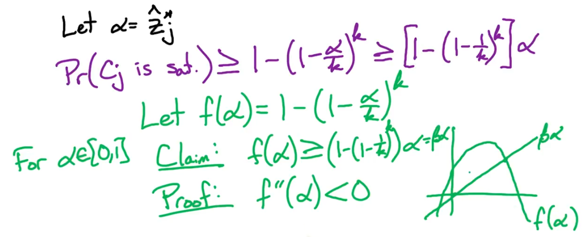
Finally we can put all the pieces together
- Pr(Cj is satisfied)
- $= 1 - \prod_i (1- \hat{y_i^*})$
- $\ge 1 - (1 - \hat{z_j^*}/k)^k$
- $\ge \left[1 - (1 - 1/k)^k \right] \hat{z_j^*}$
- $\ge \left[1 - 1/e \right] \hat{z_j^*}$
The last line is just a geometric mean taylor expansion and reduction
- $e^{-x} = 1 - x + \frac{x^2}{2!} - \frac{x^3}{3!} \pm ... $
- e−x ≥ 1 − x
Summary
The process we used here is quite widespread and deserves some attention. In many situations of NP-hard problems it can be applied as follows
Given an NP-Hard problem
- reduce to ILP
- relax to LP and solve
- apply randomized rounding
Comparison: Simple v LP
At the start of this section we said there would be three possible methods.
first let's compare the two previous methods on each of the problems examined so far
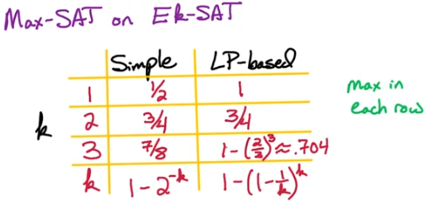
Suppose we took the best of each approach? The max in that row? Then the min approximation would be 3/4. Caused by the k=2 case. Our third and final algo is the most basic of all, which just takes the max.
Given a formula f:
- Run the simple algo to get m1
- Run the LP algo to get m2
- Take the best of the two
Result (¾-approximation). $E[\max\{m_1,m_2\}] \ge \frac{3}{4} m^*$. Taking the better of the simple and LP algorithms guarantees three-quarters of optimal.
NP4 — Knapsack (NP-hardness)
NP4: Knapsack
In this section we will be looking at the subset-sum problem as an intermediate step in proving that Knapsack in NP-Complete. Recall that the runtime of the knapsack problem is O(nB). We explained earlier why O(nB) is not polynomial in it's runtime (due to the B term).
Subset-Sum
Subset-Sum. Given positive integers a1, …, an and a target t, find a subset S ⊆ {1, …, n} with ∑i ∈ Sai = t (or report No).
The formal definition:
- Input: positive integers a1, ..., an & t
- Output: subset S of {1,...,n} s.t. ∑i ∈ Sai = t
if it exists
- else No
(NB: This is a great example of a dynamic programming problem: Find an algo to this that runs in O(nt) time.
The first question we always ask is ... is subset-sum in P? Of course not! We've shown this before via knapsack. Due to the B term it is not polynomial in the input size and thus cannot be solved in poly-time. It takes O(nB) and we would need to replace it with log(B). Let's now look to see if it's NP-Complete
Proof Subset-sum ∈
NP
Given inputs a1, ..., an,
t and S
- Check that ∑i ∈ Sai = t, this will take time O(n log t)
Since log t is polynomial in the input size we can conlude that Subset-sum can be verified in poly-time.
Proof Subset-sum is at least as hard as every problem in the
class NP
We choose 3SAT as our known problem and demonstrate the reduction: 3SAT → Subset − sum
Input to subset-sum consists of 2n+2m+1 numbers:
- 2n for the n variables, v1, v1′ for $x_1,\bar{x_1}$, v2, v2′ for $x_2,\bar{x_2}$, etc etc
- 2m for the m clauses, s1, s1′ for 1st clause, s2, s2′ for 2nd clause, etc etc
- +1 for the sum, t
Note that all these numbers can be quite large, up to ≤ n + m digits long. Furthermore we will be working base 10, so as to avoid any carryover of bits when adding subsets of numbers. t is also quite large, of the magnitude t ≈ 10n + m.
Let's begin by looking at the vi's. In particular each vi corresponds to an xi. So we include vi in S whenever xi is true. ie vi ∈ S ⇔ xi = True. Similarly vi′ corresponds to $\bar{x_i}$ and we include vi′ in S whenever xi is false. Of course an assignment to a 3SAT problem cannot include both cases as that would be a contradiction. So for the subset-sum problem to work only one scenario must exist. Either vi ∈ S or vi′ ∈ S but we cannot include both nor can we include neither. We will achieve this by setting the i'th digit of vi, vi′, t to 1, and for all other digits and numbers the i'th digit is set to 0. Recall as well that since we are using base 10 numbering each digit will behave independently of each other. Furthermore, the i'th digit of t will be 1 if only vi or vi′ is in S, but not both/neither.
Here's an example. Rows represent literals and the columns represent the variables and the clauses.
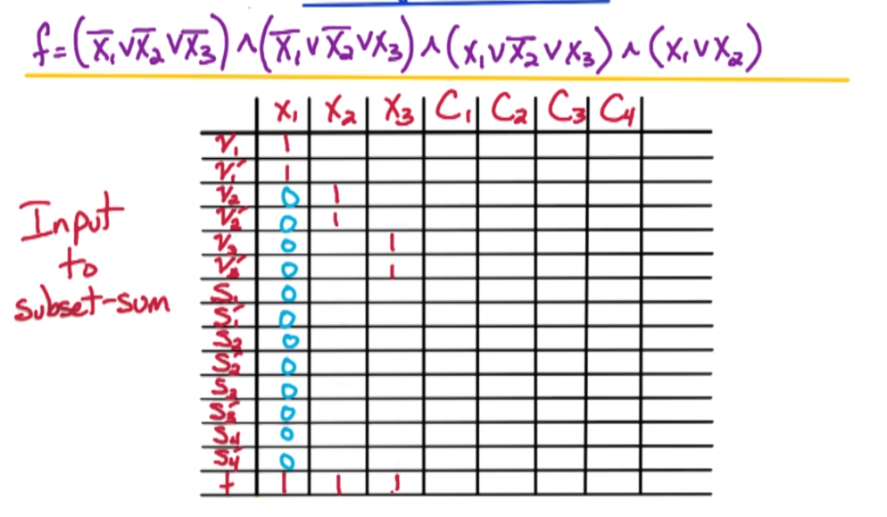
We begin by placing ones along the diagonal for the variables x1, x2, x3, and 0 in all other entries. Note that this is only for the variables so as to ensure each variable is in the solution/assignment. To ensure it is a satifying assignment we will use the columns for the clauses.
So digit n+j correspond to clause Cj.
- if xi ∈ Cj then place a 1 in digit n+j for vi
- if $\bar{x_i} \in C_j$ then place a
1 in digit n+j for vi′
What this does is encode the clause into the literals vi, vi′
For our example we get the following
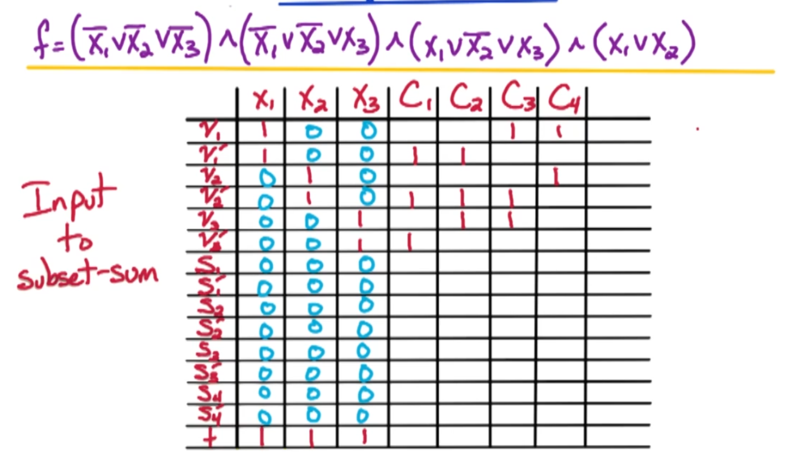
Now let's take a minute to think about the row t for each clause column. In order to satisfy the clause we require 1,2, or 3 of the literals to be satisfied. So we take the max, 3, as the sum for each column. Now of course all three literals may not be satisfied. If not then we will need the buffer numbers in order to make up the difference. The buffer numbers are represented by the s variables. Consequently if only 1 literal in a clause is satisfied then we can make use of the buffer numbers to ensure the summation which in turn will satisfy the clause.
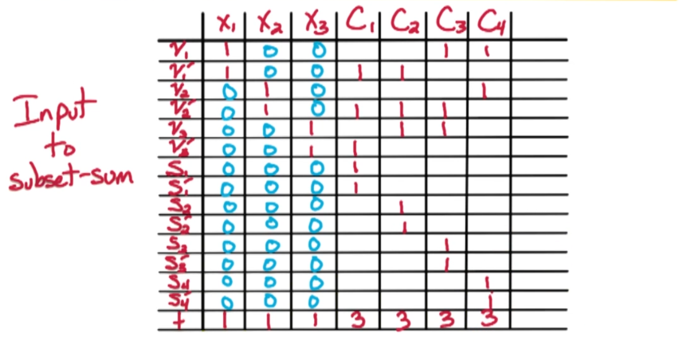
Each row can now represent a number. Just read it from the left to the right
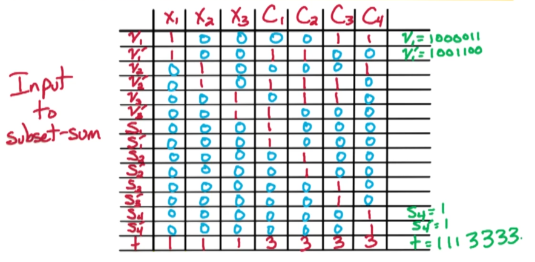
Let's summarize our clause reduction
- Digit n+j corresponds to clause Cj
- if xi ∈ Cj put a 1 in digit n+j for vi
- if $\bar{x_i} \in C_j$ put a 1 in digit n+j for vi′
- Put a 3 in digit n+j of t
- Use sj, sj′
as buffers
- put a 1 in digit n+j of sj & sj′
- put a 0 in digit n+j of all other numbers
Reduction correctness. Subset-Sum has a solution ⇔ the 3SAT formula f is satisfiable. We prove both directions below.
(⟹) Take solution S to
subset sum.
For digit i where 1 ≤ i ≤ n:
- to get 1 in digit i: include vi or vi′
but not both
- if vi ∈ S then set xi = T
- if vi′ ∈ S then set xi = F
- This yields the required assignment, next we demonstrate that it is satisfying
We just saw, if we take a solution to the subset sum instances that we specified, then using the first n digits that specifies a true-false assignment for the n variables x1 through xn.
Now, using the remaining m digits, we're going to show that that assignment that we just specify corresponds to a satisfying assignment. It satisfies the input formula f. The first n digits correspond to the variables, and the next m digits correspond to clauses. So let's look at digit n+j, where j varies between one and n, so digit n+j corresponds to clause Cj.
In our definition of the subsets sum instance, we put a three in digit n+j of t. So we need to achieve a sum of 3 in digit n+j. In order to get a sum of three in n+j, we have to include at least one of the numbers corresponding to the literal appearing in clause Cj. If we satisfy exactly one literal in Cj, then we use both sj and sj′ as buffer numbers and get 3. If we satisfy exactly two literals in this clause, then we either include sj and sj′ in our subset S, and that gives us a sum of three. If we satisfy exactly three literals in this clause, then we don't need to use either of these buffer numbers, S_j or S_j prime. Just using these three satisfied literals gives us a sum of three in this digit n plus j. If we satisfy zero of the literals in this clause, then there is no way to achieve a sum of three, thus we don't have a solution to the subset sum problem. We're assuming we have a solution, therefore we must have at least one satisfied literal in this clause. Thus, C_j is satisfied and thus, every clause is satisfied. And therefore, we have a satisfying assignment for f.
So we've shown that a solution to this subset sum instance corresponds to a satisfying assignment for our 3SAT formula. And we've actually shown how to transform this solution to the subset sum problem to find the satisfying assignment to the 3SAT's formula. Now let's prove the reverse implication. Let's prove that if we have a satisfying assignment for this 3SAT formula, it corresponds to the solution to the subset sum problem.
⟸ Let's take a satisfying assignment
for f
We'll construct a solution to the subset-sum instance in the following
manner.
In our satisfying assignment
- if xi = T: Add vi to S
- if xi = F: Add vi′ to S
- This means that the i'th digit of t is exactly 1, so the i'th digit of t is correct
Now let's look at the jth clause.
- for clause Cj, ≥ 1 literal in Cj is satisfied
- The sum corresponding to these literals give us a sum of 1, 2, or 3 in digit n+j.
- but recall that t has a 3 in each of the n+j digits
- so we can use S to the jth and/or S to the jth prime to get up to a sum of three
- This ensures that digit n+j is correct and thus the last m digits are correct and the first digits are correct.
Therefore, we have a solution to the subset-sum instance. So we've proved this equivalence and we've proved that our reduction is correct.
Knapsack
We leave it to the reader to prove that the knapsack problem is
NP-Complete.
Some hints
- Use/build off the subset sum problem ( This will be your known NP-Complete problem )
- Use the correct version of Knapsack ( the one that lies in NP )
NP5 — Halting Problem
NP5: Halting Problem
We've now seen many NP-complete problems. When a problem is NP-complete it signifies to us that it's computationally difficult. Formally what does that mean? That means it is the most difficult problem in the class NP. So, if we can solve this NP-complete problem in polynomial time, then we can solve all problems in the class NP in polynomial time. But there is literally thousands of problems in the class NP from all scientific fields it's unlikely that we're going to derive a polynomial time algorithm for our NP-complete problem.
To be precise if P≠NP, then that implies that there's no algorithm which can run in polynomial time on every input for this NP-complete problem. Notice the important distinction is on "every input". We may have an algorithm which takes polynomial time on some inputs or even on most inputs or almost every input, but there's no algorithm which is guaranteed to take polynomial time on every input.
Now we're going to look at the class of undecidable problems — problems that are computationally impossible.
NP-complete vs undecidable. For an NP-complete problem it's unlikely we have a poly-time algorithm. For an undecidable problem there is no algorithm at all — for any running time, poly or exponential — that solves it on every input.
Theorem (Turing, 1936). The Halting Problem is undecidable on a Turing machine — and a Turing machine captures the power of a conventional computer.
Now in 1936 the great Alan Turing proved that the halting problem is undecidable. And we're going to see the idea of that result now. Now this paper by Turing in 1936 introduced the notion which we now refer to as Turing Machine what Turing showed is that the halting problem is undecidable on a Turing Machine and a Turing Machine captures the power of a conventional computer. Now by conventional we're excluding things like quantum computer. Now later, many other problems were showed to be undecidable, but the halting problem is quite nice, so we're going to dive into that proof.
Description
Input to the Halting problem: Is a program P, and an input I
- This input can be almost anything computable. Pseudocode, python program or lisp. It's not limited to any language, although you can restrict it for some instance of the problem.
Output of the Halting problem: True/False indicative of the program termination on the input
- In simpler terms all the Halting problem is concerned with is whether or not the program will terminate on the input I or if it will enter an infinite loop. It is not concerned with correctness. Another way to think of this is that the Halting problem answers the question: Will this program ever end?
Example
Let's consider a simple program in C
while ( x % 2 == 1){
x += 1
}Suppose we use the input x=5, then we can easily see that x will always be odd, hence it will never terminate.
- so Halting(P,5) = False, since the program never ends using the input 5
Now, let's prove the theorem that the halting problem is undecidable. The way we go about proving this theorem is by contradiction.
PROOF Outline
Suppose that we had an algorithm that solves the halting problem on every input. Now we're going to derive a contradiction and therefore, our assumption that there exists an algorithm which solves the halting problem is not true. And therefore, there is no algorithm which solves the halting problem.
What we're going to do is for this particular algorithm which solves the halting problem, we're going to construct an input for which this algorithm is incorrect. And therefore, our assumption that this algorithm solves the halting problem on every input is incorrect. thus we have a contradiction and have proven the theorem.
Proof
So let's call this algorithm "Terminator". Terminator takes a pair of inputs, P and I. where P is a program, and I is an input for this program, and Terminator outputs true or false depending on whether this program P, on this particular input I, terminates eventually or not.
- If it eventually terminates, then an output is true.
- If it has an infinite loop, then an output is false.
Recall that we assumed that Terminator is correct, ie it solves the halting problem for every program P, and every input I.
Now we're going to construct a program Q and an input J, and we're going to show that when we run Terminator on this input pair Q, J, then its output/result is incorrect. Since Terminator is incorrect on this pair of inputs, therefore, Terminator does not solve the halting problem on every input. This gives us our contradiction, and therefore, that would complete the proof by contradiction.
How can we hope to construct this program Q? Well, one important piece is that we're assuming the existence of this program, Terminator. So we can use this algorithm, Terminator as a subroutine in our new algorithm Q. Now I don't know anything about the inner workings of Terminator so I have to use it as a black box, but I can use this as a subroutine. So we're going to use it as a subroutine to get our paradox or contradiction.
Let's consider the following constructed program
HARMFUL(J):
1: if TERMINATOR(J,J) /* J is both the program as well the input */
2: then GOTO(1)
3: else returnRemember that Terminator here is being used as a black box. All that matters is that it returns a boolean. Furthermore there is bit of a paradox happening here. In order to hit the else condition, terminator must return false. Which would imply that the terminator program encountered an infinite loop .... so how did it return?
(Incidentally: This program is named after an article by Dijkstra in 1968: "goto statement considered harmful")
Terminator(J,J): runs program J on input J
- returns TRUE if J(J) terminates
- returns FALSE if J(J) never terminates
This leads to two possible scenarios which we must examine
- if J(J) terminates: then Harmful(J) will never terminate
- if J(J) never terminates: then Harmful(J) will terminate
What if we passed the Harmful program to the Harmful program? ie HARMFUL(HARMFUL)
Let J = HARMFUL then
- Scenario A: Harmful(J) terminates ⟹
Harmful(Harmful) never terminates
- an obvious contradiction
- Scenario B: Harmful(J) never terminates ⟹
Harmful(Harmful) terminates
- another obvious contradiction
Conclusion. In both cases we reach a contradiction, so the assumption that Terminator() exists is impossible. The Halting Problem is undecidable. ∎
DPV chapter exercises
DPV chapter exercises (exact, from the textbook)
Exact end-of-chapter exercises, parsed from the DPV chapter PDFs.
DPV Ch 7 — Linear Programming — open exercises · chapter PDF
DPV Ch 8 — Np Complete Problems — open exercises · chapter PDF
DPV Ch 9 — Coping With Np Completeness — open exercises · chapter PDF
Agent hint
Approximation → relax ILP→LP, round, prove the ratio against OPTLP. "No algorithm" = undecidable (Halting), not just NP-hard. Knapsack DP is pseudo-polynomial; FPTAS for true poly. Exam 3 (W8–10) opens this week.
Week 11 - Advanced Topics
Due this week
| Item | Type | Note |
|---|---|---|
| Quiz 8 | cumulative | covers the whole course |
This week is a grab-bag of four shorter lectures. Pick by sub-topic below.
Watch the lectures (4 video modules)
Part 11A — Fast Fourier Transform (FFT)
Part 11B — Graph & Flow Applications
Part 11C — Number Theory & Crypto (RSA)
Part 11D — Bloom Filters
Learning objectives
- Explain how FFT multiplies polynomials in O(nlog n) via roots of unity.
- Reduce real problems (matching, segmentation, selection) to max-flow / min-cut.
- Do fast modular exponentiation and state Fermat's little theorem.
- Walk the RSA key/encrypt/decrypt cycle and its security assumption.
- Quantify a Bloom filter's false-positive rate and its space tradeoff.
Core concepts
FFT — fast polynomial multiplication (11A · DPV §2.6)
Problem. Multiply two degree-n polynomials. The schoolbook convolution of coefficients is O(n2).
Key idea — two representations. A degree-n polynomial is fixed by either its n + 1 coefficients or its values at n + 1 points. Multiplication is O(n) in the point-value representation (just multiply values pointwise). FFT is the fast change of basis between the two, evaluating/interpolating at the 2n-th complex roots of unity ωk = e2πik/2n (chosen because their special structure lets a divide-and-conquer split the work):
$$ \text{coeffs} \xrightarrow{\ \text{FFT}\ } \text{point values} \xrightarrow{\ \times\ } \text{point values} \xrightarrow{\ \text{FFT}^{-1}\ } \text{coeffs}, \qquad O(n\log n). $$
Why nlog n. FFT splits a size-n evaluation into two size-n/2 evaluations (even/odd coefficients) plus O(n) combine: T(n) = 2T(n/2) + O(n) = O(nlog n) by the Master theorem (W2).
Graph / flow applications (11B)
Many problems are max-flow / min-cut in disguise — the same black box from W6–W7:
- Bipartite matching → unit-capacity flow from a super-source to a super-sink; max-flow = max matching.
- Image segmentation → min-cut separating foreground/background pixels.
- Project selection → min-cut trading off project profits vs prerequisite costs.
The skill is modeling: define vertices, edges, capacities, s, t, then call max-flow.
Modular arithmetic & fast exponentiation (11C · DPV §1.1–1.2)
Fast modular exponentiation. Compute an mod N in O(log n) multiplications by repeated squaring — square-and-multiply down the bits of n:
$$ a^n = \begin{cases} (a^{n/2})^2 & n \text{ even},\\ a \cdot (a^{(n-1)/2})^2 & n \text{ odd}. \end{cases} $$
Each multiply is taken mod N to keep numbers small. This is what makes RSA practical.
Fermat's little theorem
For prime p and p ∤ a:
ap − 1 ≡ 1 (mod p).
It underlies primality testing and the correctness of RSA decryption.
RSA (11C · DPV §1.3–1.4)
Keys. Pick primes p, q; let N = pq and ϕ = (p − 1)(q − 1). Choose public exponent e coprime to ϕ; compute private d with
e d ≡ 1 (mod ϕ).
Public key (N, e); private key d.
Encrypt / decrypt. c = me mod N, recover m = cd mod N. Correctness follows from med ≡ m (mod N) (Fermat / CRT). Security rests on the hardness of factoring N = pq: knowing p, q gives ϕ and hence d, but factoring large N is believed hard.
Bloom filters (11D · DPV §1.5)
Probabilistic set membership in tiny space. Use k independent hash functions into an m-bit array; insert by setting all k bits, query by checking all k bits.
- No false negatives — if an item was inserted, its bits are set, so a membership query never wrongly says "absent".
- False positives possible — collisions can set all k bits by accident. With n items:
Pr [false positive] ≈ (1 − e−kn/m)k.
Tune k and m to trade a small error probability for large space savings.
Algorithms
| Tool | Idea | Runtime |
|---|---|---|
| FFT | evaluate at roots of unity → pointwise multiply → interpolate | O(nlog n) |
| Fast mod-exp | square-and-multiply over bits of n | O(log n) mults |
| Flow reduction | model as network, call max-flow | per max-flow (e.g. O(m2n)) |
| Bloom insert/query | set / test k hashed bits | O(k) |
Key theorems & results
- FFT correctness: evaluation at the 2n-th roots of unity is invertible (the inverse FFT is the same algorithm with conjugate roots and a 1/2n scale), so coefficients are recovered exactly.
- Fermat's little theorem: ap − 1 ≡ 1 (mod p) for prime p ∤ a — the engine of RSA correctness.
- Bloom one-sidedness: false-negative rate is exactly 0; only false positives occur.
Worked example (RSA, tiny numbers)
p = 3, q = 11 ⇒ N = 33, ϕ = (2)(10) = 20. Pick e = 3 (coprime to 20); solve 3d ≡ 1 (mod 20) ⇒ d = 7. Encrypt m = 4: c = 43 = 64 ≡ 31 (mod 33). Decrypt: 317 mod 33 = 4 — original message recovered.
Common pitfalls / exam traps
- Forgetting FFT needs ≥ 2n points to represent the product (degree doubles).
- Reducing a problem to flow but mis-setting capacities (matching needs unit capacities).
- Computing an mod N by naive repeated multiplication (O(n)) instead of O(log n) squaring.
- Saying Bloom filters can give false negatives — they cannot; only false positives.
How to answer (HW / exam)
These run lighter than the exam units. FFT → cite O(nlog n) and the eval/multiply/interpolate pipeline. Flow apps → state the network (vertices, edges, capacities, s, t) and reduce to max-flow. RSA → show the modular-arithmetic steps. Bloom → state the false-positive rate and the no-false-negative guarantee.
Go deeper — readings
Comprehensive Notes
Full lecture notes for this week's modules, figures inline. Source: course topic notes.
DC4 — Fast Fourier Transform (Intro)
DC4: FFT-Fast Fourier Transform
What we've seen so far is how to use divide and conquer in a clever way to multiply large integers. So for N bit integers, we were able to multiply and compute their product in time better than O(n2). What we're going to do now is multiply polynomials. To do this, we're going to use the beautiful divide and conquer algorithm known as FFT.
- FFT stands for Fast Fourier Transform.
So here's the set up. We have a pair of polynomials
- A(x) = a0 + a1x + a2x2 + ⋯ + an − 1xn − 1
- B(x) = b0 + b1x + b2x2 + ⋯ + bn − 1xn − 1
The goal is to compute the product polynomial
- C(x) = A(x)B(x)
- which we expect to have the form
- c0 + c1x + c2x2 + ⋯ + c2n − 1x2n − 2
- Since the degree of C of X is at most 2n-2
- where $c_k = a_0 b_k + a_1 b_{k-1} + \cdots + a_k b_0 $
- this is an easily provable result left to the reader
We will use an alternative notation to help simplify the problem, This doesn't, however, change the problem.
- Use vector notation for the polynomial coefficients
- A = (a0, a1, a2,,⋯, an − 1)
- B = (b0, b1, b2,,⋯, bn − 1)
- C = A ⋅ B = (c0, c1, c2,,⋯, c2n − 2)
- the star symbol denotes the convolution
P1: Review-Polynomials & Convolutions¶
Let's do a quick review of polynomial multiplication
- Let A = 1 + 2x + 3x2 and B = 2 − x + 4x2
- Then c = a*b = (2,3,8,5,12)
- since there are k terms for ck this will take O(k) time for ck,
- but it takes a total of O(n2) time for the original A & B
- We want better than O(n2), in fact our goal is O(n log n)
Note. Convolutions are a rather unique type of function with many applications in signal and image processing. I highly recommend googling a bit if you've never encountered this.
Now let's get back to our polynomials.
There are 2 natural ways to express a polynomial
- Coefficients: which we used above A = (a0, a1, a2,,⋯, an − 1)
- Values: at each term, ie A(x1), A(x2), ⋯, A(xn)
Lemma. A polynomial of degree n − 1 is uniquely determined by its values at any n distinct points.
- just think of a simple line. It has degree 1 and it determined by it's values at 2 distinct points
Point 2 above is better for multiplication purposes. What FFT does is switch between the 2 representations.
Key idea. Multiplying polynomials is easy in the values representation — just multiply the values pointwise. FFT's job is to move cheaply between the coefficient and value representations. It may not be obvious why the value approach makes multiplication easier so let's look at an example.
So suppose that we know the polynomial A(x) and B(x) evaluated at the same 2n points, (x1 -> x2n)
- ie given
- A(x1), A(x2), ⋯, A(x2n)
- B(x1), B(x2), ⋯, B(x2n)
- At the same 2n points
- Then we can compute the product polynomial C(x) at these 2n points
by just computing the product of two numbers for each i.
- ie C(xi) = A(xi)B(xi)
- These are just numbers, making Ci just a number
- which take just O(1) to compute for each i
- t/f it takes O(n) total time to compute this product polynomial.
Now why do we take A and B at two n points? Well, C is a polynomial of degree at most 2n-2. So we needed at least 2n minus one points. So two n points suffices.
The summary is that, if we have the value of these polynomials, A(x) and B(x), at n, or two n points, then we compute this product polynomial at the same points in order n total time. So what we're going to do is we're going to use FFT to convert from the coefficients to the values, this is going to take O(n log n) to convert, and then it'll take O(n) total time to compute the product polynomial at these two n points, and then we do FFT to convert back from the values of C(x), at these two n points, back to the coefficients for C(x), and that again will take O(n log n) time.
So let's dive in now to see how we do FFT, which converts from the coefficients to the values.
Again let's re-iterate our terms here
- Given a polonomial of degree n
- A(x) = a0 + a1x + a2x2 + ⋯ + an − 1xn − 1
- we represent this as A = (a0, a1, a2, ⋯, an − 1)
- Goal is to compute: A(x1), A(x2), ⋯, A(x2n)
- for any 2n points that we get to choose
So let's suppose x1, ..., xn
are the opposties of xn + 1, ..., x2n
Then $x_{n+1}=-x_1, \\
x_{n+2}=-x_2,...,x_{2n}=-x_n$
(let call this the ± property)
Observe that for the even terms in A the opposite will have the same sign as they are powers of 2k. But for the odd terms their sign will be different.
After splitting we have
- Aeven = (a0, a2, ⋯, an − 2)
- and Aeven = (a1, a3, ⋯, an − 1)
Which we can put back into a polynomial (using y to help alleviate any confusion)
- $A_{even}(y) = a_0+a_2 y + a_4 y^2 +\cdots+ a_{n-2} x^{(n-2)/2} $
- $A_{odd}(y) = a_1+a_3 y + a_5 y^2\cdots+ a_{n-1} x^{(n-2)/2} $
These are new polynomials! these are not the same as the original A(x) polynomial. However, A(x) can be formed from these. In fact
- $A(x) = A_{even}(x^2) + x A_{odd}(x^2) $
- we multiply the odd terms by x, otherwise we would be off-by-one
- verify this for a polynomial of degree 3
At this point you should be picking up on our divide and conquer approach. We've divided the polynomial and we have yet to conquer.
Now that we know $A(x) = A_{even}(x^2) + x A_{odd}(x^2) $ it's pretty simple to translate A(x) into A(x1), A(x2), ⋯, A(x2n) all we need to do is
- compute at some point i, and use our ± property to compute at n+i
- So $A(x_i) = A_{even}(x_i^2) + x_i A_{odd}(x_i^2) $
- and $A(x_{n+i}) = A(-x_i) = A_{even}(x_i^2) - x_i A_{odd}(x_i^2) $
- that was easy eh?
So now
- given Aeven(y1), ..., Aeven(yn) and Aodd(y1), ..., Aodd(yn)
- for y1 = x12, ..., yn = xn2
- we compute A(x1), A(x2), ⋯, A(x2n)
- in just O(n) time
FFT-Summary
To get A(x) of deg
≤ n − 1 at 2n points x1, ...x2n
of our choosing.
- 1: We define Aeven and Aodd of deg ≤ (n/2) − 1
- 2: We recursively evaluate A(x) at n points using
$A(x) = A_{even}(x^2) + x A_{odd}(x^2) $
- Recall y1 = x12 = xn + 12, ..., yn = xn2 = x2n2
- 3: In O(n) time we get A(x) at points x1, ...x2n
This leads to a runtime of 2T(n) + O(n) = O(nlogn), The astute student will also notice that so far this is very similar to the merge sort algorithm.
All that is left is to prove the ± property holds not only for the initial polynomial but also for each level of recursion. Which may come as a bit of surprise. Consider what the ± prop means
- Initially we choose xn + 1 = −x1, ...
- next we choose y1 = x12, ...
- Which implies that y1 = −y(n/2) + 1, ...
- but then x12 = −x(n/2) + 1
which would mean that the square of x is a negative number ...
- if you're beginning to imagine the root of -1 you're on the right track
- we will need to venture into the world of complex numbers
Let's review complex numbers ...
P2: Review-Complex Numbers
Recall
- z = a + bi is how we define a complex number
- a is said to be the real part
- and bi is said to be the imaginary component
- i here is defined as $\sqrt{-1}$ which of course does not exist in the real plane of number line
You may also recall that when working with complex numbers it is often more convenient to work in the polar co-ordinate system where a point such as (a,b) in the compelx plane is translate to (r,θ) in the polar plane. r describes the points radius or distance from (0,0) and θ describes the angle from the real axis.
The following illustration may be a better explanation
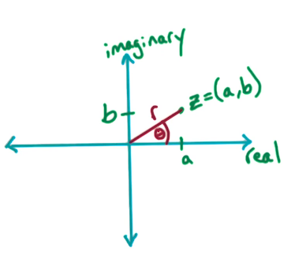
We will state without prrof the following properties
- (a, b) = (rcosθ, rsinθ) This is how we can convert between the two planes
- using Euler's formula
- eiθ = cosθ + isinθ
- we multiply each side by r to get z
- z = r(eiθ) = r(cosθ + isinθ)
Muliplying numbers in Polar
Consider two complex numbers z1, z2
- Multiplication:
- z1 × z2
- = (r1, θ1) × (r2, θ2)
- = (r1r2, θ1 + θ2)
- so far so good right? we've not done anything very unusual
- but now consider −z?
- this is just (r, θ + π)
- -z is just the reflection of z, so we add pi to get this reflection. the radius doesn't change
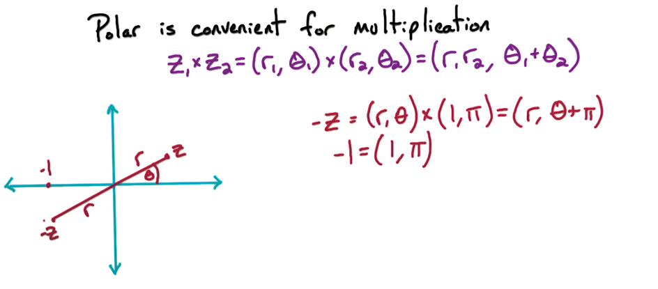
Roots of Unity
For our purpose we will need numbers called the n'th complex roots of unity (unity here means 1)
- n'th complex root examples
- for n=2: the roots are 1, -1
- for n=4: the roots are 1,-1,i,-i
- formally
- the n'th complex roots of unity are the complex numbers z where zn = 1
This can be bit difficult to conceptualize. What it boils down to is that the roots of n'th complex roots of unity are the n'th points on a unit circle in the complex space. Mathematically this means that for z = (r, θ) we have zn = (rn, nθ). rn is always 1 as this is a unit circle. nθ is very simple. Just solve for theta θ = 2πj/n where j is an integer s.t. 0 ≤ j ≤ n. This basically just amounts to dividing the unit circle into n points, evenly spaced of course.
Here is a visualization
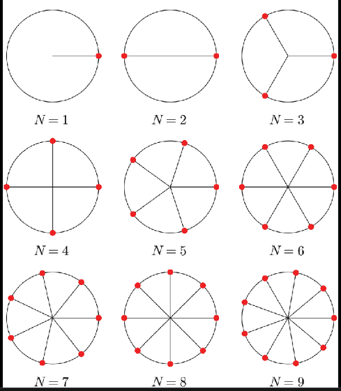
Let's kick it up a notch
- let ωn = (1, 2π/n) which corresponds to j=1
- then ωn2 = (1, 2 ⋅ 2π/n) which corresponds to j=2
- etc etc
- But recall Euler's formula!
- application yields ωn = (1, 2π/n) = e2πi/n
- thus we generalize ωnj = e2πij/n
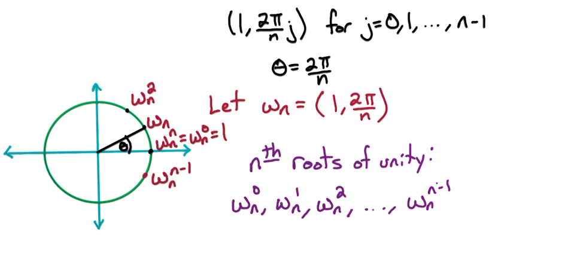
Here's a worked example showing the relationship between ωn8 and ωn16 which is just$ (\omega_n^8)^2$
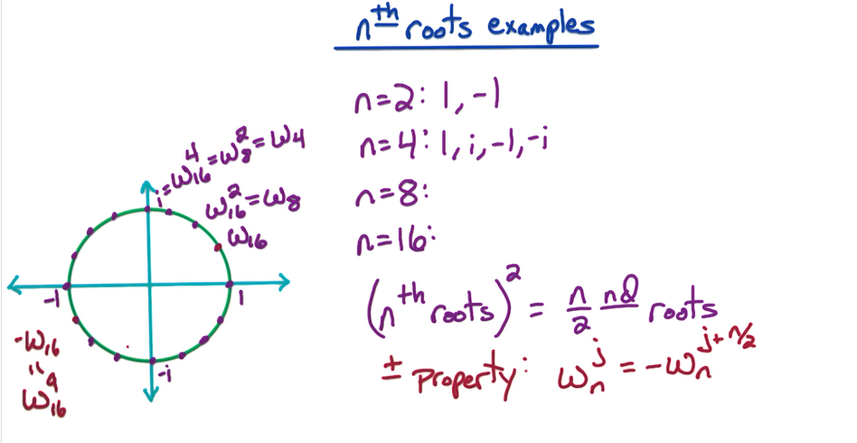
All of this was just to demonstrate two key properties of the n'th roots of unity which we will need for our FFT algo.
Property 1
For an even n: the n'th roots satisfy the ± property.
- The 1st (n/2) n'th roots are the opposite of the last n/2 roots
- ie
- ωn0 = −ωnn/2
- ωn1 = −ωn(n/2) + 1
- ...
- ωn(n/2) − 1 = −ωnn − 1
Property 2
For n a power of 2, n = 2k, the
( n’th roots)2 = (n/2)’nd roots
- $\large (\omega_n^j)^2 = (1,\frac{2\pi}{n}j)^2 = (1,\frac{2\pi}{n/2}j) = \omega_{n/2}^2$
- similarly
- (ωn(n/2) + j)2 = (−ωnj)2 = ωn/2j
Now we are ready to move forward in our FFT algorithm. It should not come as a surprise when we choose the n't roots of unity as our 2n points to evaluate A(x)
Examples-FFT
Q1: What is the sum of the n'th roots of
Unity?
Recall that the n'th roots are defined as ωnj = e2πij/n
- So we take the sum
- $\large \sum_0^{n-1} e^{j(2 \pi i / n)}$ or if you prefer $\large \sum_0^{n-1} \omega_n^j$
- which we can expand
- $\large 1 + \omega_n^1 + \omega_n^2 + \cdots + \omega_n^{n-1}$
- $\large \frac{\omega^n - 1}{\omega - 1}$
- which is just 0 ...
- in case you forgot why ωn is the n'th root of unity meaning ωn − 1 = 0
- in case you're still confused
- the complex roots of the equation zn − 1 = 0, are the roots of unity
- in case you're still confused ... I'm all out of ideas try google?
DC5 — The FFT Algorithm
DC5: FFT-Algorithm
Now that we have all the necassary pieces we can begin to put the puzzle together. So let's recap the problem, then draw out our algorithm
Goal To Evaluate the polynomial A(x) of deg ≤ n − 1 at n points, where n is a power of k
Recall that in order to perform the polynomial multiplication we will need A(x) at 2n points. In order to obtain at two N points instead of N points, we can just pad the polynomial, the coefficients with zeros, so that we view the polynomial as a degree 2n-1 polynomial.
Now what are these n points that we're going to choose? We're going to choose the n'th roots of unity as our end points, which we're going to evaluate the polynomial of A(x) at. Now since n is a power of 2, ie N equals 2k for some positive integer k. Then we know that these n points, the n'th roots of unity, will satisfy the ± property. So the first N over two are opposite of the last N over two. Also recall that the second poperty demonstrated that the square of the n'th roots are the (n/2)'nd roots.
So we'll take the polynomial A(x) and split into Aeven and Aodd. Each with at most degree (n/2) − 1. Then we'll recursively evaluate Aeven and Aodd at the (n'th roots)^2. Which because of property 2 is just the (n/2)nd roots. Evaluation requires 2T(n/2) time
Finally, once we have Aeven and Aodd at the (n/2)nd roots then it will require O(n) time to get A(x) at the n'th roots. Using our handy little formula: A(x) = Aeven(x2) + xAodd
FFT Pseudocode - Version 1
FFT(a,ω):
INPUT: Coefficients a = (a0, a1, ..., an − 1) for polynomial A(x)
- where n is a power of 2
- and ω is a n'th root of unity
OUTPUT: A(ω0), A(ω), A(ω2), ⋯, A(ωn − 1)
If n=1, return A(1)
Let
- a_even = (a0, a2, ..., an − 2)
- a_odd = (a1, a3, ..., an − 1)
(s_0,s2,...,s{n/2-1}) = FFT(a_even,ω2) returns A_even(ω0),A_even(ω2),...,A_even(ωn − 2)
(t_0,t1,...,t{n/2-1}) = FFT(a_odd,ω2) returns A_odd(ω1),A_odd(ω3),...,A_odd(ωn − 2)
for j = 0 -> (n/2)-1:
A(ωj) =
A_even(ω2j) + ωj A_odd(ω2j)
A(ω(n/2) + j
= A(-ωj) =
A_even(ω2j) - ωj A_odd(ω2j) #
notice the subtraction in the second equation
Here's a more compact version
FFT Pseudocode - Version 2
FFT(a,w):
If n=1, return A(1) # Our base case
a_even = $(a_0,a_2,...,a_{n-2})$ # Now the split O(n)
a_odd = $(a_1,a_3,...,a_{n-1})$
s[:] = FFT(a_even,w^2) # T(n/2)
t[:] = FFT(a_odd,w^2) # T(n/2)
for j = 0 -> (n/2)-1: # O(n)
r[j] = s[j] + w^j t[j]
r[(n/2)+j] = s[j] - w^j t[j]
return r[:]Total Run Time: 2*T(n/2)+O(n) = solves to O(n log n)
Example
Suppose a=(1,0,0,0) are the coefficients of a polynomial.
What is the FFT?
You don't need to go through the entire fft algorithm. Just compute
A(ωni)
- we take n=4 since we have 4 co-efficients, then
- A(ω40) = A(1) = 1(1)0 + 0(1)1 + 0(1)2 + 0(1)3 = 1
- A(ω41) = A(i) = 1(i)0 + 0(i)1 + 0(i)2 + 0(i)3 = 1
- A(ω42) = A(−1) = 1(−1)0 + 0(−1)1 + 0(−1)2 + 0(−1)3 = 1
- A(ω43) = A(−i) = 1(−i)0 + 0(−i)1 + 0(−i)2 + 0(−i)3 = 1
You can even run the inverse FFT to get
- 1/4 * (1,1,1,1)
FFT Polynomial Multiplication
Now you may recall way back when we began this section our problem was to multiply two n-degree polyomials a=(a_0,...,a_n-1) and b=(b_0,...,b_n-1) corresponding to the coefficients for a pair of polynomials A(x) and B(x).
The output of this multiplication is c=(c_0,...,c_2n-2) the coefficients for the polynomial C(x)=A(x)B(x). Equivalently C is a convolution of A and B.
In order to multiply these polynomials A of X and B of X, we want to convert from the coefficients A and B to the values of these polynomials A of X and B of X.
How many points do we need these polynomials at? Well since C is of degree 2n-2, we want C(x) at at least two and 2n-1 points. In order to maintain that n is a power of 2, we'll evaluate A of X and B of X at two endpoints. In order to do that, we'll run FFT. We will consider A(x) and B(x) as polynomials of degree 2n minus one, by padding them with zeros.
So we run FFT with this vector a and the 2n'th root of unity. And this is going to give us a polynomial A(x) at the two nth root unity.
- (r0, r1, ..., r2n − 1) = FFT(a, ω2n)
Similarly for B(x)
- (s0, s1, ..., s2n − 1) = FFT(b, ω2n)
Now we can compute C(x) at the two nth roots of unity
- for j = 0 -> 2n-1:
- $t_j = r_j \times s_j $
Now that we have C(x) at the 2n'th roots of unity we need to work back to get the co-efficients. ie we need to go from the values back to the co-efficients. Whereas in previous cases we went from the co-efficients to the values, which is the FFT call. So how do we do this? well turns out there is an inverse to the FFT that does the job for us. The inverse or reverse FFT is very similar to the original FFT. But it requires a bit more math to understand why
Inverse FFT
So before we explore inverse FFT, it will be useful to explore the linear algebraic view of FFT. In this way, we can look at FFT as multiplication of matrices and vectors. So consider a point x_j, The polynomial A of X evaluated at the point x_j equals a_0 plus a_1 x_j plus a_2 x_j squared and so on. The last term is a_n-1 x_j to the n-1. Notice that this quantity can be rewritten as the inner product of two vectors.
For point xj:
$A(x_j) = a_0 + a_1 x_j + a_2 x_j^2 + \cdots + a_{n-1} x_j^{n-1} $ = (1, xj, xj2, ..., xjn − 1) × (a0, a1, a2, ..., an − 1)
So for n points it gets rather tedious to write this all out so we
switch to matrix notation:
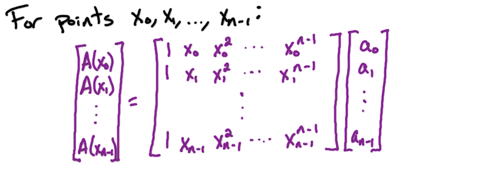
The above is just for an arbitrary x. Watch what happens when we apply our evaluation using the n roots of unity, ie take xj = ωnj
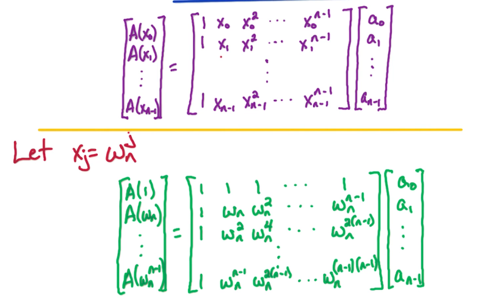
Notice the symmetry. Also notice that the central matrix is just powers of ωn.
Let's simplify this a bit more. Call the middle matrix Mn(ωn),
the final vector a and the vector at the left is A
Then we can write this as
A = Mn(ωn)a
Which is exactly what FFT(a, ωn) returns/computes. So what do you the inverse fft is?
$InvFFT(a,\omega_n) \to a = M_n^{-1}(\omega_n) A $
So what is this M inverse? well as you may have guessed the answer lies in yet another theorem!
Lemma:
$M_n^{-1}(\omega_n) = \frac{1}{n} M_n(\omega_n^{-1}) = \frac{1}{n} M_n(\omega_n^{n-1})$recall that ωn−1 is the number that satifies the result ωn × ωn−1 = 1
which you may recall is also ωn × ωnn − 1 = ωnn = ωn0 = 1
So Now let's take our original result
- $a = M_n^{-1}(\omega_n) A $
- $n a = M_n^{-1}(\omega_n^{n-1}) A $ (apply the lemma and multiply each side by n)
- Now you should be able to see that ... this is just an FFT computation
- the inverse has disappeared
- thus $a = \frac{1}{n} FFT(A,\omega_n^{n-1})$
So what is all this gibberish saying? Inverse FFT is FFT computed in the reverse order. It's like an inverted clock
Consider: For an even b, what is 1 + ωn + ωn2 + ⋯ + ωnn − 1
There's two ways to think about it.
The first is geometrically, recall that each successive exponent simly advances the point along a unit circle. Since we have n points we have effectively traversed the circle and ended where we started 0. which is ωn0 = 1
The other approach is to apply the ± property. Recall that for each j ωnj = −ωn(n/2) + j
We can actually generalize this even further
Claim: for any n'th root of unity ω where ω ≠ 1, 0 = 1 + ωn + ωn2 + ⋯ + ωnn − 1
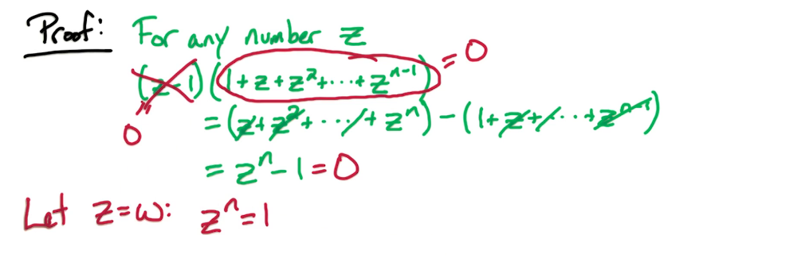
Now let's go through a proof of the lemma.
Recall that we need to show $M_n(\omega_n)^{-1} = \frac{1}{n}
M_n(\omega_n^{-1})$
If true then it would mean that $\frac{1}{n} M_n(\omega_n^{-1}) M_n(\omega_n) = I$ where I is the identity matrix (1's along the diagonal and 0's otherwise)
So we will demonstrate that Mn(ωn−1)Mn(ωn) results in a matrix with n's along the diagonal and is 0 in all other entries.
for entries (k,k), we will work out the dot product of the k'th row and k'th column
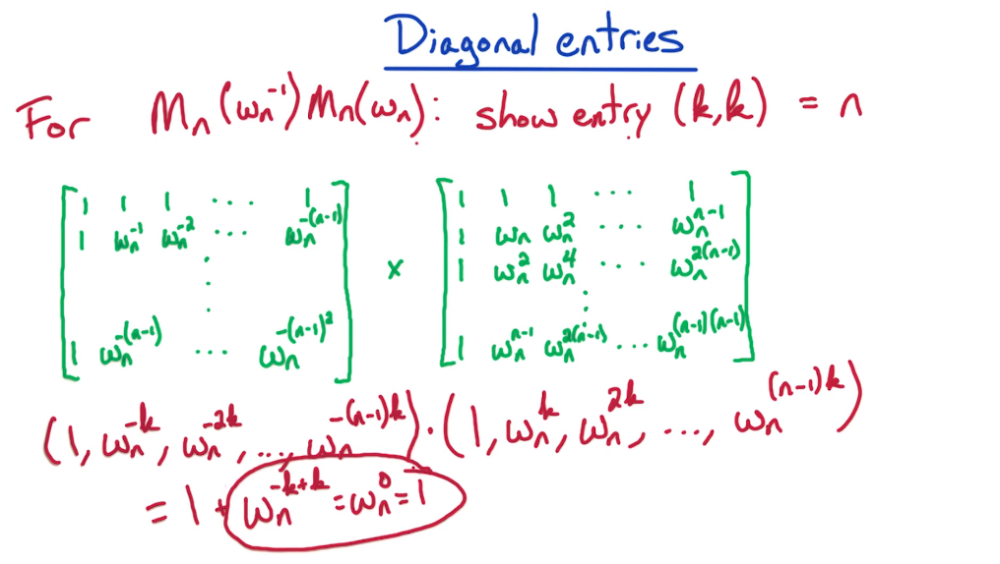
for entries (k,j), where k ≠ j, again we will work out the dot product of the k'th row and j'th column
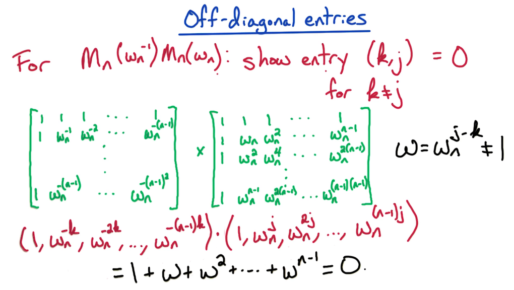
Finally we can return to our polynomial multiplication algorithm
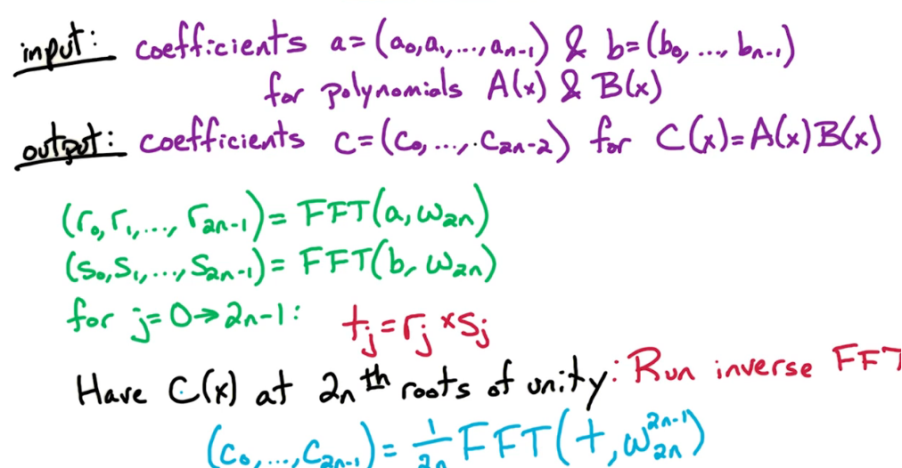
Finally the pain is over!!
Ex 1
Problem 1 (Integer multiplication using FFT)
(a) Given an n−bit integer number a = a[n−1]a[n−2] . . . a0 define a polynomial A(x) satisfying A(2) = a.
(b) Given two n−bit integers a and b, give an algorithm to multiply them in O(n log(n)) time. Use
the FFT algorithm from class as a black-box (i.e. don’t rewrite the code, just say run FFT on
...). Explain your algorithm in words and analyze its running time. (Think/investigate why
this is not enough to claim a fast multiplication algorithm).Part a
Recall that a polynomial is simply an equation of the form $\large \sum_0^{n-1} a_i x^i$. So this is
done by the definition
Part b
Obviously we will want to make use of the FFT algo
Step 1
Formulate the n-bit integer inputs as per the definition in part a
Step 2
- Choose an N for the roots of unity,
- N must be a power of 2
- and N ≥ 2n where n is the number of bits
- define A = (a,padding to N)
- ie a0, a1, ⋯, an − 1, 0, 0, ...
- do the same for B
Step 3
Run the FFT using ωn
- A' = FFT(A,ωn)
- B' = FFT(B,ωn)
Step 4
Multiply A' and B' to get C'
- C' = A' x B'
- C[i] = A[i] x B[i] for 1 ≤ i ≤ N
Step 5
Run FFT on inverse roots of unity and apply scaling
- C = FFT(C',ωn−1) * 1/N
Step 6
- Compute C(2) to get back binary integer
Correctness
By converting the binary numbers we can make use of the FFT algorithm to
multiply them.
Runtime
- Takes T(n)
- Takes T(2n)
- Takes T(2n log n) recall that FFT is O(n log n)
- T(n)
- O(n log n)
- T(n)
Dominant term is O(n log n)
Ex 2
Consider A = x + 1 and B = x2 + 1, Find C = A × B
FFT Summary
FFT is a transformation algorithm
- it converts from coefficients to values, when ω2n is used
- it converts from values to coefficients, when ω2n−1 is used (but don't forget to scale! by 1/2n )
FFT requires input vector of length n = 2k
- may use padding to ensure this is always true
FFT results are with respect to the roots of unity
- it's return values must always undergo some sort of transformation back into the real number system
- this is generally done using the inverse fft
Inverse FFT is just FFT evaluated at the inverse roots of unity ω2n−1
- ω2n−1 go clockwise
- ω2n−1 are the mirrored/flipped values of ω2n
RA1 — Modular Arithmetic
RA1: Modular Arithmetic
The mathematics of the RSA cryptosystem are very beautiful and they're fairly simple once you have the right mathematical background. So we're going to start with a short primer on the mathematical topics that we need.
The relevant topic that we need is Modular Arithmetic. Then one key concept that we need are multiplicative inverses, and what they mean in modular arithmetic. And then we're gonna look at Euclid's GCD algorithm, greatest common divisor, which is gonna be used in the RSA cryptosystem. Next we're going to learn about Fermat's Little Theorem and it's the key tool in the design of the RSA algorithm. So at this point we'll be able to detail the RSA algorithm. Finally, we'll look at Primality testing, given a number, can we test whether the number is prime or not, or composite?
Once we see how to do that using Fermat's Little Theorem, then we're going to be able to generate random primes. Generating random primes is a key component in the RSA algorithm. So once we complete that, we'll have completed our discussion of the RSA algorithm. Now let's go ahead and dive into the algorithms related to the RSA.
Lets look at the context of the RSA algorithm. In cryptography, we're going to work with N-bit numbers X, Y and N. For example, the number of bits in these numbers is going to be huge. Think of the number of bits as 1024 or 2048. It's a huge number of bits. So normally, we thought of our arithmetic operations as built into hardware, but that usually restricts the attention to 64 bits or so. But here we're talking about 1000 or 2000 bits. So we have to go back and review how long does it take for basic arithmetic operations.
Now let's take a look at modular arithmetic. This is the basic mathematics that underlies the RSA algorithm and we're going to see a lot of beautiful mathematics along the way.
Let's look at a simple example,
- for an integer x, x mod 2 = least significant bit of x
- What does the least significant bit of X tell you?
- It tells you whether X is odd or even.
- x mod 2 = 1 if X is odd
- x mod 2 = 0 if X is even
Another way of looking at this least significant bit of X, we can take X divided by two. If it's even then the remainder is going to be zero because it's a multiple of two, and if it's odd, then the remainder when X divided by two is going to be one.
Now let's look at X mod N where N >= 1.
- Recall x mod 2 is the remainder when x is divided by two
- So X mod N is going to be the remainder when we divide X by N
Finally let's look at some important notation for modular arithmetic.
Suppose we have two numbers X and Y, and we look at these two numbers modular N, and suppose that they're same mod N, how do we denote that? Well, they're not equal. The two numbers are not equal, but they're congruent in this, or they're equivalent in this world modular N.
So how do we denote that equivalence or congruence? So the standard indication is three lines instead of two lines.
- x ≡ y mod N
- This notation means that X and Y are congruent modular N,
- which means that X/N and Y/N have the same remainder
Example
mod 3 has 3 equivalence classes:
0, 3, 6, 9, etc etc but we can also use negatives -3, -6, -9
1, 4, 7,10, etc etc but also -2,-5,-8
2, 5, 8,11, etc etc but also -1,-4,-7Handy Fact
if x ≡ y mod N &
a ≡ b mod N
then x + a ≡ y + b mod N
Similarly (xa) ≡ (yb) mod N
Example: 321 × 17 ≡ 1 × 17 ≡ 17 mod 320
Modular Exponentiation
Given n-bit numbers x,y,N, our goal is to compute xy mod N
( Assume that these number are very large, HUGE. )
Naive/Brute force approach
Compute
- x mod N = a1
- x2 ≡ a1x mod N = a2
- x3 ≡ a2x mod N = a3
- ⋯
- xy ≡ ay − 1x mod N = an
Each of these lines is roughly O(n^2), O(n) to multiply a & x and O(n) to take the mod N. The number of lines or rounds is roughly y ≤ 2n. For a total run time of roughly O(n22n)
Consider 75mod23?
- 72 ≡ 3 mod 23
- 73 ≡ 3(7) = 21 mod 23
- 74 ≡ 21(7) = 9 mod 23
- 75 ≡ 9(7) = 17 mod 23
Although this is a bit better it's less than ideal. Here's a third approach that is a bit fast
Repeated Squaring Method
Compute
- x mod N = a1
- x2 ≡ a12 mod N = a2
- x4 ≡ a22 mod N = a4
- ⋯
- xy ≡ ay − 1x mod N = an
Consider our example from before 725mod23
- 72 ≡ 3 mod 23
- 74 ≡ 32 = 9 mod 23
- 78 ≡ 92 = 81 ≡ 12 mod 23
- 716 ≡ 122 ≡ 144 ≡ 6 mod 23
- 25 in binary is 11001
Thus
- 725 ≡ 716 × 78 × 7 ≡ 6 × 12 × 7 ≡ 72 × 7 ≡ 3 × 7 ≡ 21 mod 23
- Final answer 21
ModExp Algorithm
First we state a key observation which should be trivial
- for even y, xy = (xy/2)2
- for odd y, xy = x(x⌊y/2⌋)2 ( the leading x is to make up for the term that is dropped by the floor )
ModExp(x,y,N):
Input : n-bit integers x,y,N > 0
Out : x^y mod N
if y=0, return 1
z=ModExp(x, floor(y/2),N)
if y even
then return (z^2 mod N)
else return (xz^2 mod N)Multiplicative Inverses
What's the inverse of (1/z) mod N ?
Definition
x is the multiplicative inverse of z mod N
- if xz ≡ 1modN
of course if follows that
- x ≡ z−1modN
- z ≡ x−1modN
Consider, for N=14
- x=1: then 1−1 ≡ 1modN
- x=2: then 2−1 ≡ ?modN doesn't exist
- x=3: then 3−1 ≡ 5modN
- x=4: then 4−1 ≡ ?modN doesn't exist
- x=5: same as above for 3
- x=6,7,8 don't exist
- x=9: then 11−1 ≡ 11modN
- x=13: then 13−1 ≡ 13modN
You may or may not have picked up on a pattern here. It turns out when there is a common divisor then there will not be an inverse. Otherwise the inverse exists.
Theorem. x−1 mod N exists iff gcd (x, N) = 1; if they have a gcd > 1 then they must have an inverse.
- This, gcd(x,N) = 1, is often termed relatively prime
Suppose x−1 mod N exists, then how many can there be?
For ex consider x=3,N=11 then 3−1 ≡ 4 mod N. How many inverses can there be?
We will prove there can be only one, using contradition. Suppose there are two inverses, ie z ≡ x−1 mod N and y ≡ x−1 mod N and that z ≢ y mod N, which also means 1 ≤ y ≠ z ≤ N. Since z is an inverse of x mod N then we have that xz ≡ 1 mod N similarly xy ≡ 1 mod N. But then we can equate the two to get xz ≡ xy ≡ 1 mod N. so xz ≡ xy. Now multiplying each side by x−1 yields z ≡ y. Which contradicts our assumption at the start z ≢ y mod N. I'll spare you the QED, but that's all there is to it.
NonExistence of Multiplicative Inverses
Let's now consider the case when the inverse does not exist. Recall our
earlier theorem that x−1modN
exists iff gcd(x,N) = 1, meaning they are relatively prime. Of course
this means that when gcd(x,N) > 1 then the inverse must not
exist.
To build some intuition of the upcoming proof, let's consider a simple case where x & N are even numbers. furthermore, let z ≡ x−1 mod N and thus xz ≡ 1modN. This would imply that xz = N+1, or 2N+1 or 3N+1 or ... etc etc ... qN+1. But xz must be an even number. whereas qN+1 must be an odd number no matter the choice of q. Hence we have contradiction our initial assumption that x & N are even numbers.
We will now proceed to prove the existence of x−1 mod N by finding it.
Euclid's Rule
Consider the integers x & y with x ≥ y > 0, then gcd(x,y) = gcd(x mod y, y). Let's consider why this must be true. Note that gcd(x,y)=gcd(x-yk,y) for some integer k is equivalent to our earlier statement gcd(x mod y, y). Since the mod function acts like a repeated subtraction. It will now suffice to demonstate the correctness of our second statement. To do this we will search for a divisor common to x,y, & x-y.
- suppose d divides x & y on the left, then d divides y on the right and x-y as it divides each term
- suppose d divides x-y & y on the right, then it follows that d must divide both x and y
- thus one these common divisors must be the greatest
We will now use this to develop an algorithm
Euclids Algo
Euclid(x,y)
Input : Integers x,y where x >= y >= 0
Output : gcd(x,y)
if y=0 return x
else return (Euclid(y,x mod y))
# this is not a typo
# we flip the parameters to ensure x >= y >= 0The base case may look a bit weird. Let's consider the base case gcd(x,0) which we got to by taking some multiple of x with x, ie gcd(kx,x). kx mod x is of course 0 and that is passed to the Euclid call. Furthermore, the gcd(kx,x) is x.
Runtime
Taking the mod of an n-bit number requires O(n2). How many
calls will there be? In general if x ≥ y then x mod y < x/2.
This means our algo will run for at most 2n rounds.
Our final runtime will t/f be O(n3)
Extended Euclid
Extended Euclid Algo
Computing Inverses
This is an extended version of euclid's algorithm. This version however
will return and extra two parameters α and β.
Consider
- if gcd(x,N) =1 then x−1 mod N exists
- t/f d = 1 = xα + Nβ
- t/f 1 ≡ xα + Nβ mod N
- but Nβ mod N is just 0 so the last term is 0
- t/f 1 ≡ xα mod N
- which means α = x−1
- thus x−1 ≡ α mod N
Extended algorithm
extEuclid(x,y)
input: integers x,y where x >= y >= 0
output: integers d,alpha,beta
where d = gcd(x,y)
and d = x*alpha and y*beta
Input : Integers x,y where x >= y >= 0
Output : gcd(x,y)
if y=0 return(x,1,0)
d,a',b' = extEuclid(y,x mod y)
return(d,b',a'-b'*floor(x/y))Runtime is O(n2) per round, with up to 2n rounds similar to before. Hence the runtime is O(n3).
Example
Q: Compute 7−1 mod 360 A: Run Ext−Euclid(360,7)
Let's first look at (x,y)(x,y) in the recursive subproblems.
- They are (360,7) → (7,3) → (3,1) → (1,0)
- (Note, these are the same sequence of subproblems as encountered in Euclid's GCD algorithm.)
Now let's look at the pair (α,β) returned for these inputs.
- For the base case (x,y) = (1,0) we have: (α,β) = (1,0)
- Next, for (x,y) = (3,1) we have: (α,β) = (0,1)
- Then for (x,y) = (7,3) we have: (α,β) = (1,−2)
- Finally, for (x,y) = (360,7) we have: (α,β) = (−2,103)
Therefore, 7−1 ≡ 103 mod 360
Note, we also get that:
- 360−1 ≡ −2 mod 7
Simplifying, we have:
- 360 ≡ 3 mod 7 and −2 ≡ 5
Therefore,
- 3−1 ≡ 5 mod 7
Finally we see
- Answer: 103
Summary
- Use Euclid to find gcd(x,N)
- Use extEuclid to compute x−1 mod N
RA2 — RSA Cryptosystem
RA2: RSA Cryptosystem
Before we dive into the RSA cryptosystem, we're going to dive into the mathematical concept which is the basis for the whole cryptosystem.
Fermat's little theorem
If p is prime then for every 1 ≤ z ≤ p we have zp − 1 ≡ 1 mod p
- Note that 1 ≤ z ≤ p − 1 is equivalent being relatively prime ie gcd(z,p) = 1
This is rather easy result to conceptualize. p is prime, means it has no factors. so the only common factors are 1 and p. Another way to think of this is a small example. Let z=2 and say p=7 which is prime. then zp − 1 = 26 = 64 mod this by 7 to get 1.
This is the basis of the RSA algorithm, as well as the basis of a primality testing algorithm. If given a number x how can we quickly determine if it's prime. We will go through the proof of fermat's little theorem. Which also makes some interesting observations.
Proof: Fermat's little theorem
Let's begin by defining a set S={1,2,3,...,p-1} which is the elements
between 1, and p-1.
Let's also look at another set S' which is z*S mod p, ie S'={1*z mod p,
2*z mod p,...,(p-1)*z mod p}
Ex for p=7, z=4, then S={1,2,3,4,5,6} and S'={4,1,5,2,6,3}
If you stare at S' long enough you may notice something rather amusing.
It's a permutation of S. It's the exact same elements with a different
ordering. So in fact S'=S. This is an example and not a rigorous proof,
but since we all love proofs so much let's not skip this one.
S=S'
Proof
Let S={1,2,...,p-1} and S'={1*z mod p,2*z mod p,...,(p-1)*z mod p}. We
will show that the elements of S' are distinct, non-zero, and that there
are p-1 of them, |S'|=(p-1).
To see that there are (p-1) elements is straight forward as each element in S has a corresponding mapping to S'. To see that they are distinct suppose that for some i,j where i ≠ j, the elements in S' are the same. This means that iz ≡ jzmodp. So we multiply each side by the inverse of z, z−1. This yields i ≡ j mod p which contradicts our assumption that i and j are not equal. How to we know z−1 exists? well p is prime so therefore any number between 1 and p-1 must be relatively prime to it. And of course z must be a number between 1 and p so it must be in S, and it must have a prime.
All that is left to demonstrate that they are all non-zero. Again we proceed by contradition. Assume that there is a zero. then for some i, iz ≡ 0 mod p, again we multiply each side by z−1. This yields i ≡ 0 mod p. Consider what this means? since i is the index of some element in S, i=0 would mean the 0'th index. But the set begins at 1. Hence a contradiction.
Now back to our originally scheduled proof (Fermat's little theorem)
Recall that we need to show that zp − 1 ≡ 1 mod p. Knowing that S=S' will help us to demonstrate this. Now consider multiplying the elements of S together ie 1 × 2 × 3 × ⋯ × (p − 1). Similarly for S' we get ie 1 × z × 2 × z × 3 × z × ⋯ × z × (p − 1) mod p. Let's see if these are equal! Multiplying the elements of S together yields (p-1)!, Multiplying the elements of S' together yields, $(p-1)! z^{p-1} \\ mod \\ p$. Now we need to cancel out the (p-1)!, if your guessing we need an inverse you'd be correct. But recall that p is prime, therefore every number between 1 and p-1 must have an inverse, so the inverse of p-1 is just the factorial of the inverses 1−1 × 2−1 × 3−1 × ⋯ × (p − 1)−1. Now mutiply each side by (p − 1)!−1 and you'll find that $1 \equiv z^{p-1} \\ mod \\ p$ .... well well well this is exactly what we wanted to prove is it not?
Euler's Theorem
Is a more general form of fermat's theorem.
For any N,z where gcd(z,N) = 1 then zϕ(N) ≡ 1 mod N
Where we define ϕ(N),
Euler's Totient function, as
- all integers between 1 & N that are relatively prime to N.
- equivalently it is the cardinality |{$x : 1 \le x \le N, \ gcd(x,N)=1 $}|
Consider what {$x : 1 \le x \le N, \ gcd(x,N)=1 $} means. if N=p prime then by fermat's theorem we could say that all numbers between 1 and p-1 and relatively prime to p. Thus for p prime ϕ(p) = p − 1, pretty simple right? Furthermore if ϕ(p) = p − 1 is virtually the same statement as fermat.
What if N=pq, for primes p and q, then what is ϕ(N)? Well, well, well, lemme tell ya, it's just (p-1)(q-1).
Conceptually
- for the numbers 1,2,3, ... pq
- we have p, 2p, 3p, ... qp: q multiples of p
- sim we have q, 2q, 3q, ... , pq: p multiples of q
- this is pq - q - p + 1 (we add back one because the last term in each is the same)
- this simplifies to (p-1)(q-1)
if we put this result back into Euler's theorem we get the basis of
the RSA algorithm
$$\large Z^{(p-1)(q-1)} \equiv 1 \mod
pq$$
Which allows us to use (p-1) & (q-1) to generate an encryption and decryption key. Let's use an example to build our intuition of RSA.
Suppose we take b,c where bc ≡ 1 mod p − 1, meaning b & c are inverses to each other in modulo p-1, or more simply bc = 1 + k(p-1) for some integer k.
Consider zbc, we can work this out as follows zbc ≡ z ⋅ ((zp − 1)k ≡ z ⋅ 1 mod p .... pretty interesting right? we got back the number z despite raising it to the power of bc. This is exactly what the RSA uses. take a message and encode it to form your z, then raise it to the power of b, then it will take someone with the power of q to raise yet again. The result will be the original message z. There is still one small weakness we want to get rid of. In the above formulation p is known, so if they know p then they certainly know p-1. We will move to conceal p by using Euler's theorem.
To use Euler's theorem, we choose primes p & q, and let N=pq. Find d,e that are inverses to each other in mod (p-1)(q-1). ie de ≡ 1 mod (p − 1)(q − 1). Then zde ≡ z × (z(p − 1)(q − 1))k ≡ z mod N. Now we can send a message encrpted with e along with N. Only the receiver who knows d and thus q will be able to decode it back to z. Even if someone knows e and N they still be unable to decode without d.
RSA: Cryptography
Setting
There are 3 people: Alice the sender, Bob the reciever, and Eve the
aptly named evesdropper. Alice takes her message m and encrypts then
sends it, e(m) is the message she sends. Bob receives e(m) and decrypts
it using his decryption function d(), so he gets the message m =
d(e(m)). This is what is often called a public-key cryptosystem.
Everyone can see e(m). Furthermore Bob will give everyone the keys to
send him a message. He publishes the private key N and e. Now anyone can
use these to encrypt their messages. What bob keeps safeguarded is his
private key d, which is the inverse of e in modulo (p-1)(q-1)
Here's a sketch of the process
- RSA Protocol - Reciever - Bob
- Bob needs to pick 2 n-bit random primes p & q
- to do this generate an n-bit sequence of random 0s and 1s
- then test it to ensure it's prime (primality test we will look at soon)
- Bob choose e relatively prime to (p-1)(q-1)
- Generally these are small so that others can encrypt easily, ie e=3,5,7, or your favourite prime number
- he also needs to ensure this e is relatively prime so he runs Euclid's extended algorithm
- Now Bob has N = pq
- Now bob publishes his public key N & e
- and can compute his private key
- which is the d that satifies d ≡ e−1 mod (p − 1)(q − 1)
- RSA Protocol - Sender - Alice
- Looks up/locates Bob public key (N,e)
- She encodes her message y = me mod N
- If she took this course she would use the fast modular exponentiation algorithm
- finally she sends her message y
- RSA Protocol - Reciever - Bob
- Bob recieves the message y and gets to work
- Decrypts: computes yd mod N = m
Recall. for N = pq:
- d ≡ e−1 mod (p − 1)(q − 1)
- ⟹ de = 1 + k(p − 1)(q − 1)
- $y^d \equiv (m^e)^d $
- ≡ med
- ≡ m × (m(p − 1)(q − 1))k = m × 1
- ≡ m mod N
This is the whole RSA random algorithm. What remains is to look at how to create and test random prime numbers. but first let's look at some possible pitfalls.
Issue 1
Suppose m and N are not relatively prime, ie gcd(m,N) > 1, where
N=pq, p & q prime. This would imply that the gcd of m and N is
either p or q so let's suppose it's p, thus gcd(m,N) = p. Let's think of
how this will affect the RSA algorithm. According to our RSA algo we
would expect (me)d ≡ m mod N
by the Chinese Remainder Theorem (CRT) this will hold true for gcd(m,N)
> 1, (where as Euler's theorem expects gcd(m,N)=1). But there is a
problem here that is not so obvious. if we look at the encrypted message
y = me mod N,
you may observe that all of these are divisable by p. Since gcd(m,N) =
p, then it follows that gcd(y,N) = p also. Thus the encrypted message is
breakable. The moral of the story is that finding two primes is not
always sufficient, if they're not relatively prime your RSA
implementation can break down
Issue 2
m shouldn't be too large, in particular we want m < N. In general
messages can be a large string text, so we first convert it into a
number, this can be done by
- take the binary representation of the text, this will result in an even larger message length,
- in this scenario we will want $m \< 2^n$, which is segments of length 2n this is little n
- where we constrain n to we find p and q such that N ≥ 2n
- which put together implies that m < N as needed
m also shouldn't be too small. Suppose for example if we take e=3 and $m^3 \< N$
- then me mod N is just me.
- Being less than N means that modding it won't have any effect
- meaning the encypted message is just y3
- which can be easily decrypted by taking the cubed root y1/3
One way to avoid the second issue is to choose some random number r, then look at m plus r, m+r, or look at m exclusive or r, m⨁r. This effectively pads the message. If our padded message is sufficiently large, then we send both the padded message and r.
Suppose we want to send the same message m to 3 different people using the same e=3? Each person may have a different public key: Person 1 (N1, 3); Person 2 (N2, 3); Person 3 (N3, 3). When we encrypt the same message for each person we would end up with 3 encrypted messages, say y1, y2, y3. It turns out that if someone possesses all three encrypted messages then they should be able to decrypt m from thing. This is a consequence of the Chinese remainder theorem and is left as an exercise.
Summary
Fermat's Little Theorem For primes p & z, with
gcd(z,p)=1, zp − 1 ≡ 1 mod p
Euler's Theorem For primes p & q, let N=pq. For z
where gcd(z,N)=1 z(p − 1)(q − 1) ≡ 1 mod p
RSA Algorithm
- Choose primes p & q, and let N=pq
- Find e where gcd(e,(p-1)(q-1))=1
- let d ≡ e−1 mod (p − 1)(q − 1) use Extended Euclid algo - KEEP PRIVATE
- Publish public key (N,e)
- Encrypt message m: y ≡ me mod N
- Decrypt y, m ≡ yd mod N, to get back the message m - use fast modular exponentiation
Example
Consider p=13, q=31
What is the smallest e?
- This is basically asking for the smallest relatively prime number
- (p-1)(q-1) = 360, which is divisable by 2,3,5 it is not divisible by 7 so we choose 7 as the lowest relatively prime
What is the public key (N,e)?
- N=pq=403, and e=7 from last question
- thus (N,e) = (403,7)
What is d?
For this we use the extended euclidean algorithm
- (p-1)(q-1) = 360, and e = 7
# to find d =e^-1 mod (p-1)(q-1)
# to compute this we need to find the inverse of e in mod 360
# ie solve x = e^-1 mod 360
# Begin by finding the gcd(360,7)
360 = 7*(51) + 3 #1
7 = 3*(2) + 1 #2 we've gotten to 1 so at least we know the gcd exists
# now the Extended portion of the algorithm
# using the lines above but working from bottom - upwards
1 = 7 - 3*2 # last line from gcd
= 7 - 2*(360 - 7*51) # sub 2nd last line into last line
= 7 + 2*7*51 - 2*360 # simplification steps
= 7 + 2*7*51 # mod out the 360
= 7 + 7*102
= 7*(1+102)
= 7*103
t/f (7*103 = 1 mod 360) so 103 is the inverse of 7
t/f (d = 103 mod 360 = 103)Primality Testing
We want to choose a random pair of prime numbers p & q. let r be a random n-bit number. To do this generate a random string of integers equal to 0/1. This of course is not necasarily prime, it's just random number. So we will check it by running a primality test. If it is prime we are confident it is also a random prime. otherwise we repeat the process to generate another random number. The run time of this can be tricky as it is difficult to predict when a random number will be prime.
Density of the Primes It turns out that prime numbers are dense. The probability of a random number being a prime number is $\approx \frac{1}{n}$
Fermat's test
Recall: Fermat's theorem: If r is prime then for all z in {1,2,...,r-1}
we have that zr − 1 ≡ 1 mod r.
This will form the basis of our primality test. But first let's also
consider the non-prime numbers, ie composite, that we are bound to run
into. These are simply the numbers which are not relatively prime, ie
zr − 1 ≢ 1 mod r.
In a humourous stroke we will call such a z, that proves r is composite,
Fermat's witness. Does every composite r have a Fermat
witness? Yes, in fact they do. They always have at least 1, and may even
have more. These are much easier to find.
Fermat Witness
Define the Fermat witness for r as the number z such that 1 ≤ z ≤ r − 1 and zr − 1 ≢ 1 mod r
Proof: Every Composite r has at least 1 fermat
witness
Since r is composite then it must have at least 2 divisors. Let's choose
one of them and call it z. Then we know that gcd(r,z)=z>1. Of course
this works for any divisor of r, so if it has 100 divisors then we would
have 100 witnesses. You may also recall from our properties of inverses
that if the gcd of two numbers, in mod n, is not 1, then the inverse
does not exist. This is our current situation gcd(r,z)=z implies that
the inverse does not exist.
Let's proceed by contradicition. Suppose there is an inverse, ie zr − 1 ≡ 1 mod r. This would imply that z ⋅ zr − 2 ≡ 1 mod r, which in turn implies that z has the inverse, zr − 2 in mod r. But the inverse cannot exist, therefore we have a contradiction.
DONE
Now we call this Fermat witness that we just derived a trivial Fermat witness. Why is it a trivial Fermat witness? This is a Fermat witness, z, where it also has the property that the gcd(z,r) > 1. So z and r are not relatively prime. Notice, z already proves that r is composite. If z and r have a non-trivial divisor, then we know that r has a non-trivial divisor, and therefore, it's not prime. So, any z where this is the case, proves that r is composite, there's no reason to run Fermat's test. So that's why we called such a z, a trivial Fermat witness. Now there always exists a trivial Fermat witness for composite numbers. Why? Because every composite number has at least two non-trivial divisors. The question is whether a composite number r, has a non-trivial Fermat witness. This is a number z which is relatively prime to r. Now it turns out that some composite numbers have no non-trivial Fermat witnesses, these are called pseudo primes, but those are relatively rare.
For all the other composite numbers, they have at least one non-trivial Fermat witness, and if they have at least one, then in fact, they have many Fermat witnesses. And therefore it will be easy to find a Fermat witness and that's the key point. Trivial Fermat witnesses always exist. Every composite number has at least two trivial Fermat witnesses. But if a composite number has a non-trivial Fermat witness, then there are many Fermat witnesses, they're dense and therefore they're easy to find. And that's what we'll utilize for our primality testing algorithm.
Can there be no non-trivial witnesses? Yes, this can in fact happen. This happens when for some z zr − 1 ≢ 1 mod r and gcd(z,r) = 1, ie they're relatively prime. We know there's always a trivial witness for a composite, but is there always a nontrivial witness? Such numbers are called Carmichael Numbers and resemble psuedo-primes in many ways.
Define: Carmichael Numbers
A Carmichael number is a composite number r, which has no non-trivial
Fermat witnesses. Therefore, such a number is going to be inefficient to
use Fermat's test, to prove that r is a composite number. Some Examples:
561, 1105, 1729. Thankfully they're pretty rare so we'll ignore them for
the time being.
So if it has a non-trivial witness then how many does it have?
Lemma If r has ≥ 1
non trivial fermat witnesses the at least 1/2 of the set of possible
witnesses, ie the numbers z∈
{1,2,...,r-1}, are fermat witnesses. This will help us in designing our
algorithm. The reader may also recall that these are the same numbers
that must all be relatively prime for prime number p. So it makes that
some are witnesses to a composite r.
Primality Test - Simple
Input: n-bit number r
1. Choose z randomly from {1,2,3,...,r-1}
2. Compute z^(r-1) \equiv 1 mod r
3. If z^(r-1) \equiv 1 mod r
then r is prime - output true
else r is composite - output false- for prime r
- Pr(algo says r is prime) = 100%
- for composite r (& not a Carmichael number)
- Pr(algo says r is prime) ≤ 50%
- false positive
This is a pretty high false positive rate so let's improve it. we will tweak our algo above as follows
- Instead of choosing just 1 z we will repeatedly choose z, k times at
random, from the set {1,2,...,r-1}
- If any of these Zi's is a Fermat witness then we know for sure that r is composite
- if none of them is a witness then there is a good chance r is prime.
- In step 2 we must now iterate over these z(s)
- and we perform the fermat test same as before
Primality Test - Better
Input: n-bit number r
1. Choose z1,z2,...,zk randomly from {1,2,3,...,r-1}
2. for i=1->k
Compute (z_i)^(r-1) \equiv 1 mod r
3. If for all i, z^(r-1) \equiv 1 mod r
then r is prime - output true
else r is composite - output false- for prime r
- Pr(algo says r is prime) = 100% - same as before
- for composite r (& not a Carmichael number) - false positive
- Pr(algo says r is prime) ≤ (1/2)^k
- as k grows larger this gets much better than before
How can we do this if we allow for Carmichael numbers?
RA3 — Bloom Filters
RA3-Bloom Filters - todo
In this section we will discuss and illustrate a popular hashing technique known as bloom filters. To motivate our discussion we will look at a toy problem "Balls into bins" which will help build some intuition about the design of hashing schemes. Will consider the "Power of 2 choices", which is a very common technique used to build more sophisticated hashes. Then we will look at a classic hashing scheme called Chain hashing. Afterwards we will have the ability to look at bloom filters, which is the subject we have been driving at.
Balls into Bins
We have n identical balls and n bins B1, B2, ..., Bn.
Each ball is thrown into random bin, Independent of the other balls. We
want to look at the number of balls that are assigned to each bin. t/f
we look at the random variable load(i)
- Let load(i) = # of balls assigned to Bi
- How can we determine the max load?
- where max load = $\underset{i}{max}$ load(i)
- which is the maximum number of balls in any particular bin.
- In the worst case all n balls are assigned to just 1 bin
- 1 ball assigned to Bi is (1/n)
- for all balls => Pr(All balls ∈ Bi) = (1/n)n
- for the first logn balls Pr(balls(1,...,logn) ∈ Bi) = (1/n)logn
MF3 — Image Segmentation (flow application)
MF3: Image Segmentation
An application of max-flow to Image segmentation. What we want to do is divide an image into it's foreground and background.
In order to formulate this problem into a graph setting we will think of an image as a graph. Each pixel corresponds to a vertex of the graph. The edges will simply be the neighbouring pixels. So each pixel has at most 8 edges that connect it to the 8 pixels in it's immediate neighborhood. This will be an undirected graph as each neighbour pixel is also connected to the originating pixel as well.
We will also add a couple of parameters to help solve this problem
For all i in V (all pixels in our image)
- Let fi ≥ 0 be the weight or likelihood that pixel i is part of the foreground
- Similarly let bi ≥ 0 be the weight or likelihood that pixel i is part of the background
for each (i, j) ∈ E
- Let Pij ≥ 0 be the seperation cost, the cost of seperating pixels i & j into different objects
Here's an illustration on a toy 3x3 image composed of only black and white pixels
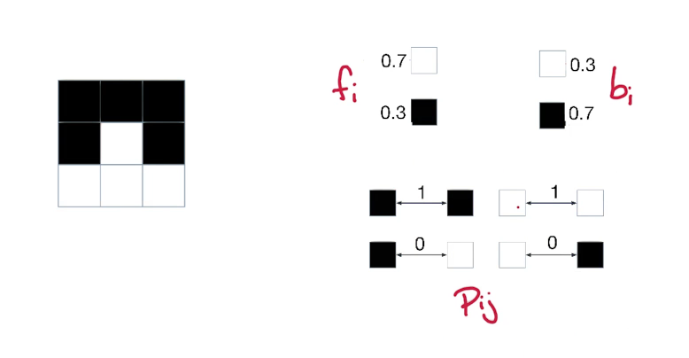
We will partition the image vertices, V, into F & B, just as before V = F ∪ B. Perhaps you can see where this is going? Clearly a pixel cannot belong to both F & B so this defines a cut. so we can compute the weight/capacity of this cut just as before.
w(F, B) = ∑i ∈ Ffi + ∑j ∈ Bbj − ∑i ∈ F, j ∈ BPij − ∑j ∈ F, i ∈ BPij
This defines a weight for an assignment of pixels to foreground and background. Now our image segmentation becomes just an optimization problem! Our goal is to maximize the weight w(F,B), we do this by looking over the possible partitions. Unfortunately though our min-cut algorithm requires an st-cut and returns a minimum. So a little extra work is required. Also recall that all the terms in a min-cut problems must be positive, so we need to convert the subtraction of the penalty into a positive term somehow.
So let's reformulate our problem just a bit
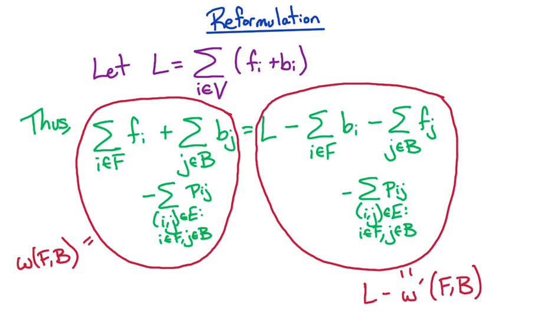
What this means is that
- for L = ∑i ∈ V(fi + bi)
- w(F, B) = ∑i ∈ Ffi + ∑j ∈ Bbj − ∑i ∈ F, j ∈ BPij
- this is the same as before
- w′(F, B) = ∑i ∈ Fbi + ∑j ∈ Bfj + ∑i ∈ F, j ∈ BPij
- this one takes some explanation
- sum of background likelihoods of pixels in the foreground
- plus sum of foreground likelihoods of pixels in the background
- plus sum of penalties
- Now we can relate w(F,B) and w'(F,B)
- w(F,B) = L - w'(F,B)
- thus maximizing w(F,B) is the result of minimizing w'(F,B)
Now we have a minimization problem, and all the terms of w'(F,B) are positive. Now we can use our max-flow solution using min st-cuts.
Let's review our new formulation:
Given an undirected graph G=(V,E) with weights:
- fi, bi ≥ 0, ∀i ∈ V
- $P_{ij} \ge 0, \forall (i,j) \in E $
Find the partition V = F ∪ B which minimizes w'(F,B)
What is still missing is our flow network, a directed graph. This is rather easy to add though. We will make all our edges bidirectional. Our original construction was to create a edge with no direction. Now for every edge e ∈ E we create E' composed of $\overset{\rightarrow}{ij} \in E$ and $\overset{\rightarrow}{ji} \in E$. each of these will also get the seperation penalty Pij
What we do next is add a source and sink vertices, s and t,
- foregrounds: fori ∈ V add edge s -> i of capacity fi
- similarly
- backgrounds: fori ∈ V add edge i -> t of capacity bi
Here's what our final graph looks like
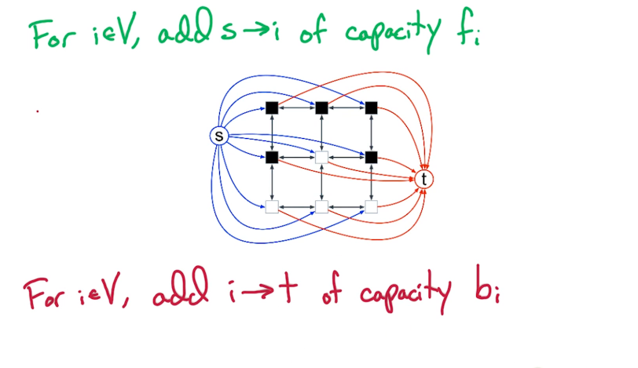
Now we have a flow network, and we have source & sink vertices. We can now run Ford-Fulkerson and get a Max-flow. Once we do we can compute the max-flow size to determine the min st-cut.
Let's take a moment to understand st-cuts in the context of this problem.
What is the capacity(F,B)? Recall that this is the sum of capacities
of edges going from F to B. What are these edges?
Suppose we define a partition like so
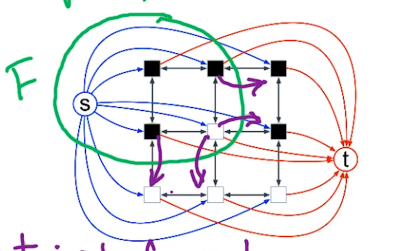
Which edges cross from F to B?
- for i ∈ F, get edges i -> t with cap bi, since all pixels got an edge to t
- for j ∈ B, get edges s -> j with cap fi, since the source s got an edge to all pixels
- we also get all the edges from pixels inside F to pixels inside B, but only those whose direction is outwards
- for (i, j) ∈ E : i ∈ F, j ∈ B get i -> j with capacity Pij
Summing all of these yields capacity(F,B) which is w'(F,B)
Let's summarize what we've done to arrive at a solution
- We began with the inputs G,f,b,p, where G was undirected
- our first step was define our flow network (G',c), where G' is directed with s,t in V
- we ran our max-flow to get $f^\cdot $
- which by the maxFlow-minCut theorem: size($f^\cdot $) = capacity of the min st-cut
- we demonstrated that capacity of the min st-cut = $\underset{F,B}{min} w'(F,B)$
- we also demonstrated that $\underset{F,B}{max} w(F,B)$ is achieved on the same partition as $\underset{F,B}{min} w'(F,B)$
In conclusion we've found the partition F,B that maximizes the equation w(F,B) = L - w'(F,B).
MF5 — Max-Flow Generalizations
MF5: Max-Flow Generalized
Demand Constraints
Input: Flow network, directed graph G(V,E), s, t ∈ V, c(e) > 0 for all e ∈ E. Additionally we are given the demand constraint d(e) ≥ 0 for e ∈ E Goal: To find a feasible flow, where feasible is defined as: for $e \in E, \\ d(e) \le f(e) \le c(e)$. Basically we need a valid flow, just as before, but we must also meet the demand expectations
This problem leads to two questions: first, is there a feasible flow?
Second, given the feasibility flow, what is the max flow?
Example
Let's re-use our example from previous sections. Numbers in green
represent the demand and those in red represents the capacity. Is there
a feasible flow for this example?
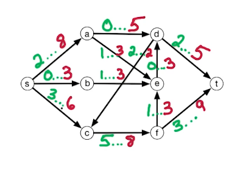
There is a feasible flow and it is tedious to determine
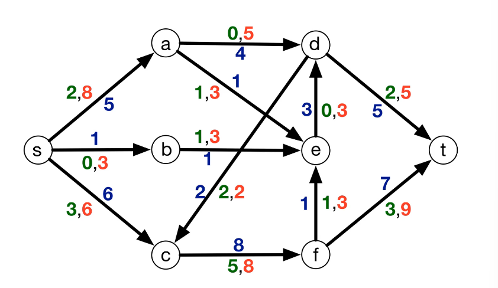
Algorithmically this is done by reducing the feasible flow problem to one of the max-flow. It's important to note that the feasible flow need NOT be a max flow, it just has to be feasible. Reduction implies that we will be able to make use of our max-flow algorithms without any alteration. We can modify the inputs of course, just as we did earlier to re-use DFS to find our strongly connected components. An added bonus to this approach is knowing the runtime of our algorithm, as well as their correctness.
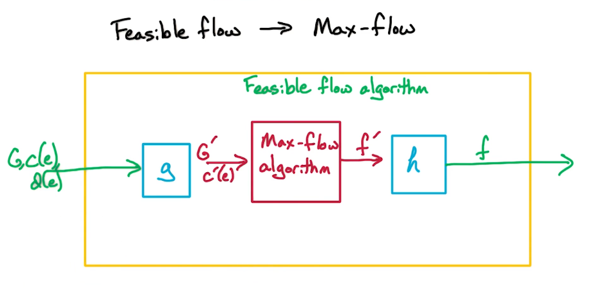
Above is a rough sketch of our approach
- We will use some algo g to construct G',c' to fit the inputs expected by our max-flow algo
- We will get back a flow f' which we must translate back, using some algo h, into our original inputs
- Our goal then is to find g & h
Part 1 Let's begin by looking at how to create G' and c', from the original inputs G,c, and d. Somehow we need to encode, or incorporate, the demand d into G and c to get G' and c'.
As is our usual approach to such problems let's sketch a simple graph
to help us visualize the situation. In the image below our simple graph
is on the left. The first number represents the demand, the second
number is the capacity.
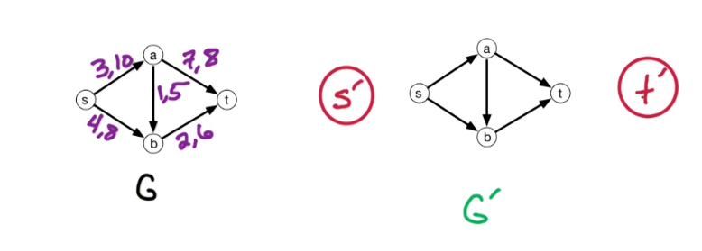
On the right side of the image we have a working prototype of G', we've taken the liberty of adding two new vertices s' and t'. It will become apprarent later why we've added these. For now it suffices to know these represent the start and end points of G'. Also notice that G' contains all the same vertices, and edges found in the original graph G.
What we will do is change the capacities so as to reflect the demands of the original problem. What we want to capture is that there is non-negative flow along an edge, f'(e) > 0, if and only if we can construct a flow in the original graph G that meets, or exceeds, the demand required (1). What we will also want is that the flow in G' satisfies this new capacity constraint, c' > f', iff the flow f satisfies the capacity constraint in the original network, c > f (2).
(1) $f'(e) \ge 0 \iff f(e) \ge d(e) $ (A flow of 0 in G' should
correspond to a flow of d in G)
(2) c′(e) ≥ f′(e) ⇔ c(e) ≥ f(e)
(3) $c'(e) = c(e) - d(e) $
In a manner these reflect a shifting of capacities, so we can formulate this as (3). Now consider how this reflects in the new graph. (sa) had a capacity of 10 and a demand of 3, t/f in G' we set (sa)' to capacity of 7. we've subtracted the demand of 3.
- ie ∀e ∈ E add e to G' with c'(e) = c(e) - d(e)
This results in the following Graph
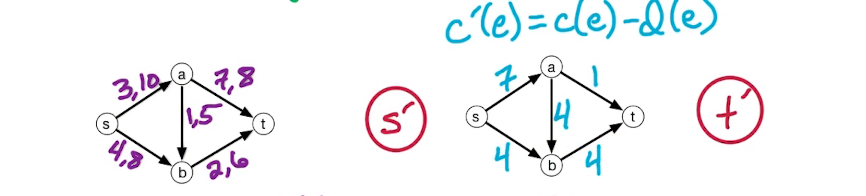
Our next step is to add some additional edges to G' to incorporate the start and end vertices, s' & t'. This is a bit trickier to understand. We want a valid flow in G' to correspond to a feasible flow in the original G. Suppose that the flow is 0 in G'. For example f'(sa)=f'(ab)=f'(at) = 0. Then what does this say about those edges in G? According to (1) above this means that each of these edges in G have a flow equal to their demand. But this could result in an invalid flow. In our example we would end up with a flow of 3 into a, and 7 out of a. This violates the conservation of flow and is t/f invalid. So we will use our new start and end vertices to remedy this situation. To do this we add an edge from s' to each vertice in G
- ie ∀v ∈ V add
s'->v to G' with c'(s',v) = d_into(v)
- Note that d_into(v) is the total demand for the vertex, it's not the demand of an edge.
- This gives us the ability to offset the flow, in order that we may conserve the flow
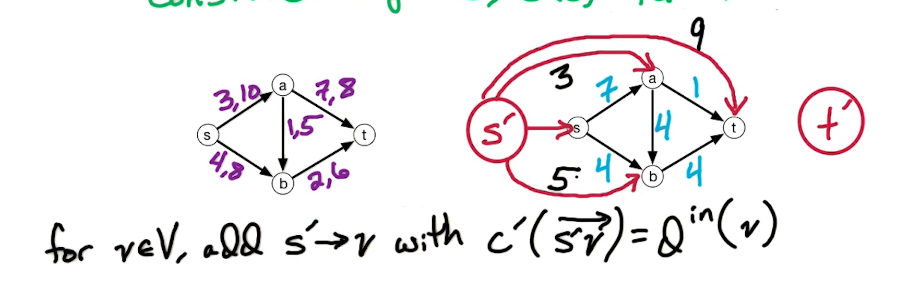
In a similar fashion we will also add an edge from each vertex to t'. Here we take the capacity to be the output demand of the vertex.
- ie ∀v ∈ V add v->t' to G' with c'(v,t') = d_outof(v)
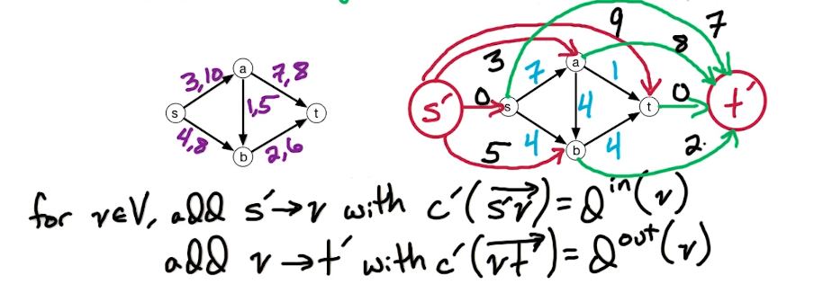
We're almost ready but there's a rather odd problem that is not so obvious. In G' s & t are no longer the start and end vertices. By adding a new start and end we've changed them into internal vertices, meaning they are now subject to the conservation of flow requirement. recall that s,t were excluded from this requirement because it wouldn't make sense before. A start vertex cannot have an inflow, nor can and end vertex have an outflow. But now they can. No worries, we will add a back edge from t to s to remedy this situation. Furthermore, there are no constraints on this edge so we will assign it a capacity of ∞
Now finally we have our final graph.
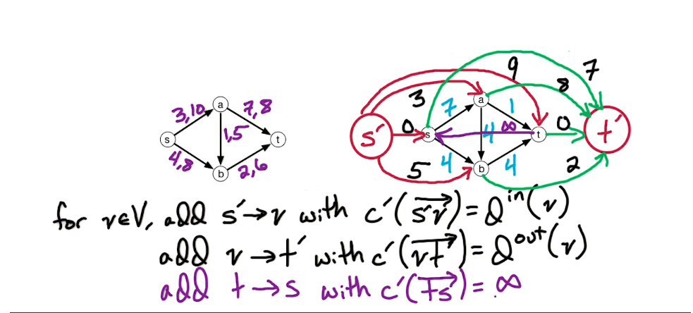
So what is the max-flow of this new graph G'? What we can see that is that it will be bounded by the total capacities out of s' and the total into t'. Let's consider this to see where it takes us
first observe that $D = \sum_{e \in E} d(e) = \sum_{v \in V} d\\into(v) = \sum_{v \in V} d\\outof(v)$
- summing the demand along each edge is the same as summing the demand into a vertex, or summing out of each vertex
- consequently
- $c'_{outof}(s') = \sum_{v \in V} d\\into(v) = D$
- $c'_{into}(t') = \sum_{v \in V} d\\outof(v) = D$
This tells us quite a bit about the size of the flow in G', in fact for flow f' in G', size(f') ≤ D. This is what is called saturating: F' is saturating if size(f') = D. And this means that the flow f' is of max size. This leads us to our next lemma.
Feasible iff Saturating
LEMMA G has a feasible flow ⇔ G' has a saturating flow
This provides us with the direction to solving our original problem, which is to find a feasible max flow. We will create our G' as outlined above, we run max-flow on G', then we check if the the size of the max-flow is equal to D or not. if it is equal then it is saturating and by the lemma G has a feasible flow. In fact we will take f', aka the saturating flow, and construct a feasible flow for the original G from it.
Proof of Lemma
Part 1: saturating ⟹
feasible
We will proceed by constructing a feasible flow f in G from the saturating flow f' in G'. recall that in the construction of G' we shifted the capacities of each edge by their demand d(e). So let's apply a similar logic to the flow. ie f'(e) = f(e) - d(e). Now we move the demand to the left side to get f'(e) + d(e) = f(e).
First let's check to see if f is feasible. It's trivial to see that if f′ ≥ 0 then f ≥ d, t/f f is feasible. This proves feasiblility but let's consider the 2nd condition as well: c ≥ f. Recall that this implies that
- f(e) ≤ c′(e) + d(e)
- f(e) ≤ (c(e) − d(e)) + d(e) sub the original eq of c'
- f(e) ≤ c(e) which is what we would expect
Not all that's left is to check that all inflows are equal to the outflows, ie the validity of the flow! To do this we need to prove that for any v ∈ V-{s,t}, fin(v) = fout(v). We know that fin′(v) = fout′(v) holds as it's the output of a max-flow algo. Let's look at fin′(v).
$\begin{split} f'_{in}(v) & = f'( \overset{\rightarrow}{s'v}) + \sum_{u \in V} f'(u-\>v) \\ & = d_{in}(v) + \sum_{u \in V} (f(u-\>v) - d(u-\>v)) & \text{ rewrite f' in terms of f } \\ & = \sum_{u \in V} f(u-\>v) & \text{ cancel out the demands as they both represent into v } \\ & = f_{in}(v) & \text{ summation of flows into v is just the inflow f\\in } \end{split}$
What this tells us is that the flow into v in G' is the same as the flow into v in G. A similar arguement can be made for the outflow of v in both G' and G. Together they give us the original statement that we wanted to prove, namely fin(v) = fout(v). t/f f is a valid flow as required.
In addition to proving the implication we've also shown how to construct the feasible flow
- Simply set f(e) = f'(e) + d(e)
Now let's move to proving the inverse implication
Part 2: feasible ⟹
saturating
In a manner similar to previous we will assume a feasible flow f in G,
and use it to construct a saturating flow f' in G'.
We begin by defining the flow f'(e) as a shifting of the original flow f(e) by d(e) units,
- for the original edges
- for all e ∈ E(the original G), let f'(e) = f(e) - d(e)
- but we also added edges that should be taken into account
- for v ∈ V
- let f'(s'->v) = dinto(v) in order for it to be fully saturated
- let f'(v->t') = doutof(v)
- let f'(t'->s') = size(f)
Now we have constructed flow so we need only show that it is saturated and is a valid flow.
Since f is assumed to be feasible we know that
- (1) f(e) ≥ d(e) ⟹ f'(e) ≥ 0
- (2) f(e) ≤ c(e) ⟹ f'(e) ≤ c(e) - d(e) = c'(e)
Now we check validity, fin′(v) = fout′(v).
We know that fin(v) = fout(v),
Let's see if/how can use this. Recall that fin′(v)
is the total demand from s' into v, dinto(v).
Plus the sum of all the internal vertices in V, which we can write in
terms of the original G as ∑u ∈ V(f(uv) − d(uv))
- ie fin′(v) = dinto(v) + ∑u ∈ V(f(uv) − d(uv))
- we cancel out the demand terms as they are the same and will offset each other, leaving us with
- fin′(v) = ∑u ∈ Vf(uv) = fin(v)
- similarly we can show that
- fout′(v) = ∑u ∈ Vf(vu) = fout(v)
Putting these together yields fin′(v) = fout′(v) which is our goal. hence f' is a valid flow
We've now proven that G has a feasible flow if and only if our constructed G' has a saturating flow.
So to find a feasible flow in G
- we construct G' as described above
- we run a max-flow algo on G' (either edmonds-karp or ford-fulkerson will work so pick your fav)
- check to see if the max-flow returned is equal to D, where D is the total capacity
- if it is equal to D
- then it is a saturating flow
- hence it can be transformed back to a feasible flow f for graph G.
The only thing that remains is to determine how to find a feasible flow that is also a max flow. Recall how our max-flow algorithms worked. Both FF and EK start with a zero-flow, build a residual graph, and iteratively find augmenting st-paths and increment along such paths, and rebuild the residual graph. They both terminate when they can no longer find augmenting st-paths. This guarantees that the flow constructed is a max-flow. We will take a similar pattern/approach to the max feasible flow.
Given feasible flow f
- Build a residual graph Gf (we will try to augment this)
- find st-path
- if found then augment and repeat
- else flow is at a max
However, this residual graph is not exactly the same as before.
Given a flow f over G
$c_f(\overset{\rightarrow}{vw}) =
\begin{cases} C(\overset{\rightarrow}{vw}) -
f(\overset{\rightarrow}{vw}) & if (\overset{\rightarrow}{vw}) \in E
\\ f(\overset{\rightarrow}{wv}) - d(\overset{\rightarrow}{wv}) & if
(\overset{\rightarrow}{wv}) \in E \\ 0 & otherwise \\
\end{cases}$
- Case 1 represents forward edges, thus this is the left over capacity from the flow
- Case 2 represents backwards edges, this is capped by the demand
constraint, it cannot decrease less than that
- basically back edges in this type of residual graph are limited to how much the flow exceeds the demands
- where as in the previous cases the only limit was 0
- Case 3 all edges not in 1 or 2
Example
Here is our example from earlier, along with it's graph G'. Your goal is to specify the capacities along each edge in G'
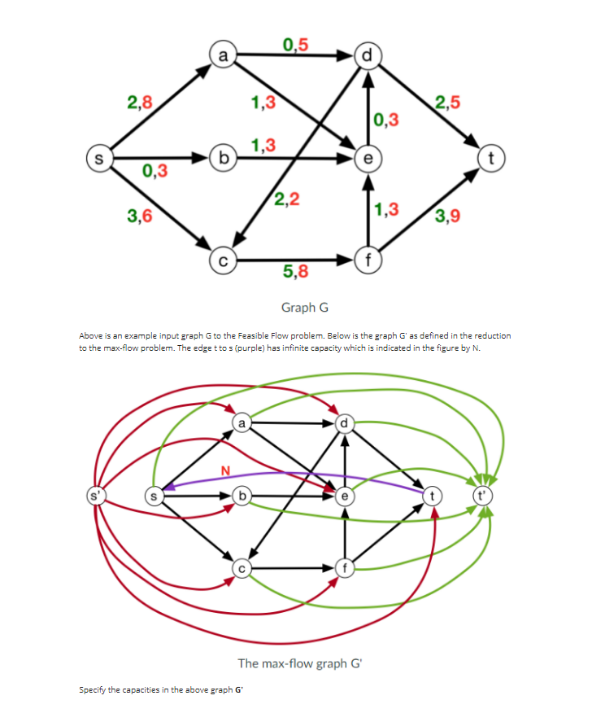
Solutions are in the appendix
GR4 — Markov Chains & PageRank
GR4: Markov Chains & PageRank
This module connects graph theory, linear algebra, and probability. PageRank uses all three to define the "importance" of a webpage. The key insight: importance = stationary distribution of a random walk.
1. What Is a Markov Chain?
A Markov chain is a random process that moves between states over discrete time steps, where the next state depends only on the current state (not the history).
Formally:
- N states: {1, 2, ..., N}
- Transition matrix P (N × N): P(i, j) = Pr(go from state i to state j)
Two key constraints on P:
- P(i, j) ∈ [0, 1] for all i, j (probabilities)
- Each row sums to 1: Σⱼ P(i, j) = 1 (from any state, you go somewhere)
A matrix with non-negative entries where every row sums to 1 is called a stochastic matrix.
Example: The CS 6210 Student
graph LR
K["Kishore<br/>(lecture)"] -->|0.5| K
K -->|0.5| E["Check<br/>Email"]
E -->|0.2| K
E -->|0.5| S["StarCraft"]
E -->|0.3| Z["Sleep"]
S -->|0.3| E
S -->|0.7| S
Z -->|0.7| K
Z -->|0.3| ZNote. Self-loops are allowed (and common) in Markov chains!
Transition matrix:
Kishore Email StarCraft Sleep
Kishore [ 0.5 0.5 0 0 ]
Email [ 0.2 0 0.5 0.3 ]
StarCft [ 0 0.3 0.7 0 ]
Sleep [ 0.7 0 0 0.3 ]Each row sums to 1.
2. k-Step Transitions: Powers of P
One step: P(i, j) = probability of going from i to j in 1 step.
Two steps: P²(i, j) = probability of going from i to j in exactly 2 steps.
k steps: Pᵏ(i, j) = probability of going from i to j in exactly k steps.
Intuition: Matrix multiplication naturally sums over all possible intermediate states — exactly what we need for multi-step probabilities.
Example: P² for the 6210 chain
P² = [ 0.35 0.25 0.25 0.15 ]
[ 0.31 0.25 0.35 0.09 ]
[ 0.06 0.21 0.64 0.09 ]
[ 0.56 0.15 0 0.09 ] (approximate)Verification: P²(2, 1) = Pr(Email → Kishore in 2 steps) = (Email → Kishore → Kishore) + (Email → Sleep → Kishore) = (0.2)(0.5) + (0.3)(0.7) = 0.10 + 0.21 = 0.31
3. What Happens for Large k?
Something remarkable: as k → ∞, the rows of Pᵏ all converge to the same vector.
For our example, P²⁰ ≈
[ 0.292 0.188 0.406 0.104 ]
[ 0.292 0.188 0.406 0.104 ]
[ 0.292 0.188 0.406 0.104 ]
[ 0.292 0.188 0.406 0.104 ]Every row is approximately π = [0.292, 0.188, 0.406, 0.104].
What this means: No matter where you start, after enough time steps, the probability of being in each state converges to π. You'll spend ~29.2% of your time listening to Kishore, ~40.6% playing StarCraft, etc. — regardless of starting state.
This π is the stationary distribution.
4. Stationary Distribution
Definition: A stationary distribution π is a row vector such that πP = π.
In other words: if you're in distribution π and take one step, you stay in π. It's a fixed point of the random walk.
Linear Algebra Perspective
πP = π means π is a left eigenvector of P with eigenvalue 1.
More generally, if μ₀ is your initial distribution (a row vector), then:
- After 1 step: μ₁ = μ₀ · P
- After 2 steps: μ₂ = μ₀ · P²
- After k steps: μₖ = μ₀ · Pᵏ
As k → ∞, μₖ → π regardless of μ₀ (under the right conditions).
Key Questions
- Does every Markov chain have a stationary distribution?
- Is it unique?
- Do we always converge to it?
The answer to all three is yes — if the chain is ergodic.
5. Ergodic Markov Chains
A Markov chain is ergodic if it's both:
(a) Irreducible (= Strongly Connected)
The underlying directed graph is one strongly connected component — you can get from any state to any other state.
Pitfall: If there are multiple SCCs, the starting state determines which states you can reach. No unique stationary distribution.
graph LR
subgraph SCC1
A --> B --> A
end
subgraph SCC2
C --> D --> C
endThis is NOT irreducible — starting in SCC1, you never reach SCC2.
Fix: Make the graph fully connected (positive probability between every pair).
(b) Aperiodic
The chain has no periodic structure. A chain is periodic if some states can only be revisited at regular intervals.
Pitfall: Bipartite graphs have period 2 — you alternate sides. At odd times you're on one side, even times on the other.
graph LR
L1 --> R1
L1 --> R2
R1 --> L1
R1 --> L2
R2 --> L2
L2 --> R1If you start on the left, at every even time you're on the left, every odd time on the right. Starting state matters!
Fix: Add self-loops (P(i, i) > 0 for all i). Even a tiny self-loop probability destroys periodicity.
The Ergodic Theorem
Theorem: If a Markov chain is ergodic (irreducible + aperiodic), then:
- There exists a unique stationary distribution π
- For any starting distribution μ₀, μ₀ · Pᵏ → π as k → ∞
- Every row of Pᵏ converges to π
Sufficient condition (easy to check): If P(i, j) > 0 for ALL i, j (every entry positive), then the chain is ergodic.
When Can We Compute π?
| Case | π |
|---|---|
| P is symmetric: P(i,j) = P(j,i) | π is uniform: π(i) = 1/N for all i |
| P is reversible: π(i)P(i,j) = π(j)P(j,i) | Can solve for π using detailed balance |
| General | No closed form — compute via Pᵏ for large k |
6. PageRank — Motivation
Problem: The web is a directed graph (vertices = pages, edges = hyperlinks). When someone searches for "Markov chains," many pages match. How do you rank them by importance?
Idea 1: Count incoming links
π(x) = |in(x)| (in-degree)
Problem: A link from CNN is worth more than a link from some random page. All links shouldn't count equally.
Idea 2: Scale by number of outgoing links
π(x) = Σ_{y ∈ in(x)} 1/|out(y)|
If page y has 1000 links, each one is worth 1/1000. If it has 5 links, each is worth 1/5.
Problem: A link from CNN should be worth more than a link from my kid's homepage, even if they have the same number of outgoing links. The importance of the source matters.
Idea 3: Weight by source importance (recursive!)
$$\pi(x) = \sum_{y \in in(x)} \frac{\pi(y)}{|out(y)|}$$
A citation from page y is worth π(y)/|out(y)| — proportional to y's importance, divided among its outgoing links.
This is a recursive definition — π appears on both sides. Is it well-defined? Is there a unique solution?
Intuition: This is exactly the equation πP = π for a random walk on the webgraph! PageRank = stationary distribution.
7. The Random Surfer Model
Imagine a "random surfer" who:
- Starts at any webpage
- At each step, follows a random outgoing hyperlink
This defines a Markov chain with transition matrix:
$$P(y, x) = \begin{cases} 1/|out(y)| & \text{if } y \to x \text{ is a hyperlink} \\ 0 & \text{otherwise} \end{cases}$$
The stationary distribution of this chain satisfies exactly the PageRank equation from above!
But there are problems:
- The webgraph has multiple SCCs → not irreducible
- Parts may be bipartite → periodic
- Some pages are sink nodes (no outgoing links) → transition undefined
8. Fixing the Problems — The Damping Parameter
To ensure ergodicity, we modify the random walk with a damping parameter α ∈ (0, 1):
At each step:
- With probability α: follow a random outgoing hyperlink
- With probability 1 - α: jump to a random page uniformly from ALL pages
This is the random surfer with a "random button." Google reportedly uses α ≈ 0.85.
The Modified Transition Matrix
For N total webpages:
$$P'(y, x) = \begin{cases} \alpha \cdot \frac{1}{|out(y)|} + (1-\alpha) \cdot \frac{1}{N} & \text{if } y \to x \in E \\ (1-\alpha) \cdot \frac{1}{N} & \text{if } y \to x \notin E \end{cases}$$
Since α < 1, every entry P'(y, x) > 0. The graph is fully connected → irreducible AND aperiodic → ergodic.
Therefore: a unique π exists, and it's the PageRank vector.
9. Handling Sink Nodes
A sink node x has no outgoing links: |out(x)| = 0.
The transition matrix is undefined for row x. Several fixes:
| Approach | How | Downside |
|---|---|---|
| Self-loop | With prob α, stay at x | Artificially boosts x's rank |
| Remove sinks | Recursively delete | Shrinks graph, some pages unranked |
| Random jump | With prob 1, jump to random page (set α=0 for sinks) | Most natural; apparently what Google does |
With the random jump approach: for sink node x, set P'(x, j) = 1/N for all j.
10. Computing PageRank in Practice
Method: Power iteration — repeatedly multiply by P.
FindPageRank(P', μ₀):
Input: Transition matrix P', initial distribution μ₀
Output: Approximate stationary distribution π
μ = μ₀
repeat until convergence:
μ_new = μ · P'
if ||μ_new - μ|| < ε: return μ_new
μ = μ_newKey considerations:
- P' is N × N where N = number of webpages (billions!). O(N²) is too expensive.
- But P' is sparse — the original webgraph has O(N) edges (constant out-degree on average)
- Matrix-vector multiplication μ · P' takes O(m) time where m = number of edges
- Convergence is fast because the random jump mixes things quickly
- In practice, use last week's π as the starting μ₀ for faster convergence
11. Putting It All Together
graph TD
A["Web Graph G<br/>(pages + hyperlinks)"] --> B["Build transition matrix P<br/>P(y,x) = 1/|out(y)|"]
B --> C["Add damping: P' = αP + (1-α)·1/N<br/>(handles SCCs, periodicity, sinks)"]
C --> D["Power iteration: μ·P'^k → π"]
D --> E["π = PageRank vector<br/>π(x) = importance of page x"]| Component | Role |
|---|---|
| Random walk on webgraph | Natural importance measure |
| Damping parameter α | Ensures ergodicity (unique π) |
| Stationary distribution π | = PageRank (importance) |
| πP = π | Eigenvector equation |
| Power iteration | Efficient computation |
12. Summary
| Concept | Key Point |
|---|---|
| Markov chain | Random walk defined by stochastic matrix P |
| Pᵏ(i,j) | Probability of i → j in k steps |
| Stationary distribution | π such that πP = π; left eigenvector with eigenvalue 1 |
| Ergodic | Irreducible (1 SCC) + aperiodic (self-loops); guarantees unique π |
| PageRank | π(x) = Σ π(y)/ |
| Random surfer | With prob α follow link, prob 1-α jump randomly |
| α (damping) | ≈ 0.85; ensures full connectivity; balances fidelity vs convergence |
| Sink nodes | Set α = 0 (always random jump) |
| Computing π | Power iteration μ · P'^k; O(m) per iteration |
Exam Tip: Know the connection between the three perspectives: (1) citation counting, (2) random walks/Markov chains, (3) eigenvectors. They all give the same equation.
Common Pitfall: The webgraph is NOT ergodic by itself (multiple SCCs, sinks, possible bipartiteness). The damping parameter is essential — without it, PageRank is not well-defined.
DPV chapter exercises
DPV chapter exercises (exact, from the textbook)
Exact end-of-chapter exercises, parsed from the DPV chapter PDFs.
DPV Ch 2 — Divide And Conquer — open exercises · chapter PDF
DPV Ch 1 — Algorithms With Numbers — open exercises · chapter PDF
Agent hint
Route by sub-topic: FFT→11A (eval at roots of unity, O(nlog n)), flow apps→11B (reduce to max-flow), modular/RSA→11C (fast mod-exp + factoring security), Bloom→11D (no false negatives). Quiz 8 is cumulative across the whole course.